Hectare 5
Manuel d'utilisation
Ce que fait le système Hectare 5
Le système de contrôle de semis avec le panneau Hectare 5 en une page — ce qu'il surveille, ce qu'il pilote et ce qu'il enregistre.
Le système de contrôle de semis avec le panneau Hectare 5 surveille le semis et l'épandage d'engrais solide et liquide sur les semoirs en ligne et les semoirs monograines. Lorsque la machine est équipée de moteurs électriques de doseur ou d'une pompe d'engrais liquide, il les pilote aussi, pour que la dose réglée soit réellement appliquée.
Le panneau se trouve dans la cabine et se commande du bout des doigts sur son écran — il n'a pas de boutons. Tout le reste est sur la machine : un capteur de graines par section, et ce dont la machine a besoin en plus. Ce que porte votre machine est saisi dans le profil ; les écrans montrent exactement cela.
Semences
- Applique les semences à la dose réglée par l'opérateur, par les moteurs électriques des doseurs.
- Surveille le semis réel par rapport à cette dose et signale une section qui prend du retard.
- Signale un tube bouché ou vide par son numéro.
- Compte les graines, les doubles et les manques en mode « Precise » (précis) — sur les semoirs monograines.
Engrais solide et liquide
- Applique l'engrais liquide à la dose réglée par la pompe électrique.
- Surveille les conduites d'engrais solide et liquide et signale par numéro une section qui prend du retard ou se bouche.
La machine autour du produit
- Niveau de la trémie, rotation de l'arbre du doseur, vitesse de la turbine, pression ou dépression d'air, vitesse d'avancement — chacun par rapport à ses propres limites.
- Les capteurs d'un moteur autonome d'entraînement de la turbine : pression d'huile, charge de la batterie, allumage, niveau de carburant, filtre à air.
- Position de travail ou de transport de la machine, et traceurs.
Jalonnage
- Crée le jalonnage avec des actionneurs ou en arrêtant des moteurs de doseur.
- Fait avancer le passage de jalonnage tout seul à partir des capteurs de traceurs ou du capteur de position de travail.
- Continue de surveiller les sections coupées, de sorte qu'une section qui sème dans le jalonnage est tout de même signalée.
Vitesse par le récepteur GPS intégré
Le panneau possède son propre récepteur GPS. Il peut prendre la vitesse d'avancement aux satellites au lieu d'un capteur de roue, et il indique combien de satellites il reçoit. Voir GPS.
Enregistrements
- Surface traitée, séparée en surface semée, non semée et inconnue.
- Statistiques détaillées du travail, conservées pour cinq parcelles.
- Rapports écrits sur la carte mémoire.
Le panneau et son écran tactile
De quoi se compose le panneau Hectare 5 du côté de l'opérateur — un écran tactile sans boutons — et ce qui est intégré en plus.
L'Hectare 5 n'a aucun bouton. Tout se fait du bout des doigts sur l'écran : touchers, maintien du doigt, glissements, et touchers à deux ou trois doigts. Ce que fait chaque geste sur chaque écran est décrit dans Zones tactiles et gestes.
L'écran
- Écran couleur 800 × 480 avec surface tactile. Il reconnaît jusqu'à trois doigts à la fois — c'est ainsi que le panneau distingue un toucher d'un toucher à deux ou à trois doigts.
- La luminosité se règle à la main, par paliers de 10 %, dans le menu « Settings » (réglages). Il n'y a pas de luminosité automatique. Voir Régler la luminosité de l'écran.
- Le son. Le panneau émet un clic à chaque toucher reconnu, si « Buttons sound » (son des touches) est réglé sur « Yes » (oui) dans le menu Settings. Un geste que l'écran affiché n'utilise pas ne produit aucun clic. Les alarmes ont leur propre son, et le panneau émet un bip quand le semis démarre et s'arrête.
Intégré au panneau
| Élément | Ce que vous en voyez |
|---|---|
| Lecteur de carte microSD | Un symbole de carte sur l'écran d'accueil tant qu'une carte est prête. Les rapports sont écrits sur la carte. Voir Carte mémoire. |
| Horloge avec sa propre pile | L'heure en haut à droite de l'écran d'accueil. Une pile d'horloge faible s'affiche BAT. Voir Horloge. |
| Récepteur GPS | Un symbole de satellite dans la colonne de droite de l'écran d'accueil, avec le nombre de satellites. Il peut servir de source de vitesse. Voir GPS. |
Comment fonctionnent les écrans, les menus et les fenêtres : Menus, menus contextuels, pavé numérique et fenêtres.
Mise sous tension
Ce que fait le panneau après la mise sous tension, dans quel état il démarre, et ce qu'il faut attendre avant de l'éteindre.
Quand le panneau est alimenté, un écran de démarrage avec le logo apparaît. L'écran de démarrage reste affiché jusqu'à ce que tous les appareils raccordés au panneau aient répondu — en général quelques secondes, quinze au plus — puis l'écran d'accueil s'ouvre.

Dans quel état le panneau démarre
- Niveau d'accès : Operator. Le panneau démarre au niveau Operator (opérateur) après chaque mise sous tension, quel que soit le niveau réglé auparavant. Éteindre puis rallumer est donc aussi le moyen le plus rapide de revenir à Operator — le seul niveau où les fenêtres d'alarme s'affichent. Voir Niveaux d'accès.
- L'écran d'accueil ordinaire. Le second écran d'accueil ne s'ouvre jamais de lui-même ; vous l'ouvrez à la main.
- Application verrouillée, si la vitesse est simulée. Si la simulation de vitesse est activée dans le capteur de vitesse et que la machine possède des moteurs électriques de doseur ou une pompe d'engrais liquide, le panneau démarre avec l'application du produit verrouillée à la main. Déverrouillez-la quand vous êtes prêt : Verrouiller l'application du produit à la main.
La version du micrologiciel et le numéro de série peuvent être consultés à tout moment : toucher à deux doigts sur l'écran d'accueil, puis « About » (à propos) dans le menu principal. La fenêtre se ferme avec « Close » (fermer).
Avant d'éteindre
- Les réglages sont enregistrés d'eux-mêmes quelques secondes après votre dernière modification. Attendez quelques secondes après avoir modifié un réglage avant d'éteindre le panneau.
- Les statistiques sont écrites toutes les cinq minutes et à l'arrêt de la machine. N'éteignez le panneau qu'une fois arrêté — sinon le dernier tronçon de travail est perdu dans les statistiques.
Menus, menus contextuels, pavé numérique et fenêtres
Les cinq éléments par lesquels tout passe sur le panneau — écrans de travail, menu principal, menu contextuel d'un appareil, pavé numérique et fenêtres qui interrogent ou informent — et comment chacun se commande au toucher.
Tout ce qui se passe sur le panneau passe par cinq éléments : les écrans de travail, le menu principal, le menu contextuel d'un appareil, le pavé numérique et les fenêtres qui vous posent une question ou vous informent. Tous se commandent du bout des doigts ; les gestes sont listés dans Zones tactiles et gestes. Les écrans de travail ont leur propre rubrique : Écrans de travail.
Le menu principal
Touchez l'écran d'accueil avec deux doigts. Le menu principal s'ouvre sur l'écran d'accueil, avec son premier élément sélectionné. Sur le second écran d'accueil, un toucher sur le symbole des réglages fait la même chose.

- Élément sélectionné. Texte noir sur bandeau bleu. Ici « Fill the disks with seeds » (remplir les disques de semences) — voir Remplir les disques.
- « Settings » (réglages). Les réglages du système et de la machine. Voir Le menu Settings.
- Pointe de flèche. L'élément ouvre un autre menu.
- « Service » (service). Éléments de mise en service et d'entretien. Affiché à partir du niveau Agronomist.
- « About » (à propos). Une fenêtre avec la version du micrologiciel et le numéro de série du panneau ; « Close » (fermer) la ferme.
Commander un menu au toucher :
- Touchez un élément pour le sélectionner — le bandeau bleu se déplace sur lui.
- Touchez de nouveau l'élément sélectionné pour y entrer : il ouvre son menu, lance son action ou ouvre le pavé numérique. Maintenir le doigt sur un élément fait les deux à la fois.
- Glissez le doigt vers la droite ou vers la gauche n'importe où sur le menu pour augmenter ou diminuer la valeur de l'élément sélectionné. Un geste court la change d'un pas ; un geste plus long continue de compter tant que le doigt avance. Le glissement modifie toujours l'élément du bandeau bleu, pas celui qui est sous votre doigt. Les listes de mots tournent en boucle : après le dernier mot vient le premier.
- Glissez vers le haut ou vers le bas pour faire défiler un long menu.
- Touchez en dehors du menu, sur l'écran assombri, pour le quitter. Un toucher à trois doigts fait de même.
Un élément se lit d'après ce qui figure à sa droite. Les signes - et + n'apparaissent qu'autour de la valeur de l'élément sélectionné.
| Ce que vous voyez à droite | Ce que cela signifie |
|---|---|
| Une pointe de flèche > | L'élément ouvre un autre menu. Touchez-le de nouveau. |
| Une valeur entre - et + | Glissez vers la droite pour l'augmenter, vers la gauche pour la diminuer, directement dans la liste. |
| Une valeur entre -[** et **]+ | Un glissement, ou un second toucher, ouvre le pavé numérique. |
| ! | L'élément écrase des valeurs enregistrées : il remet les statistiques à zéro, enregistre ou charge des réglages, règle un appareil ou remet des valeurs à leurs réglages par défaut. Touchez-le de nouveau. |
| Rien | L'élément exécute une action. Touchez-le de nouveau. |

Les réglages sont enregistrés d'eux-mêmes quelques secondes après la dernière modification ; il n'y a rien à enregistrer.
Le menu contextuel d'un appareil
Chaque capteur, moteur et indicateur de l'écran d'accueil a son propre menu. Maintenez le doigt sur l'appareil — son icône ou sa colonne sur le schéma — plus d'une demi-seconde, et son menu contextuel s'ouvre. Un simple toucher ne fait rien. Sur l'écran Motors et sur le second écran d'accueil, cela fonctionne de même pour la tuile d'un moteur.

Le premier élément, « Information » (informations), ouvre l'écran d'état de l'appareil ; là, un glissement vers la droite ou vers la gauche affiche l'appareil suivant ou le précédent, et un glissement vers le haut ou un toucher à trois doigts ramène en arrière. Le deuxième élément commute la surveillance : « Disable control » (désactiver la surveillance) ou « Enable control » (activer la surveillance) — voir Mettre un capteur sous ou hors surveillance. En dessous se trouvent les paramètres ; ceux que vous voyez dépendent du niveau d'accès (Niveaux d'accès). Tous les paramètres : Réglages des capteurs.
Saisir des nombres
Quand une valeur est écrite entre crochets, la modifier ouvre le pavé numérique.

- Nom du paramètre. Ici « Width, cm » (largeur, cm).
- Valeur. Ce que vous avez saisi jusqu'ici.
- Retour arrière. Efface le dernier chiffre. Maintenez le doigt dessus pour effacer toute la valeur.
- Chiffres. De 1 à 9.
- Touche point. Ajoute la virgule décimale — uniquement pour une valeur à décimales.
- Zéro.
- « OK ». Valide la valeur.
Une valeur hors de la plage permise n'est pas refusée : le panneau règle à la place la limite la plus proche.
Fenêtres qui interrogent et fenêtres qui informent
Une fenêtre est un cadre au milieu de l'écran avec un bandeau coloré le long de son bord supérieur — sans aucun mot — et le message sous le bandeau.
| Fenêtre | Ce que c'est | Comment elle se ferme |
|---|---|---|
| Bandeau bleu, boutons en dessous | Le panneau pose une question. Rien ne se passe tant que vous n'avez pas répondu. | Touchez « Yes » (oui, vert) ou « No » (non, rouge). Un toucher en dehors du cadre annule : rien n'est modifié. |
| Bandeau bleu, sans boutons | Le panneau vous dit ce qui s'est passé. | Certaines se ferment d'elles-mêmes après environ deux secondes, d'autres par un toucher dans le cadre. |
| Bandeau rouge, sans boutons | Le panneau signale une erreur, par exemple « Invalid PIN » (code invalide). | Comme ci-dessus. |
| Bandeau rouge et barre rouge avec « FAILURE! » (défaillance !) | Une alarme. | Voir ci-dessous. |
Une fenêtre de question ignore les touchers pendant la première demi-seconde, pour que le toucher qui l'a ouverte n'y réponde pas.
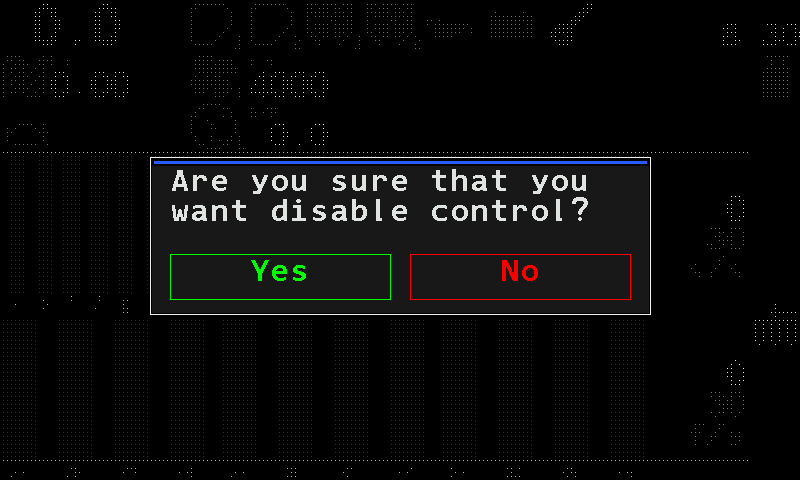
Fenêtres d'alarme
Une fenêtre d'alarme indique ce qui s'est passé, sur quel type d'appareil, et quels appareils — leurs numéros sont listés quand plusieurs capteurs identiques signalent le même défaut, par exemple #1-4,7. Tant qu'elle est ouverte, le panneau fait sonner l'alarme.
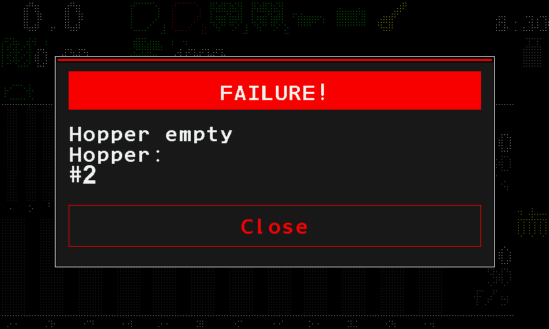
Touchez « Close » dans la fenêtre. Cette alarme se ferme et le son s'arrête ; l'alarme suivante de la file apparaît. Rien d'autre ne ferme une fenêtre d'alarme — les touchers ailleurs sont ignorés.
Démarrage rapide — préparer la machine et se mettre en route
L'ordre de préparation de la machine, ce qu'il faut vérifier avant d'aller au champ, ce qui se passe quand vous démarrez, et ce qu'il faut surveiller pendant le travail.
Votre machine n'a peut-être pas toutes les étapes — sautez celles qu'elle n'a pas. Le menu principal s'ouvre par un toucher à deux doigts sur l'écran d'accueil ; le menu contextuel d'un appareil par un maintien du doigt sur l'appareil (Bases de l'interface).
Avant d'aller au champ
Étalonnez le capteur de vitesse. La surface, les doses et les écarts sont tous calculés à partir de la vitesse ; une vitesse fausse fausse tous les autres chiffres. À l'arrêt, maintenez le doigt sur le champ de vitesse et choisissez « Speed calibration » (étalonnage de la vitesse) — au niveau Operator. Le même élément se trouve sous « Settings » (réglages) → « Seeding machine parameters » (paramètres du semoir), au niveau Agronomist. Voir Capteur de vitesse.
Étalonnez les cannelures des doseurs — sur les machines qui appliquent les produits en masse. Depuis le menu contextuel de chaque doseur (« Dispenser calibration(weight) », étalonnage du doseur (masse), affiché quand sa régulation en masse est activée) ou de chaque moteur de doseur, au niveau Operator, à l'arrêt. Voir Réglages des capteurs.
Vérifiez le rythme de jalonnage, si la machine fait des jalonnages. Voir Régler le rythme de jalonnage.
Vérifiez les paramètres des capteurs — la liste est plus bas.
Vérifiez chaque section : est-elle sous surveillance, applique-t-elle du produit. Voir Les quatre états d'une section.
Choisissez la parcelle sur l'écran Statistics : toucher à deux doigts, « Select field » (choisir la parcelle). Pour une nouvelle parcelle, effacez d'abord ses statistiques avec « Zero statistics » (remettre les statistiques à zéro). Voir Écran Statistics.
Réglez les doses — semis, engrais solide, engrais liquide. Voir Modifier la dose de consigne.
Vérifiez le niveau d'accès. Il doit être « Operator » (opérateur) : « Settings » → « User » (utilisateur).
Plusieurs de ces réglages exigent le niveau Agronomist — « Seeding machine parameters » entre autres. Montez le niveau (Activer le niveau Agronomist), faites ce qui l'exige, redescendez à Operator, faites le reste.
Paramètres des capteurs à vérifier
- Capteur de vitesse — « Min speed, km/h », « Max speed, km/h ».
- Capteur de doseur — « Period, s », pour chaque capteur.
- Capteur de turbine — « Minimum, rpm », « Maximum, rpm », pour chaque capteur.
- Capteur de pression — « Minimum, Pa », « Maximum, Pa », pour chaque capteur.
- Pompe d'engrais liquide — « Pulses per liter », « Max pressure, Bar ».
- Capteurs de graines et d'engrais solide — « Fraction », « Correction », « Recalculation,m » ou « Recalculation,sec » ; en mode « Precise » ou « Hybrid » aussi « Rate error,% ».
- Moteurs électriques, mode « Precise » — « Holes in disk ».
- Moteurs électriques, dosage en masse — pour chaque moteur, « Weight, gr » et « Rotations ». L'étalonnage en masse remplit les deux.
Détails : Réglages des capteurs.
Se mettre en route
Mettez la machine en position de travail.
Semoirs monograines à moteurs de doseur : remplissez les disques — menu principal, « Fill the disks with seeds ». Sans cela, les premiers mètres de chaque rang sont vides. Voir Remplir les disques.
Semoirs à céréales : rien à lancer. Les moteurs de dosage se mettent à tourner d'eux-mêmes dès que la régulation de l'application du produit démarre — au moment où vous démarrez.
Roulez.
Quand la régulation démarre. Le verrouillage manuel doit être désactivé (Verrouiller l'application du produit à la main). Si un capteur de position de travail est monté et sous surveillance, la régulation commence quand vous avancez avec la machine abaissée ; sans un tel capteur, dès que vous avancez. Les alarmes démarrent après le délai réglé sous « Settings » → « Alarm delay » (délai d'alarme), de 2 à 20 secondes.
| Son | Ce que cela signifie |
|---|---|
| Un bip court | Le panneau voit la machine semer. À partir de maintenant, les sections sont surveillées. |
| Trois bips courts | Le semis s'est arrêté — en fourrière, ou les colonnes sont passées sous la ligne de contrôle. |
Sur les semoirs à céréales en mode « Flow » ou « Hybrid », laissez le panneau trouver lui-même le seuil d'alarme : Régler le seuil d'alarme automatiquement.
Pendant le travail
Surveillez quatre choses : la vitesse par rapport au tracteur, la turbine et la pression dans leur plage, la dose réelle par rapport à la dose de consigne, et qu'aucun capteur ne soit en alarme. L'écran Table montre comment va chaque section à l'instant même ; l'écran Statistics comment s'est déroulée toute la parcelle.
Si le capteur de vitesse tombe en panne, voir Travailler sans capteur de vitesse.
À propos des images de ce manuel
Quelles images de ce manuel restent à venir, pourquoi le texte tient sans elles, et ce qui, sur une image de banc d'essai, appartient au banc et non à votre machine.
Les écrans de ce manuel sont photographiés sur un panneau Hectare 5 installé sur un banc d'essai. Tant qu'une image n'est pas prise, sa place porte les mots Picture to follow. Le texte qui l'entoure décrit l'écran avec des mots — rangée du haut, colonne de droite, champ de dose — de sorte que chaque rubrique reste utilisable sans son image.
La photographie du panneau est une image produit. Les textes de son écran ne sont pas en anglais ; la disposition de l'écran d'accueil est la même.
Les mots sur votre écran
Dans cette version du micrologiciel, les menus du panneau sont en anglais ; le manuel les cite donc en anglais, avec leur sens en français. Il cite chaque libellé exactement comme le panneau anglais l'affiche — y compris des graphies qui paraissent inhabituelles, comme « Factical » et « Setuped » sur l'écran Statistics, ou ks/Ha pour des milliers de graines par hectare. Cherchez les mots tels qu'ils sont imprimés ici.
Ce qui appartient au banc
Un panneau de banc montre quelques éléments que votre panneau ne montrera pas. Quand les images arriveront, lisez-les avec ce tableau.
| Ce que vous voyez sur une image | Pourquoi c'est là | Ce que montre votre panneau à la place |
|---|---|---|
| Une heure bleue dans l'emplacement de l'horloge, puis TRIAL, puis rien | Le panneau de banc fonctionne avec une licence d'essai ; le chiffre bleu est le temps restant. | L'heure. Voir Horloge. |
| IMITAT en jaune dans l'emplacement de l'horloge | Le banc fonctionne dans un mode de simulation du menu de service. | L'heure. |
| Un chiffre de vitesse jaune, ou IMITATION dans le champ de vitesse | La vitesse est simulée, pas mesurée — aucune roue ne tourne sur un banc. | La vitesse mesurée en blanc. Voir Vitesse. |
| Des colonnes qui bougent alors que la machine est à l'arrêt | Le flux de graines est simulé sur le banc. | Des colonnes qui ne bougent que pendant le semis. |
| Des trémies rouges, un bidon d'huile ou une batterie rouges | Le banc n'a ni produit ni moteur. | Des icônes vertes tant que tout est en ordre. |
| Un symbole d'actionneur rouge dans la colonne de droite | Les actionneurs cités dans le profil du banc ne sont pas montés, le panneau les signale donc en défaut. | Rien — le symbole n'est pas affiché tant que tous les actionneurs sont en ordre. Voir Défaut d'actionneur. |
| Une × rouge à la place d'une icône | Un appareil cité dans le profil du banc n'est pas raccordé. | L'icône de l'appareil. |
| Des zéros sur l'écran Statistics | Les statistiques du banc étaient vides quand l'image a été prise. | Vos chiffres. |
L'écran d'accueil
Ce qu'est chaque partie de l'écran d'accueil — vitesse, indicateurs, surface, doses, diagrammes des sections — sur un semoir à céréales à l'arrêt et sur un semoir monograine au travail, et ce que vous pouvez en faire au toucher.
L'écran d'accueil est l'écran de travail principal. Il montre les diagrammes des capteurs de surveillance des sections, les indicateurs d'état des appareils et les chiffres clés du travail. Ce qu'il montre suit le profil : chaque groupe de capteurs et d'appareils saisi dans le profil obtient ses icônes, ses colonnes, son champ de dose.
L'écran compte quatre zones. La vitesse d'avancement s'affiche en grand en haut à gauche. Les rangées d'indicateurs courent le long du haut, avec l'horloge en haut à droite. Une colonne d'indicateurs descend le long du bord droit. La partie basse contient les diagrammes — une colonne par section — chacun avec son champ de dose à droite.
Un semoir à céréales avec semences et engrais
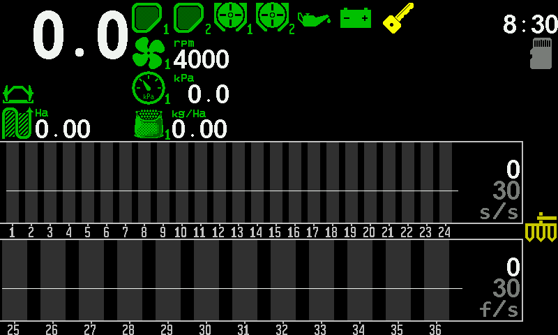
- Vitesse d'avancement. En km/h. Les messages sur la vitesse remplacent le chiffre. Vitesse
- Trémies. Une icône par capteur de trémie, numérotée. Rouge — le niveau est sous le capteur. Trémie
- Doseurs. Rotation des arbres de doseur ; l'icône tourne tant que l'arbre tourne. Doseur
- Turbine. L'icône de la turbine et sa vitesse en tr/min. Turbine
- Capteurs du moteur. Pression d'huile, charge de la batterie et allumage du moteur d'entraînement de la turbine. Capteurs du moteur
- Horloge. L'heure ; l'emplacement porte aussi des messages. Horloge
- Carte mémoire. Affichée tant qu'une carte microSD est prête. Carte mémoire
- Surface. Hectares traités sur la parcelle active. Surface
- Dose de produit en masse. La dose d'un produit, en kg/ha. Dose de produit en masse
- Diagramme des semences. Une colonne par capteur de graines ; la ligne blanche est la ligne de contrôle. Le diagramme des sections
- Champ de dose. Dose mesurée en haut, consigne en dessous, ici en graines par seconde. Modifier la dose de consigne
- Diagramme de l'engrais. Les sections d'engrais, avec leur propre champ de dose.
- Colonne de droite. Position de la machine, verrouillage manuel, satellites, défaut d'actionneur — selon ce que possède la machine. Indicateurs
- Numéros de section. Le numéro de chaque section, sous sa colonne.
Un semoir monograine au travail

- Vitesse d'avancement. Vitesse
- Trémie. Vert — le produit est au-dessus du capteur.
- Pression. Dépression ou surpression en kPa. Pression
- Surface. Hectares traités sur la parcelle active.
- Population. La dose de semis réelle en milliers de graines par hectare. Population
- Colonne de section. Vert — le rang sème dans sa tolérance. Couleurs des colonnes
- Barre des manques. Hachures jaunes à gauche d'une colonne : la part de manques dans ce rang.
- Barre des doubles. Hachures bleues à droite d'une colonne : la part de doubles.
- Ligne de dose. La dose de consigne sur tous les rangs.
- Repères de tolérance. Limites haute et basse de l'écart admis, dans chaque colonne.
- Champ de dose. Graines par mètre mesurées en haut, consigne en dessous.
- Position de la machine. Vert — abaissée, au travail. Position de la machine
Ce que signifie chaque indicateur dans tous ses états est décrit dans Indicateurs ; le diagramme lui-même — ligne, repères, couleurs — dans Le diagramme des sections.
Ce que vous pouvez faire depuis l'écran d'accueil
| Pour faire ceci | Faites ceci |
|---|---|
| Ouvrir le menu principal | Touchez avec deux doigts |
| Modifier la dose de consigne ou le seuil d'alarme | Maintenez le doigt sur le diagramme, puis glissez vers le haut ou vers le bas — Modifier la dose de consigne |
| Régler la consigne d'un produit en masse | Maintenez le doigt sur son indicateur kg/ha ; le pavé numérique s'ouvre |
| Laisser le panneau régler le seuil d'alarme | Double toucher, pendant l'application — Régler le seuil d'alarme |
| Verrouiller ou déverrouiller l'application du produit | Maintenez le doigt sur un emplacement vide de la colonne de droite — Verrouiller l'application à la main |
| Ouvrir les réglages d'un appareil | Maintenez le doigt sur son icône ou sa colonne |
| Passer à l'écran de travail suivant | Long glissement vers la gauche — Écrans de travail |
| Ouvrir le second écran d'accueil | Long glissement vers la droite — Second écran d'accueil |
Un long glissement parcourt plus d'un tiers de l'écran. Tous les gestes sur tous les écrans : Zones tactiles et gestes.
Le diagramme des sections — colonnes, ligne et couleurs
Comment lire les colonnes de l'écran d'accueil en mode « Precise » et en mode « Flow », et ce que signifie la ligne de contrôle.
Chaque colonne du diagramme est une section — un capteur de graines ou d'engrais. Sa hauteur est le débit qui traverse cette section. Le reste du tracé dépend du mode de contrôle du semis : « Precise » (précis — graines par mètre, avec manques et doubles) ou « Flow » (débit — graines par seconde par rapport à un seuil d'alarme). Le champ de dose se trouve à l'extrémité droite de chaque diagramme : le chiffre mesuré en haut, la consigne ou le seuil d'alarme en dessous, l'unité sous eux.
Mode « Precise »

- Dose de consigne. En gris, en graines par mètre (s/m). C'est le chiffre que vous modifiez au toucher.
- Dose mesurée. En blanc — la moyenne des rangs à l'instant.
- Échelle des barres. La part de manques ou de doubles à laquelle une barre atteint le haut — « Scale S&D,% » dans les réglages.
- Ligne de dose. La consigne, tracée sur tous les rangs.
- Repère supérieur. La limite haute de la tolérance, dans chaque colonne.
- Repère inférieur. La limite basse de la tolérance.
- Colonne. Verte — le rang sème dans la tolérance.
- Barre des manques. Hachures jaunes sur le bord gauche d'une colonne. Plus elle est haute, plus il y a de manques dans ce rang.
- Barre des doubles. Hachures bleues sur le bord droit d'une colonne. Plus elle est haute, plus il y a de doubles.
- Numéro de section.
Mode « Flow »

- Seuil d'alarme. En gris, en graines par seconde (s/s). Le niveau sous lequel une section est considérée comme perdant du débit.
- Dose mesurée. En blanc — la moyenne des rangs à l'instant.
- Ligne de contrôle. Le seuil d'alarme, tracé sur tous les rangs.
- Colonne au-dessus de la ligne. Verte — le rang fonctionne.
- Partie vide d'une colonne. Gris foncé au-dessus du vert : plus le vert monte haut, plus le débit est grand.
- Numéros de section. Les sections d'engrais continuent après les sections de semences.
- Diagramme de l'engrais. Le même, pour les capteurs d'engrais.
- Champ de dose de l'engrais. Valeur mesurée en haut, seuil d'alarme en dessous, en engrais par seconde (f/s).
Pour modifier la consigne ou le seuil d'alarme, maintenez le doigt sur le diagramme jusqu'à ce que son chiffre de consigne s'allume, puis glissez vers le haut ou vers le bas — un pas par glissement. Un toucher en dehors des diagrammes y met fin. Voir Modifier la dose de consigne.
La ligne : les rangs en dessous ne sont pas sous surveillance
La ligne est la limite d'un bouchage partiel, pas un élément décoratif. Une colonne au-dessus de la ligne est un rang qui fonctionne ; une colonne qui passe en dessous est un rang qui perd du débit — bien avant de se boucher complètement.

- « NOT UNDER CONTROL » (hors surveillance). Les rangs de ce diagramme ne sont pas surveillés.
- Colonnes sous la ligne. Chaque rang débite moins que le seuil.
- Ligne de contrôle. Tirée au-dessus du débit réel.
- Seuil d'alarme. Plus haut que ce que sème la machine.
- Dose mesurée. Plus basse que le seuil d'alarme.
« NOT UNDER CONTROL » n'ouvre aucune fenêtre d'alarme ; au niveau Operator, le panneau fait sonner l'alarme à la place. Les rangs sous la ligne sont hors surveillance volontairement : le panneau refuse de garder un seuil réglé au-dessus de ce que la machine débite réellement. Abaissez le seuil jusqu'à ce que les colonnes se tiennent au-dessus de la ligne, ou laissez le panneau le régler par un double toucher : Régler le seuil d'alarme automatiquement.
Pour savoir si la machine sème ou non, le panneau se fonde sur la part de rangs qui sèment — le réglage de capteur « Percent of sowing,% » (pourcentage de semis), 20 % par défaut. En fourrière, les rangs sortent de la surveillance ; au passage suivant, ils y reviennent, avec ou sans capteur de position de travail. Le panneau l'annonce par le son : trois bips courts quand le semis s'arrête, un bip court quand il reprend.
Ce que signifient toutes les couleurs et tous les symboles d'une colonne, et les quatre états d'une section : Couleurs des colonnes et états des sections.
Couleurs des colonnes et les quatre états d'une section
Ce que signifient chaque couleur et chaque symbole d'une colonne du diagramme des sections, et les quatre combinaisons de surveillance et d'application du produit dans lesquelles une section peut se trouver.
La construction du diagramme — ligne de dose, repères, ligne de contrôle — est décrite dans Le diagramme des sections. Cette page énumère les aspects que peut prendre une colonne isolée.
Couleurs des colonnes
| Ce que vous voyez | Ce que cela signifie |
|---|---|
| Colonne verte | Le rang sème normalement. |
| Colonne bleue | Le rang sème plus que ne le permet la consigne (« Precise » et « Hybrid »). |
| Colonne jaune | Le rang sème moins que ne le permet la consigne (« Precise » et « Hybrid »). |
| Fond clignotant rouge foncé, pas de colonne | Le rang ne sème presque rien alors que la machine sème — tube bouché ou vide. |
| Colonne blanche avec ! | La surveillance de cette section est désactivée. Rien à son sujet n'est surveillé. |
| × rouge | Le capteur ne répond pas. |
| ? rouge, colonne clignotant en rouge | Un appareil d'un mauvais type répond à la place de ce capteur. |
| ? jaune | Le capteur vient de recevoir ses réglages, ou il compte des graines mais le panneau n'a pas de vitesse pour les évaluer. |
| Hachures grises sur toute la colonne | La section est coupée pour le jalonnage, ou son application du produit est désactivée. |
| Hachures vertes en bas d'une colonne grise | Un faible débit dans une section coupée, encore dans les limites tolérées. |
| Hachures rouges dans une colonne grise | La section coupée sème dans le jalonnage. |
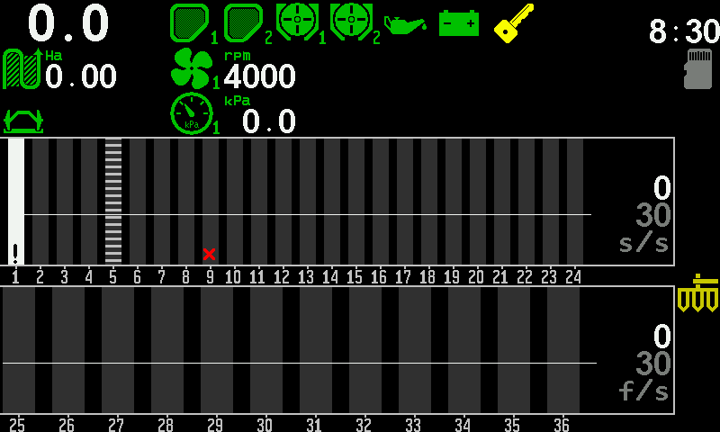
Les quatre états d'une section
Chaque section a deux commutateurs indépendants : le panneau la surveille-t-il (surveillance), et la machine applique-t-elle par elle (application du produit).
| Surveillance | Application | Ce que cela signifie | Ce que montre la colonne |
|---|---|---|---|
| oui | oui | Travail normal. | La colonne normale. |
| oui | non | Le rang ne sème volontairement pas — un rang de jalonnage — et le panneau le sait. | Hachures grises. |
| non | oui | Le rang sème, mais personne ne le contrôle. | Blanche avec ! |
| non | non | La section est entièrement hors du travail. | Blanche avec ! |
Les deux commutateurs sont des éléments du menu contextuel du capteur — maintenez le doigt sur la colonne de la section :
- « Disable control » (désactiver la surveillance) / « Enable control » (activer la surveillance), au niveau Operator. Voir Mettre un capteur sous ou hors surveillance.
- « Product application » (application du produit), au niveau Agronomist. Voir Niveaux d'accès.
Indicateurs de l'écran d'accueil
Chaque indicateur de l'écran d'accueil avec tous ses états — ce que vous voyez, ce que cela signifie, ce qu'il faut faire.
L'emplacement de chaque indicateur est montré dans L'écran d'accueil. Cette page dit ce que signifie chacun, état par état. Maintenez le doigt sur un indicateur pour ouvrir le menu contextuel de son appareil.
Comment lire un indicateur


Presque tous les indicateurs suivent la même règle. Apprenez-la une fois et vous saurez lire un indicateur que vous n'avez jamais vu.
| Ce que vous voyez | Ce que cela signifie |
|---|---|
| Normal. L'appareil répond et sa valeur est dans les limites. | |
| Alarme. L'appareil répond, mais la valeur est sortie des limites. Une fenêtre d'alarme suit après le délai d'alarme. | |
| Pas de réponse de l'appareil. La valeur s'affiche XXXX. | |
| L'appareil figure dans le profil, mais sa surveillance est désactivée. La valeur s'affiche !!!!. | |
| Icône en alternance avec un ? rouge | Un appareil d'un mauvais type répond à sa place. La valeur s'affiche ????. |
| Pas un défaut. Un état que vous avez choisi ou qui demande votre attention : machine relevée, traceurs relevés, contact coupé, application verrouillée à la main. |
Vitesse
La vitesse d'avancement en km/h, en grand, en haut à gauche. Les messages sur la vitesse remplacent le chiffre et clignotent environ une fois par seconde, pour que le chiffre reste lisible.
| Ce que vous voyez | Ce que cela signifie |
|---|---|
| Un nombre en blanc, par ex. 10.0 | Normal. |
| « SLOWER » (plus lentement) sur fond rouge | Vous roulez plus vite que le maximum réglé pour le capteur de vitesse. Ralentissez. |
| « FASTER » (plus vite) sur fond rouge | Vous roulez plus lentement que le minimum. Accélérez. |
| XX.X en rouge, clignotant | Pas de réponse de l'appareil qui porte le capteur de vitesse. |
| ???? en rouge | Un appareil d'un mauvais type répond à la place du capteur de vitesse. |
| !!.! en blanc | Le capteur de vitesse n'est pas sous surveillance. |
| Un nombre jaune en alternance avec « IMITATION » (simulation) | La vitesse est simulée d'après le réglage du capteur de vitesse, pas mesurée. Voir Travailler sans capteur de vitesse. |
| INCREASE IMITATION / DECREASE IMITATION | La vitesse simulée elle-même est hors de la plage permise. Modifiez le réglage, pas la vitesse d'avancement. |
| « Sensor » (capteur) avec un numéro | L'un des deux capteurs de vitesse est en panne. |
| « Settings » (réglages) | Les vitesses minimale et maximale se contredisent. |
« SLOWER » et « FASTER » ne sont pas des fenêtres d'alarme. Ils restent dans le champ de vitesse aussi longtemps que la vitesse est fausse, parce que vous devez les voir pendant que vous la corrigez. Vitesse par le récepteur intégré : GPS.
Horloge
L'emplacement de l'horloge, en haut à droite, est partagé par plusieurs messages.
| Ce que vous voyez | Ce que cela signifie |
|---|---|
| L'heure en blanc | Normal. |
| BAT en rouge, pendant environ une seconde sur quatre | La pile de l'horloge est faible. L'horloge tourne encore ; entre les clignotements, l'heure s'affiche en rouge. Faites remplacer la pile. |
| XX:XX en rouge, clignotant | La puce d'horloge ne répond pas. Tout ce que le panneau enregistre porte une date et une heure fausses. |
| IMITAT en jaune | Le mode de simulation du menu de service est activé. |
| Heures:minutes en bleu, puis TRIAL, puis rien | Une période d'essai est en cours ; le chiffre bleu est le temps restant. |
L'horloge se règle sous « Settings » (réglages) → « Change Date&Time » (changer la date et l'heure) : touchez chaque ligne et glissez-la jusqu'à sa valeur, puis touchez « Set » (valider) deux fois — une fois pour le sélectionner, une fois pour enregistrer l'heure. Quitter sans « Set » conserve l'ancienne heure.
Carte mémoire

Un symbole de carte à côté de l'horloge, ou dans la colonne de droite. Affiché tant qu'une carte microSD est dans le lecteur et prête à recevoir des données.
Trémie


Une trémie verte pleine est normale. Une trémie rouge vide, clignotante, signifie que le niveau est tombé sous le capteur : remplissez.
Doseur

La rotation de l'arbre du doseur. Tant que l'arbre tourne, l'icône tourne — le moyen le plus rapide de voir que le doseur fonctionne vraiment. Rouge signifie pas de rotation, ou pas la vitesse requise.
Turbine


La vitesse de la turbine en tours par minute (tr/min). Vert est normal ; rouge — au-dessus du maximum ou sous le minimum.
Pression

La dépression ou la surpression d'air dans le système de distribution, en kPa. Vert est normal ; rouge — hors de la plage permise.
Capteurs du moteur


Les capteurs du moteur qui entraîne la turbine.
| Indicateur | Vert | Rouge ou jaune |
|---|---|---|
| Pression d'huile | Normal | Rouge : la pression d'huile est tombée sous le niveau permis. |
| Charge de la batterie | Normal | Rouge : la batterie ne se charge pas. |
| Allumage | Clé verte : contact mis | Clé jaune : contact coupé. Pas un défaut, et jamais une fenêtre d'alarme. |
| Niveau de carburant | Normal | Rouge : il reste peu de carburant dans le réservoir. |
| Filtre à air | Normal | Rouge : le filtre à air est colmaté ; nettoyez-le ou remplacez-le. |
Surface

La surface traitée sur la parcelle active, en hectares.
Population

En mode « Precise » : la dose de semis réelle en milliers de graines par hectare.
Dose de produit en masse

Affiché quand des produits sont appliqués en masse ; un indicateur par produit, avec son numéro. Il montre un seul chiffre, en kg/ha.
| Ce que vous voyez | Ce que cela signifie |
|---|---|
| Icône verte, chiffre blanc | Normal. Tant que la dose réelle reste dans l'écart permis, le chiffre affiché est la consigne. |
| Icône rouge, clignotante | La dose réelle est hors de l'écart permis par rapport à la consigne. |
| Champ allumé | Vous venez de régler la consigne. |
Pour régler la consigne, maintenez le doigt sur l'indicateur. Le pavé numérique s'ouvre avec le titre Product et son numéro ; saisissez la dose, de 10,0 à 500,0 kg/ha, et touchez « OK ».
Dosage en masse impossible

Une icône de produit rouge clignotante dans la colonne de droite. Le panneau a calculé que la consigne ne peut être tenue à aucune vitesse d'avancement : la vitesse la plus basse à laquelle les cannelures de dosage peuvent débiter la dose est déjà égale ou supérieure à la plus haute.
Que faire. Vérifiez d'abord les doses de consigne — un produit qui en demande trop ferme la fenêtre pour tous. Vérifiez ensuite les cannelures de dosage. Les limites de vitesse calculées par le panneau figurent sur l'écran « Information » (informations) du capteur de vitesse.
Traceurs

| Ce que vous voyez | Ce que cela signifie |
|---|---|
| Vert, deux bras abaissés | Les deux traceurs sont abaissés. |
| Vert, un bras abaissé | Seul ce traceur est abaissé. |
| Jaune, deux bras relevés | Les deux traceurs sont relevés. Sur une machine qui change le passage de jalonnage par les traceurs, le passage change maintenant. |
Une machine à un seul traceur a une seule icône, qui montre ce traceur abaissé ou relevé.
Position de la machine


Vert — abaissée, au travail. Jaune, clignotant — relevée, en transport, sans appliquer.
Passage de jalonnage

Affiché uniquement si le jalonnage est activé. Le grand nombre est le passage en cours, le petit au-dessus le nombre de passages du rythme.
| Ce que vous voyez | Ce que cela signifie |
|---|---|
| Icône de jalonnage grise | Le passage change de lui-même à la fin de chaque passe. |
| Icône de jalonnage jaune | Le passage ne change pas de lui-même : la machine n'a ni capteur de traceur ni capteur de position de travail qui réponde et soit sous surveillance. |
| Un symbole jaune clignotant à la place de l'icône | Le passage pourrait changer de lui-même, mais le changement automatique est désactivé. |
Comment le passage est compté : Régler le rythme de jalonnage.
Verrouillage manuel

Une main jaune, clignotante, dans la colonne de droite : l'application du produit est verrouillée à la main. La machine n'applique rien, quoi qu'il arrive. Non affichée tant que l'application est autorisée. Elle apparaît sur les machines à moteurs électriques de doseur ou à pompe d'engrais liquide. Voir Verrouiller l'application du produit à la main.
Défaut d'actionneur

Une icône pour tous les moteurs électriques et actionneurs de jalonnage ensemble, dans la colonne de droite. Pas du tout affichée tant que tout est en ordre.
| Ce que vous voyez | Ce que cela signifie |
|---|---|
| Rouge, clignotante | Au moins un moteur ou un actionneur est en état d'alarme. |
| En alternance avec un [!] blanc | La surveillance d'au moins un actionneur est désactivée. |
Lequel et pourquoi : voir l'écran Motors.
Pompe d'engrais liquide
| Indicateur | Ce qu'il montre |
|---|---|
| En L/min quand la machine a des capteurs de sections liquides, sinon en L/Ha. Vert, rouge, × et [!] comme d'habitude. Tant que la dose reste dans l'écart permis, le chiffre affiché est la consigne. | |
| Avec quelle force la pompe travaille. Jaune à 99 % et plus : la pompe est à sa limite — roulez plus lentement, sinon la dose tombe sous la consigne. ---- rouge clignotant : le contrôleur ne donne pas de valeur de charge. | |
| Uniquement si le capteur de pression est activé dans les réglages de la pompe. Rouge : la pression du liquide est trop élevée. ---- rouge clignotant : le capteur de pression est défectueux ou ne donne aucune valeur. |
Le récepteur GPS intégré
Ce que vous dit le symbole de satellite sur l'écran d'accueil, comment le panneau peut prendre la vitesse d'avancement au GPS, et ce qui se passe quand le signal est mauvais.
L'Hectare 5 possède son propre récepteur GPS. Le panneau l'utilise de deux façons : il indique combien de satellites il reçoit et — s'il est réglé pour — il prend la vitesse d'avancement aux satellites au lieu d'un capteur de roue.
Le symbole de satellite
Sur une machine dont le profil comporte un capteur de vitesse, un symbole de satellite figure dans la colonne de droite de l'écran d'accueil, avec à côté le nombre de satellites utilisés.
| Ce que vous voyez | Ce que cela signifie |
|---|---|
| Satellite gris | Le récepteur fonctionne, mais la vitesse n'en provient pas. Le nombre indique ce qu'il reçoit. |
| Satellite vert | La vitesse provient du GPS ; plus de 6 satellites — bon signal. |
| Satellite jaune | La vitesse provient du GPS ; 4 à 6 satellites. Utilisable, à surveiller. |
| Satellite rouge | La vitesse provient du GPS ; moins de 4 satellites. La vitesse n'est pas fiable. |
Vitesse par GPS
Que la vitesse provienne du récepteur est le réglage « GPS internal » (GPS interne) du menu contextuel du capteur de vitesse (maintenez le doigt sur le champ de vitesse). Il exige le niveau Agronomist. Voir Capteur de vitesse.
Quand le GPS est la source de vitesse et que moins de quatre satellites sont reçus, le panneau déclenche l'alarme « Poor GPS signal quality » (mauvaise qualité du signal GPS). Tout ce que le panneau calcule à partir de la vitesse — surface, doses, écarts, pilotage des moteurs de doseur — dépend alors d'un signal faible. Dégagez-vous en terrain découvert, ou revenez au capteur de roue.

L'écran GPS
Sur le second écran d'accueil, un toucher sur le symbole GPS ouvre un écran avec les données propres du récepteur : la vitesse qu'il mesure, la date et l'heure qu'il reçoit (UTC, et non l'heure locale du panneau), et le nombre de satellites utilisés et en vue. En dessous défile un journal du récepteur destiné au technicien de service. Les textes de cet écran sont en anglais dans toutes les langues du panneau. Quittez-le par un long glissement vers le haut.
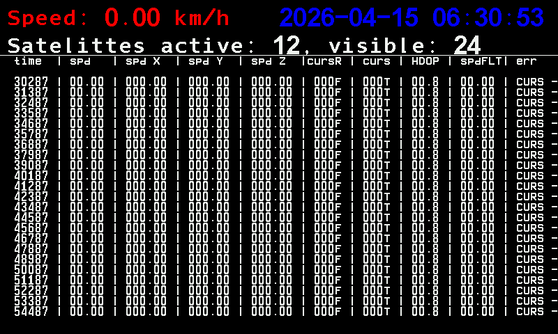
Le second écran d'accueil
Le second écran d'accueil — ce qu'il contient, comment l'ouvrir et le fermer, et ce que font au toucher ses chevrons, ses tuiles et ses symboles.
Le second écran d'accueil montre le travail en grands chiffres et les moteurs de doseur sous forme d'une rangée de tuiles. Il convient à une machine dont la dose de semis est tenue par des moteurs électriques de doseur, où le panneau surveille les moteurs et les principaux organes de travail plutôt qu'un diagramme de sections.
Ouvrez-le depuis l'écran d'accueil par un long glissement vers la droite. Fermez-le par un long glissement vers la gauche — il revient à l'écran d'accueil. Il ne fait pas partie du cercle des écrans de travail, et le panneau ne l'ouvre jamais de lui-même.

- Dose de semis. En graines par mètre.
- Vitesse d'avancement. En km/h ; jaune tant qu'elle est simulée. Maintenez le doigt dessus pour le menu contextuel du capteur de vitesse. Vitesse
- Symbole des réglages. Un toucher ouvre le menu principal.
- Symbole GPS. Un toucher ouvre l'écran GPS. GPS
- Chevrons rouges. Un toucher met le moteur le plus extérieur de ce côté hors surveillance.
- Chevrons verts. Un toucher remet sous surveillance le moteur suivant vers ce côté.
- Dose de consigne. Affichée en mode « Precise » (précis). Maintenez le doigt dessus jusqu'à ce qu'elle s'allume, puis glissez vers le haut ou vers le bas pour la modifier.
- Tuiles de moteurs. Numéro et valeur de chaque moteur ; l'icône alterne avec le signe d'état — STOP, ou une × rouge avec XXX. Maintenez le doigt sur une tuile pour son menu contextuel.
- Symbole stop. Maintenez le doigt dessus pour verrouiller ou déverrouiller l'application du produit. Un bip court le confirme.
Sur une machine avec turbine, capteur de pression ou pompe, la valeur d'un organe figure à gauche de la ligne du haut — une à la fois. Un toucher affiche la suivante ; maintenir le doigt ouvre son menu contextuel.
Chaque icône de moteur alterne, environ une fois par seconde, entre l'image du moteur et le signe de son état. Ce que signifient les états : Écran Motors.
Les chevrons sont toujours présents sur cet écran. Sur une machine sans moteurs de doseur, ils n'ont rien sur quoi agir.
Ce que vous pouvez faire ici
| Pour faire ceci | Faites ceci |
|---|---|
| Ouvrir le menu principal | Touchez le symbole des réglages |
| Modifier la dose de semis | Maintenez le doigt sur la dose, puis glissez vers le haut ou vers le bas. Elle reste dans les limites permises. Un toucher ailleurs y met fin. |
| Régler la consigne d'un produit en masse | Maintenez le doigt sur sa tuile kg/ha ; saisissez la dose sur le pavé numérique |
| Mettre des moteurs hors ou sous surveillance | Touchez les chevrons rouges ou verts. Confirmez par « Yes » (oui) si le panneau le demande. |
| Ouvrir les réglages d'un moteur | Maintenez le doigt sur la tuile du moteur |
| Verrouiller ou déverrouiller l'application du produit | Maintenez le doigt sur le symbole stop. Un bip court le confirme. |
| Voir les données du récepteur | Touchez le symbole GPS |
| Revenir à l'écran d'accueil | Long glissement vers la gauche |
Les écrans de travail et comment passer de l'un à l'autre
Les quatre écrans de travail dans leur cercle, le second écran d'accueil à côté, et les glissements qui mènent de l'un à l'autre — y compris le retour à l'écran d'accueil depuis Table et Statistics.
Le panneau a quatre écrans de travail en cercle, et un cinquième à part.
| Écran | À quoi il sert |
|---|---|
| Écran d'accueil | Les diagrammes des sections, les indicateurs des appareils, la vitesse, la surface et les doses. Le panneau démarre ici. |
| Table | Les mesures de chaque section en chiffres, sous forme de liste. Plusieurs tableaux, selon le mode de contrôle. |
| Statistics | Les résultats du travail par parcelle : surface, trajet, quantités, qualité. |
| Motors | Les moteurs électriques de doseur, et les actionneurs de jalonnage si la machine en a. Présent seulement si le profil contient au moins un moteur ou un actionneur de jalonnage. |
| Second écran d'accueil | De grands chiffres et les tuiles de moteurs. En dehors du cercle. |
Le cercle
Un long glissement vers la gauche — un doigt, sur plus d'un tiers de l'écran — mène à l'écran suivant, toujours dans le même sens, et ramène à l'écran d'accueil depuis le dernier :
Écran d'accueil → Table → Statistics → Motors → Écran d'accueil.
Sans moteurs ni actionneurs de jalonnage dans le profil, il n'y a pas d'écran Motors et Statistics ramène directement à l'écran d'accueil.
Tous les chemins d'un écran à l'autre
| Depuis | Geste | Vers |
|---|---|---|
| Écran d'accueil | Long glissement vers la gauche | Table |
| Écran d'accueil | Long glissement vers la droite | Second écran d'accueil |
| Table | Long glissement vers la gauche | Statistics |
| Statistics | Long glissement vers la gauche | Motors (écran d'accueil, si la machine n'en a pas) |
| Motors | Long glissement vers la gauche | Écran d'accueil |
| Motors | Long glissement vers la droite | Statistics |
| Second écran d'accueil | Long glissement vers la gauche | Écran d'accueil |
Un glissement court n'est pas pris pour un passage à un autre écran ; sur Table et Statistics, un glissement court vers le haut ou vers le bas fait défiler à la place.
Gestes sur les écrans de travail
| Écran | Ce que cela fait | Geste |
|---|---|---|
| Écran d'accueil | Ouvre le menu principal | Toucher avec deux doigts |
| Écran d'accueil | Règle le seuil d'alarme d'après la dose réelle | Double toucher avec un doigt, pendant l'application |
| Table | Fait défiler les lignes | Glisser vers le haut ou vers le bas |
| Table | Tableau suivant ou précédent | Long glissement vers la droite ou vers la gauche avec deux doigts |
| Table | Demande s'il faut remettre les mesures à zéro | Toucher avec deux doigts |
| Statistics | Fait défiler le rapport, une ligne par glissement | Glisser vers le haut ou vers le bas |
| Statistics | Affiche une autre parcelle | Glisser vers la droite ou vers la gauche avec deux doigts |
| Statistics | Ouvre le menu de l'écran | Toucher avec deux doigts |
| Motors | Ouvre le menu contextuel d'un moteur | Maintenir le doigt sur sa tuile |
La liste complète par écran, menus et fenêtres compris : Zones tactiles et gestes.
L'écran Table
Les mesures de chaque section en chiffres — quels tableaux possède votre machine, ce que signifie chaque colonne, et comment lire les couleurs.
L'écran Table montre les mesures de chaque section sous forme de chiffres, une ligne par section. Il répond à la question que le diagramme ne peut pas traiter : quelle section exactement, et de combien. Ouvrez-le depuis l'écran d'accueil par un long glissement vers la gauche. Il n'a pas de retour en arrière : un nouveau long glissement vers la gauche mène à l'écran Statistics, puis, en faisant le tour du cercle, à l'écran d'accueil (Écrans de travail).
Un semoir monograine en mode « Precise »

- #. Le numéro de la section.
- sds/m. Graines par mètre, mesurées à l'instant.
- Q.%. Qualité — la part de graines déposées une à une, comme voulu.
- Db%. Doubles — deux graines là où une était voulue.
- Sk%. Manques — un vide là où une graine était voulue.
- ks/Ha. La dose appliquée en milliers de graines par hectare (dans le deuxième tableau : graines par mètre).
- %. L'écart de cette section par rapport à la dose réglée.
- Numéro de tableau. Ce tableau et le nombre de tableaux, dans le coin. Affiché seulement quand il y en a plus d'un.
- Numéro de section sur fond jaune. Quelque chose sur cette ligne dérive vers sa limite.
- Valeur sur fond jaune. Le chiffre qui a dérivé.
- Totaux. Les mêmes colonnes pour toute la machine.
Une valeur sur fond jaune dérive vers sa limite ; sur fond rouge, elle l'a dépassée. Une ligne entière en gris avec ! est une section mise hors surveillance ; une ligne en rouge avec × est un capteur qui ne répond pas, avec ? un appareil d'un mauvais type.
Un semoir à céréales en mode « Flow »

- #. Le numéro de la section.
- sds/s. Graines par seconde. Des tirets tant que rien n'est compté.
- Échelle des écarts. De −50 % à +50 % en passant par 0.
- Barre d'écart. À quelle distance cette section se tient de la dose réglée.
- %. Le même écart sous forme de chiffre.
- Numéro de tableau. Ici le tableau 1 sur 2 — le second contient les sections d'engrais.
- Écart le plus bas. La section la plus en dessous de la dose.
- Écart le plus haut. La section la plus au-dessus de la dose.
- Intervalle de recalcul. Le tronçon sur lequel les chiffres sont recueillis — « Recalculation,m » (recalcul, m) des capteurs.
Quels tableaux possède votre machine
| Tableau | Affiché quand |
|---|---|
| Compteurs de graines — graines par seconde ou par mètre, avec les barres d'écart | Toujours. |
| Dose par surface (milliers par hectare) et dose par distance (graines par mètre) | Uniquement dans le mode de contrôle du semis « Precise ». |
| Engrais solide | La machine a des capteurs d'engrais et le mode de contrôle de l'engrais n'est pas « Precise ». |
| Engrais liquide | La machine a des capteurs d'engrais liquide. |
En mode « Precise », un semoir monograine a trois tableaux de semences : dose par surface (1/3), dose par distance (2/3) et compteurs de graines (3/3) — le nombre de graines semées par chaque section, à côté des barres d'écart, avec le total de la machine en bas.

Utiliser l'écran
| Ce que vous voulez | Geste |
|---|---|
| Tableau suivant ou précédent | Long glissement vers la droite ou vers la gauche avec deux doigts |
| Faire défiler les lignes | Glisser vers le haut ou vers le bas |
| Remettre les mesures à zéro | Toucher avec deux doigts — Remettre les mesures à zéro |
| Passer à Statistics | Long glissement vers la gauche |
Sur les grandes machines, les rangs ne tiennent pas sur une seule page : glissez vers le haut et vers le bas pour les faire défiler. Une ligne qui dérive passe au jaune sous vos yeux.
L'écran Statistics
Le rapport du travail sur chaque parcelle, bloc par bloc et ligne par ligne — et le menu qui choisit la parcelle, enregistre le rapport et l'efface.
L'écran Statistics est le rapport du travail : la distance parcourue, la surface couverte, la quantité semée, et la régularité. Il est conservé séparément pour chacune de cinq parcelles et survit à l'extinction. Ouvrez-le depuis l'écran Table par un long glissement vers la gauche. Il n'a pas de retour en arrière : un nouveau long glissement vers la gauche mène à l'écran Motors, ou à l'écran d'accueil sur une machine sans moteurs.
Le rapport est une longue liste. Glissez vers le haut ou vers le bas pour la faire défiler, une ligne par glissement.
L'en-tête et le travail sur la parcelle

- Numéro de parcelle. Field # et le numéro de la parcelle dont vous voyez le rapport. Un glissement à deux doigts vers la droite ou vers la gauche affiche la parcelle suivante ou la précédente.
- (A). C'est la parcelle active — celle dans laquelle le panneau écrit maintenant.
- Date et heure. La date du jour et l'heure.
- Trajet. Distance parcourue, en km.
- Surface. Surface couverte, en Ha.
- Temps de travail. Heures, minutes et secondes de travail.
- Vitesse de déplacement. La vitesse d'avancement moyenne.
- Started / Ended. Quand le travail sur cette parcelle a commencé et fini.
- Seeding. Le bloc suivant — voir plus bas.
Le bloc de semis
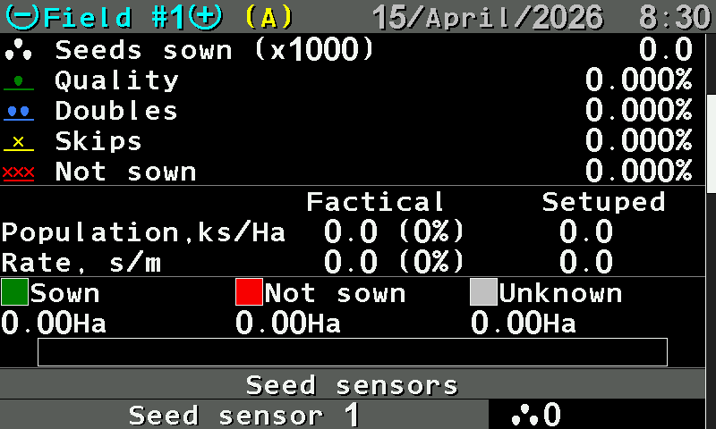
- « Seeds sown (x1000) » (graines semées, ×1000). Le total, en milliers de graines.
- « Quality » (qualité). La part de graines déposées une à une, comme voulu. Jugez le travail à ce chiffre.
- « Doubles » (doubles). Deux graines là où une était voulue.
- « Skips » (manques). Un vide là où une graine était voulue.
- « Not sown » (non semé). La part du parcours où rien n'est sorti du tout.
- « Factical » / « Setuped ». Les deux titres de colonnes : ce qui a été réellement appliqué, et ce qui a été réglé.
- « Population,ks/Ha » (population, milliers/ha). En milliers de graines par hectare ; l'écart entre parenthèses.
- « Rate, s/m » (dose, graines/m). En graines par mètre ; la consigne à droite.
- « Sown » / « Not sown » / « Unknown ». La parcelle répartie en trois, en hectares.
- Barre. La même répartition en barre colorée : vert semé, rouge non semé, gris inconnu.
- « Seed sensors » (capteurs de graines). Le bloc suivant — section par section.
« Unknown » (inconnu) est la surface parcourue pendant que le panneau ne pouvait pas juger — pas un défaut, mais pas non plus la preuve d'un travail.
Section par section

- « Seed sensors ». Un bloc par section suit.
- Section. Le numéro de la section, et les graines qu'elle a comptées.
- q d s n. Qualité, doubles, manques et non-semé pour cette section, en pourcentage.
- Semé / non semé / inconnu. La part de chacun pour cette section, et la barre.
- Population. Milliers par hectare pour cette section, avec son écart.
- Espacement. Graines par mètre pour cette section, avec son écart.
C'est ici qu'un semoir irrégulier se trahit. Une section de qualité inférieure aux autres, ou dont la partie rouge de la barre est plus longue, désigne ce rang : une sortie bouchée, un disque usé, un capteur à nettoyer.
Blocs qui apparaissent sur d'autres machines
| Bloc | Ce qu'il contient |
|---|---|
| « Work without alarms control » (travail sans contrôle des alarmes) | La part du travail que le panneau n'a pas surveillée — effectuée avec la surveillance désactivée ou verrouillée. |
| « Speed control » (contrôle de la vitesse) | Sur quelle distance et pendant combien de temps vous avez roulé hors de la plage de vitesse permise. |
| « Fertilizing » (fertilisation), engrais liquide | Fertilisé / non fertilisé / inconnu, si la machine les applique. |
| Product | Pour un produit appliqué en masse : la quantité appliquée, et la dose réelle par rapport à la dose réglée en kg/ha, sur la ligne Factical: … Setuped: …. |
Le menu de l'écran
Touchez l'écran avec deux doigts.

| Élément | Ce qu'il fait |
|---|---|
| « Select field » (choisir la parcelle) | Fait de la parcelle affichée la parcelle active — le panneau écrit désormais dedans. Affiché seulement quand vous regardez une parcelle qui n'est pas active. Si cette parcelle a été travaillée avec un autre ensemble de produits en masse, le panneau demande d'abord d'effacer ses données. |
| « Statistics » (statistiques) | Bascule le rapport entre « Short » (court) et « Full » (complet). Non affiché sur une machine sans capteur de vitesse. |
| « Mileage » (kilométrage) | Trajet en km et surface en ha sur toute la vie du système. Ces totaux ne peuvent pas être remis à zéro. Sans capteur de vitesse, le temps de fonctionnement cumulé à la place. |
| « Save to SD-card » (enregistrer sur la carte SD) | Écrit une parcelle, ou toutes, sur la carte mémoire. Affiché tant qu'une carte est prête. |
| « Zero statistics » (remettre les statistiques à zéro) | Efface les statistiques de la parcelle. Au niveau Operator, le panneau demande d'abord le code d'un niveau supérieur ; au-dessus d'Operator, il demande « Are you sure? » (êtes-vous sûr ?). |
L'écran Motors
Les moteurs électriques de doseur et les actionneurs de jalonnage de la machine, une tuile chacun — comment lire une tuile et comment atteindre les réglages d'un moteur.
L'écran Motors montre les moteurs électriques de doseur de la machine, une tuile chacun, et les actionneurs de jalonnage si la machine en a. Regardez ici quand un rang cesse de semer et que vous voulez savoir si le moteur en est la cause.
Il existe sur toute machine dont le profil contient au moins un moteur électrique ou un actionneur de jalonnage. Atteignez-le depuis l'écran Statistics par un long glissement vers la gauche. Quittez-le par un long glissement vers la gauche vers l'écran d'accueil, ou un long glissement vers la droite pour revenir à Statistics.

- Moteur 1, STOP. Jaune, clignotant — le moteur est en état de marche, mais l'application du produit ne tourne pas.
- Valeur du moteur 1. La vitesse de l'arbre entraîné en tr/min.
- Moteur 2, × rouge. Pas de liaison avec ce moteur.
- XXX. Pas de valeur, parce que le moteur ne répond pas.
Lire une tuile
La couleur du symbole est l'état. La valeur à côté est la vitesse de l'arbre entraîné en tr/min. Sur le second écran d'accueil, les mêmes vignettes affichent, dans le mode de contrôle « Precise », les graines par mètre mesurées par le capteur de graines de ce rang.
| Symbole | Valeur | État |
|---|---|---|
| Moteur, vert | le chiffre | Normal. Le moteur est sous surveillance et piloté. |
| STOP, jaune, clignotant sur le moteur | le chiffre | Le moteur est en état de marche, mais l'application du produit est désactivée. Rien ne cloche chez lui — le système n'applique simplement pas. |
| Moteur, rouge | le chiffre | Le moteur est en état d'alarme. Lisez l'alarme pour en connaître la cause. |
| ×, rouge | XXX | Pas de liaison. Vérifiez d'abord le câble et le connecteur. |
| !, en contour | !!! | Le moteur est mis hors surveillance. Il n'est ni piloté ni surveillé. |
Actionneurs de jalonnage
| Symbole de l'actionneur | État |
|---|---|
| Rentré ou sorti, vert | L'actionneur a atteint sa position. |
| Rentré ou sorti, jaune | L'actionneur se déplace vers cette position. |
| En alternance rentré et sorti, jaune | Le panneau ne peut pas déterminer la position de l'actionneur. |
| Rouge clignotant | L'actionneur est en état d'alarme. |
| × rouge ou ? clignotant | Pas de liaison, ou appareil d'un mauvais type. |
| Blanc clignotant | L'actionneur est mis hors surveillance. |
Utiliser l'écran
| Ce que vous voulez | Geste |
|---|---|
| Les réglages d'un moteur ou d'un actionneur | Maintenir le doigt sur sa tuile |
| Retour à l'écran Statistics | Long glissement vers la droite |
| Suite vers l'écran d'accueil | Long glissement vers la gauche |
Le maintien du doigt ouvre le menu contextuel du moteur que vous avez touché. Son élément « Information » (informations) montre l'état du moteur et, pour un défaut de contrôleur, le code du dernier défaut. Ici, vous voyez d'un coup tous les moteurs de la machine et pouvez choisir celui qui se comporte mal.
Modifier la dose de consigne
Augmenter ou diminuer la dose que le panneau tient et surveille, depuis l'écran d'accueil, pendant le semis — au toucher.
Le champ de dose, à l'extrémité droite de chaque diagramme, montre deux nombres : la dose mesurée en haut, la consigne en dessous. En mode « Flow », la consigne est le seuil d'alarme du diagramme — voir Le diagramme des sections.
Sur un diagramme
Sur l'écran d'accueil, maintenez le doigt sur le diagramme dont vous voulez modifier la dose, plus d'une demi-seconde. Son chiffre de consigne s'allume.

Le diagramme des semences avec son chiffre de consigne allumé pour la modification. Glissez vers le haut sur l'écran pour augmenter la consigne, vers le bas pour la diminuer — un pas par glissement. La consigne reste dans ses limites permises.
Touchez l'écran en dehors des diagrammes pour terminer. Le chiffre cesse d'être allumé et la nouvelle consigne est en vigueur.
Pour modifier un autre diagramme — l'engrais après les semences, par exemple — maintenez le doigt sur ce diagramme à la place.
Pour un produit appliqué en masse
Maintenez le doigt sur l'indicateur kg/ha du produit. Le pavé numérique s'ouvre avec le titre Product et le numéro du produit.
Saisissez la consigne, de 10,0 à 500,0 kg/ha, et touchez « OK » (Saisir des nombres). Un toucher en dehors du pavé laisse la consigne telle qu'elle était.
Sur le second écran d'accueil
Maintenez le doigt sur la dose jusqu'à ce qu'elle s'allume, puis glissez vers le haut ou vers le bas. Un toucher ailleurs y met fin. Voir Second écran d'accueil.
Verrouiller l'application du produit à la main
Arrêter toute application de produit par un maintien du doigt, et la relancer — ce que fait le verrouillage et comment voir qu'il est actif.
Le verrouillage manuel arrête toute application de produit : les moteurs de doseur et la pompe ne tournent pas, quels que soient les mouvements de la machine. Utilisez-le pour traverser une parcelle déjà semée, pour rouler sur route avec la machine abaissée, ou quand vous travaillez sans capteur de vitesse.
Le verrouillage existe sur les machines à moteurs électriques de doseur ou à pompe d'engrais liquide.
Sur l'écran d'accueil, maintenez le doigt sur un emplacement vide de la colonne de droite des indicateurs — pas sur une icône — jusqu'à ce que le panneau émette un bip.
Regardez la colonne de droite. Une main jaune y clignote : l'application est verrouillée.

La colonne de droite de l'écran d'accueil avec la main jaune. Pour déverrouiller, maintenez de nouveau le doigt au même endroit. Un bip court ; la main disparaît.
Un maintien du doigt sur une icône de la colonne ouvre à la place le menu contextuel de cet appareil.
Sur le second écran d'accueil, maintenez le doigt sur le symbole stop — même verrouillage, même bip.
Ce que le verrouillage change ailleurs
- Les tuiles de moteurs de l'écran Motors montrent un STOP jaune — en état de marche, sans appliquer.
- La régulation de l'application du produit ne démarre pas quand vous vous mettez en route — le verrouillage doit être désactivé pour que la régulation démarre (Démarrage rapide).
- Le travail effectué verrouillé est compté dans les statistiques sous « Work without alarms control » (travail sans contrôle des alarmes) (Statistics).
Quand le panneau se verrouille de lui-même
Activer la simulation de vitesse verrouille l'application du produit. Un panneau allumé avec la simulation déjà activée démarre lui aussi verrouillé. Déverrouillez à la main quand vous êtes prêt à appliquer : Travailler sans capteur de vitesse.
Régler le seuil d'alarme automatiquement
Laisser le panneau régler le seuil d'alarme des diagrammes d'après la dose réellement semée, par un double toucher — semoirs à céréales en mode « Flow » ou « Hybrid ».
Sur un semoir à céréales, les graines arrivent trop rapprochées pour être comptées une à une ; le panneau surveille donc chaque rang par rapport à un seuil d'alarme : la ligne du diagramme. Réglé trop haut, tous les rangs passent sous la ligne — « NOT UNDER CONTROL » (hors surveillance). Réglé trop bas, un rang à moitié bouché passe inaperçu. Le panneau peut le régler pour vous d'après ce que la machine sème réellement.
Cela fonctionne dans les modes « Flow » (débit) et « Hybrid » (hybride), pour les diagrammes des semences et de l'engrais solide, et pour l'engrais liquide en mode « Flow ». En mode « Precise », le double toucher ne change rien.
Démarrez le semis à votre vitesse normale, avec du produit qui circule dans tous les rangs.
Double toucher sur l'écran d'accueil avec un doigt — deux touchers rapides au même endroit.
Le panneau émet un bip et allume le champ de dose : le nouveau seuil d'alarme est réglé d'après la dose semée à l'instant — la moitié de celle-ci en mode « Flow », un dixième en mode « Hybrid ».

Les diagrammes après le double toucher : les colonnes au-dessus de la ligne, le champ de dose allumé. Vérifiez que chaque colonne se tient au-dessus de sa ligne. La lumière s'éteint d'elle-même au bout de quelques secondes.
Le double toucher ne fonctionne que pendant que du produit est appliqué. À l'arrêt, il ne se passe rien.
Ce que signifie la ligne et pourquoi les rangs en dessous ne sont pas surveillés : Le diagramme des sections.
Mettre un capteur sous ou hors surveillance
Empêcher le panneau de surveiller un capteur — une section coupée, un capteur défectueux — et le remettre plus tard.
Un capteur hors surveillance n'est pas surveillé : le panneau ne déclenche aucune alarme à son sujet, quoi qu'il signale. Mettez un capteur hors surveillance quand sa section est volontairement hors travail ou quand le capteur est défectueux et que vous devez finir la parcelle. Remettez-le sous surveillance dès que possible.
Mettre un capteur hors surveillance
Sur l'écran d'accueil, maintenez le doigt sur le capteur — sa colonne sur le diagramme, ou son icône. Son menu contextuel s'ouvre.
Le menu contextuel d'un capteur de graines. Touchez « Disable control » (désactiver la surveillance) pour le sélectionner, et touchez-le de nouveau.
La première fois dans une session, le panneau demande « Are you sure that you want disable control? » (êtes-vous sûr de vouloir désactiver la surveillance ?). Touchez « Yes » (oui). Un toucher en dehors de la fenêtre annule.

La question avant la désactivation de la surveillance. La colonne devient blanche avec ! (une icône alterne avec un [!] blanc). Le capteur n'est plus surveillé.
Le remettre sous surveillance
Procédez de même et choisissez « Enable control » (activer la surveillance). La première fois dans une session, le panneau demande « Are you sure that you want enable control? » (êtes-vous sûr de vouloir activer la surveillance ?) ; confirmez par « Yes ». Un capteur de graines remis sous surveillance affiche un ? jaune pendant quelques secondes, le temps de recevoir ses réglages.
Quand les statistiques doivent être effacées
Pour certains capteurs, le panneau demande d'abord d'effacer les statistiques de la parcelle active : il affiche « Need to erase data, for selected field! » (il faut effacer les données de la parcelle sélectionnée !) et demande de nouveau.
- « Yes » efface les statistiques de la parcelle active et modifie la surveillance. Au niveau Operator, le panneau demande d'abord le code d'un niveau supérieur ; un code erroné affiche « Invalid PIN » (code invalide) et rien ne change.
- « No » (non) laisse les deux en l'état.
Le capteur de vitesse ne peut pas être mis hors surveillance — son menu contextuel n'a pas un tel élément. Les moteurs se mettent hors surveillance de la même façon, depuis leur tuile sur l'écran Motors, ou avec les chevrons du second écran d'accueil. Ce que signifient les quatre combinaisons de surveillance et d'application du produit : Les quatre états d'une section.
Remettre à zéro les mesures de l'écran Table
Remettre à zéro les compteurs de graines et d'engrais de l'écran Table — pour une nouvelle parcelle ou un nouveau lot de semences — sans toucher aux statistiques de la parcelle.
L'écran Table continue de compter depuis le moment où ses mesures ont été remises à zéro pour la dernière fois. Remettez-les à zéro quand vous commencez une nouvelle parcelle ou un nouveau lot de semences, pour que les compteurs et les écarts ne décrivent que le nouveau travail.
Ouvrez l'écran Table : un long glissement vers la gauche sur l'écran d'accueil.
Touchez l'écran avec deux doigts. Le panneau demande « Zero readings? » (remettre les mesures à zéro ?).
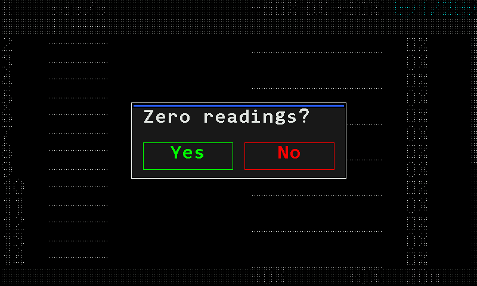
La question avant la remise à zéro : Yes en vert, No en rouge. Touchez « Yes » (oui). Les compteurs de chaque capteur de graines, d'engrais solide et d'engrais liquide sont remis à zéro.
« No » (non), ou un toucher en dehors de la fenêtre, laisse tout comme avant.
Pour revenir ensuite à l'écran d'accueil, continuez à glisser vers la gauche — par Statistics (et Motors) jusqu'à l'écran d'accueil. L'écran Table n'a pas de retour en arrière (Écrans de travail).
Seuls les compteurs de l'écran Table sont remis à zéro. Les statistiques de la parcelle ne sont pas touchées ; elles s'effacent avec « Zero statistics » (remettre les statistiques à zéro) dans le menu de l'écran Statistics.
Remplir les disques de semences
Faire tourner les disques à graines d'un semoir monograine à moteurs de doseur jusqu'à ce que chaque disque contienne des graines, pour que le semis commence dès le premier mètre — comment le lancer et lire le résultat.
Cela ne concerne que les semoirs monograines à moteurs électriques de doseur de semences dans le mode de contrôle « Precise » (précis). Sans moteurs dans le profil, ou dans un autre mode, l'élément de menu n'est pas affiché.
Quand les disques sont entraînés par des moteurs électriques, ils restent vides tant que les moteurs ne tournent pas. Si vous démarrez avec des disques vides, les premiers mètres de chaque rang ne reçoivent rien : chaque disque doit d'abord prendre des graines et les amener jusqu'au point de chute. Le remplissage fait tourner les disques machine à l'arrêt, pour que le semis commence dès le premier mètre.
Arrêtez la machine. L'élément n'est affiché que lorsque la machine est à l'arrêt.
Sur l'écran d'accueil, touchez avec deux doigts. Le menu principal s'ouvre avec « Fill the disks with seeds » (remplir les disques de semences) déjà sélectionné ; touchez-le encore une fois.
Le menu principal avec Fill the disks with seeds sélectionné. Le panneau demande « Are you sure? » (êtes-vous sûr ?). Touchez « Yes » (oui). « No » (non), ou un toucher en dehors de la fenêtre, annule.
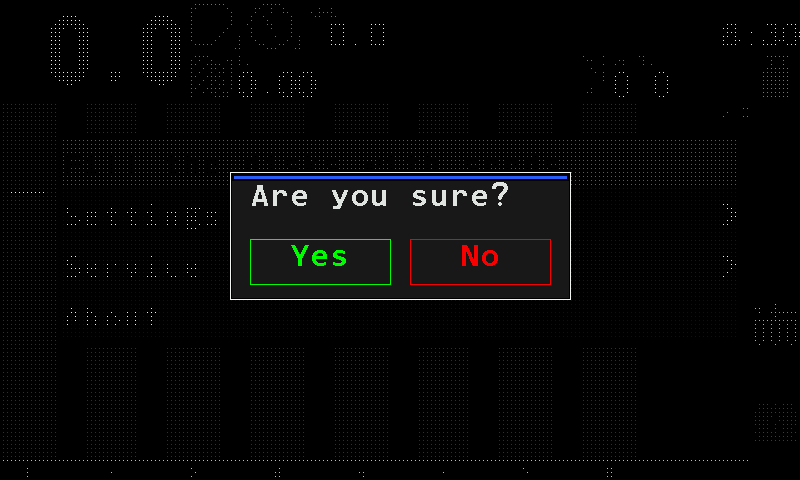
La question avant la rotation des disques. Regardez les tuiles. Chaque moteur fait tourner son disque jusqu'à ce que le capteur de graines de son rang enregistre la première graine. À la fin, le panneau émet trois bips et affiche « Operation complete. » (opération terminée).
Touchez « Close » (fermer) pour revenir à l'écran d'accueil.
Pour arrêter avant la fin, touchez « Cancel » (annuler) : les moteurs s'arrêtent aussitôt et reviennent à la régulation du semis.
Lire l'écran

- Tuile verte. Terminé : le capteur de graines a enregistré une graine, le disque est rempli.
- Tuile rouge foncé. Échec : le disque n'a pas pu être rempli. Le numéro du moteur est en rouge vif.
- Lettres de cause. Pourquoi la tuile a échoué — voir le tableau ci-dessous.
- « Operation complete. » Tous les moteurs ont terminé.
- « Close ». Ramène à l'écran d'accueil. Pendant que l'opération se déroule, ce bouton affiche « Cancel ».
| Tuile | État |
|---|---|
| Gris foncé | Attend son tour. Jusqu'à huit moteurs tournent en même temps ; les autres attendent. |
| Jaune | En marche : le disque tourne. |
| Vert | Terminé. |
| Rouge foncé | Échec. |
Chaque moteur fait tourner son disque à 4 tr/min de l'arbre entraîné. Si aucune graine n'est enregistrée en 1,25 tour — environ 19 secondes — ce moteur est arrêté et marqué en échec. Un moteur déjà en état d'alarme est marqué en échec aussitôt. Quand le mode de contrôle de l'engrais est aussi « Precise », les moteurs d'engrais sont lancés de la même façon.
Lettres sur une tuile en échec
La couleur de la lettre compte autant que la lettre : rouge signifie un défaut, blanc signifie mis hors surveillance.
| Lettre | Signification |
|---|---|
| m rouge | Un défaut du moteur électrique de doseur pendant l'opération. |
| m blanc | Le moteur est mis hors surveillance et ne peut pas tourner. |
| g rouge | Le capteur de graines n'a enregistré aucune graine pendant que le disque tournait. |
| s rouge | Un défaut du capteur de graines pendant l'opération. |
| s blanc | Le capteur de graines est mis hors surveillance. |
Si le capteur de graines est hors surveillance, le panneau ne peut pas contrôler le disque. Un moteur en état de marche le fait tout de même tourner pendant environ un tour et quart ; en pratique le disque se remplit donc — mais le panneau signale ce moteur en échec, parce qu'il n'a jamais vu de graine.
Régler le rythme de jalonnage
Ce qu'est un rythme de jalonnage, calculé pour votre semoir et votre pulvérisateur, comment le régler sur le panneau au toucher, et comment le panneau compte les passages.
Un jalonnage est la voie dans laquelle le pulvérisateur passera plus tard. Vous la créez maintenant, pendant le semis, en coupant une ou deux sections sur certains passages, de sorte que rien ne soit semé là où passeront les roues du pulvérisateur. Quels passages, cela dépend de la largeur du semoir par rapport à celle du pulvérisateur. Ce motif, qui se répète sur le champ, est le rythme.
Comment fonctionne un rythme — un exemple
Un semoir de 6 mètres et un pulvérisateur de 18 mètres : un passage sur trois doit porter la voie. Le rythme comporte trois passages, et l'actionneur 1 coupe ses sections sur l'un d'eux.
| Passage | Actionneur 1 | Ce qui est semé |
|---|---|---|
| 1 | coupe ses sections | Tous les rangs sauf les rangs du jalonnage — la voie est faite. |
| 2 | ouvert | Tous les rangs. |
| 3 | ouvert | Tous les rangs. |
| 1 de nouveau | coupe | La voie suivante, 18 m plus loin. |
Ce que le panneau permet
| Rythmes mémorisés | Trois. Un seul est actif à la fois. |
| Actionneurs dans un rythme | Quatre. Sur une machine qui fait le jalonnage en arrêtant des moteurs de doseur, ce sont les moteurs qui prennent leur place. |
| Passages de coupure par actionneur | Quatre passages différents du même rythme. |
| Passages dans un rythme | De 1 à 50. |
Réglage
Les éléments de jalonnage se trouvent sous « Seeding machine parameters » (paramètres du semoir), qui exige le niveau Agronomist (agronome) : Activer le niveau Agronomist. L'élément « Tramline » (jalonnage) n'est affiché que sur une machine capable de faire un jalonnage.
Sur l'écran d'accueil, touchez avec deux doigts. Touchez « Settings » (réglages), et touchez-le de nouveau.
Touchez « Seeding machine parameters », et touchez-le de nouveau.
Touchez « Tramline », et touchez-le de nouveau.
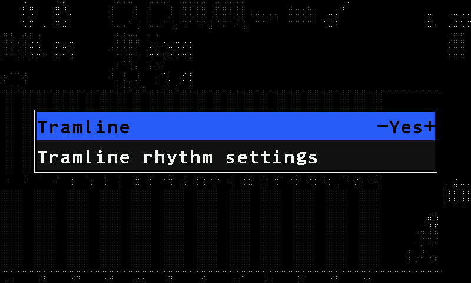
Le menu Tramline. Touchez « Tramline » et glissez vers la droite jusqu'à « Yes » (oui). Touchez ensuite deux fois « Tramline rhythm settings » (réglages du rythme de jalonnage). Le formulaire du rythme s'ouvre avec le rythme 1 sélectionné.
Sur « Rhythm » (rythme), glissez vers la droite ou vers la gauche pour choisir le numéro du rythme. Touchez avec deux doigts et choisissez « Select » (sélectionner). Le mot « Active » (actif) apparaît à côté du numéro — sans lui, le rythme est mémorisé mais n'est pas utilisé.
Glissez vers le bas jusqu'à « Bouts » (passages), touchez avec deux doigts et réglez le nombre de passages du rythme.
Glissez jusqu'à la cellule encadrée sous le titre d'activation et touchez avec deux doigts. Choisissez le numéro de l'actionneur, puis le passage sur lequel il doit couper ses sections.
Si le motif l'exige, ajoutez d'autres passages au même actionneur — jusqu'à quatre — avec la cellule encadrée en fin de ligne, ou un autre actionneur avec la cellule de la ligne vide en dessous.
Touchez avec trois doigts. Le rythme est enregistré et le menu Tramline revient. Touchez en dehors des menus jusqu'au retour de l'écran d'accueil. L'indicateur de jalonnage montre le passage en cours et le nombre de passages.
Un maintien du doigt n'importe où sur le formulaire enregistre le rythme sans le quitter. Revenez au niveau Operator avant de travailler — au-dessus, aucune alarme n'est affichée.
Le formulaire du rythme
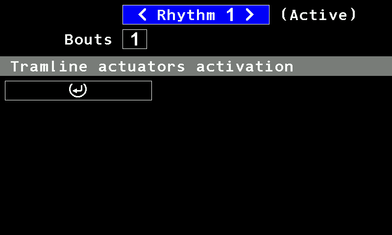
- « Rhythm ». Le numéro du rythme ; un glissement vers la droite ou vers la gauche parcourt les trois.
- « Active ». Ce rythme est celui qui est utilisé.
- « Bouts ». Le nombre de passages du rythme.
- Titre d'activation. « Tramline actuators activation » (activation des actionneurs de jalonnage) sur une machine qui fait le jalonnage avec des actionneurs ; « Tramline motors activation » (activation des moteurs de jalonnage) sur une machine qui arrête des moteurs de doseur. Une machine qui a les deux affiche les deux titres.
- Cellule encadrée. Ajoute un actionneur (ou un moteur) et son passage de coupure.
Dans le formulaire, un glissement vers le haut ou vers le bas passe d'une ligne à l'autre, un glissement vers la droite ou vers la gauche se déplace le long d'une ligne, et un toucher à deux doigts ouvre la cellule sélectionnée. « Reset rhythm settings » (réinitialiser les réglages du rythme), dans le menu de la ligne « Rhythm », remet le rythme sélectionné à ses valeurs par défaut.
Comment le passage change
Le panneau compte les passages lui-même. Quelque chose sur la machine doit lui dire qu'une passe est terminée :
| Sur la machine | Ce qui termine un passage |
|---|---|
| Capteurs de traceurs dans le profil | Au moins un capteur de traceur sous surveillance et qui répond. Le changement de position du traceur termine le passage. |
| Pas de traceurs | Le capteur de position de travail, sous surveillance et qui répond. Relever la machine hors du travail termine le passage. |
| Ni l'un ni l'autre | Le passage ne change pas. |
Quand le passage ne peut pas changer de lui-même, l'icône de jalonnage sur l'écran d'accueil est jaune (Passage de jalonnage). Vérifiez l'indicateur sur l'écran d'accueil avant de commencer une passe.
Régler la luminosité de l'écran
Rendre l'écran plus lumineux ou plus sombre — un élément du menu Settings, réglé à la main.
Sur l'écran d'accueil, touchez avec deux doigts. Touchez « Settings » (réglages), et touchez-le de nouveau.
« Brightness,% » (luminosité, %) est le premier élément. Touchez-le, puis glissez vers la droite pour éclaircir ou vers la gauche pour assombrir, par pas de 10, de 0 à 100.

Le menu Settings avec Brightness,% sélectionné. Touchez en dehors du menu pour le quitter. La nouvelle luminosité reste en vigueur et est enregistrée d'elle-même.
Il n'y a pas de luminosité automatique : l'écran reste à la valeur que vous avez réglée, de jour comme de nuit. Assombrissez-le pour le travail de nuit et relevez-le le matin. 0 est le réglage le plus sombre, pas l'extinction — l'écran reste allumé.
Le même menu contient « Volume » (volume) — l'intensité du son d'alarme — et « Buttons sound » (son des touches), le clic à chaque toucher. Tout le reste du menu Settings : Le menu Settings.
Travailler sans capteur de vitesse
Quand le capteur de vitesse tombe en panne au champ — prendre la vitesse au GPS, ou finir le travail sur une vitesse simulée et régler l'application à la main.
Symptôme. Le champ de vitesse affiche XX.X en rouge, ou la vitesse reste à zéro alors que la machine avance. Sans vitesse, le panneau ne peut calculer ni la surface, ni les doses, ni les écarts, et les moteurs de doseur ne savent pas à quelle vitesse tourner.
Cause. Le capteur de vitesse ou l'appareil qui le porte ne répond pas, ou la roue ne donne plus d'impulsions.
Que faire. Deux solutions, toutes deux par le menu contextuel du capteur de vitesse — maintenez le doigt sur le champ de vitesse. Les deux éléments exigent le niveau Agronomist : Activer le niveau Agronomist.
Prendre la vitesse au GPS
Réglez « GPS internal » (GPS interne) sur « Yes » (oui). Le panneau prend la vitesse d'avancement à son propre récepteur. Surveillez le symbole de satellite dans la colonne de droite : vert ou jaune est utilisable, rouge ne l'est pas. Voir GPS.
Travailler sur une vitesse simulée
Maintenez le doigt sur le champ de vitesse. Son menu contextuel s'ouvre.
Réglez « Imitation, km/h » (simulation, km/h) sur la vitesse à laquelle vous allez rouler, jusqu'à 20 km/h. Le panneau vous indique « Settings of Min and Max speed switched off! » (les réglages de vitesse min. et max. sont désactivés !) — les limites de vitesse ne sont pas surveillées tant que la vitesse est simulée.
Le panneau verrouille lui-même l'application du produit : la main jaune apparaît dans la colonne de droite.
Revenez au niveau Operator, pour que les alarmes soient de nouveau affichées.
Le champ de vitesse montre maintenant un chiffre jaune en alternance avec « IMITATION » (simulation) (Vitesse).
Réglez l'application avec le verrouillage manuel : maintenez le doigt sur un emplacement vide de la colonne de droite pour commencer à appliquer sur une passe, et de nouveau pour vous arrêter en fourrière. Voir Verrouiller l'application du produit à la main.
Roulez à la vitesse que vous avez réglée. Les doses ne sont justes que tant que la vitesse réelle y correspond.
Quand le capteur est réparé, remettez « Imitation, km/h » sur « No » (non) — glissez vers la gauche jusqu'à ce que la valeur indique « No » — et réglez de nouveau les limites de vitesse.
Détails des réglages du capteur de vitesse : Capteur de vitesse.
Niveaux d'accès
Les trois niveaux d'accès de l'Hectare 5, ce que chacun ouvre, et ce qu'il advient des alarmes tant qu'un niveau supérieur est réglé.
Tous les réglages ne sont pas ouverts à tout le monde. Le panneau a trois niveaux d'accès. À chaque mise sous tension, il démarre au plus bas, « Operator » (opérateur).
| Niveau | Ce qu'il ouvre |
|---|---|
| « Operator » | Le travail de tous les jours : luminosité, volume, langue, temporisation des alarmes, horloge, doses de consigne et seuils d'alarme, mise d'un capteur sous ou hors surveillance, étalonnages des masses. À ce niveau, la remise à zéro des statistiques demande un code. |
| « Agronomist » (agronome) | Les réglages de mise en service : « Seeding machine parameters » (paramètres du semoir), « Product rate error,% » (écart de dose du produit, %), la plupart des paramètres des capteurs, les étalonnages de la vitesse et des doseurs, et le menu « Service » avec le profil et la configuration des appareils. Exige un code. |
| « Service » (service) | Tout ce qui précède, plus les éléments de retour aux réglages par défaut, « Reset settings » (réinitialiser les réglages), « Save factory defaults » (enregistrer les réglages d'usine), le numéro de série, la période d'essai et « Imitation mode » (mode simulation). Réservé au service après-vente. Exige un code. |
Chaque tableau de réglages de ce manuel indique le niveau qu'un élément exige. Un élément situé au-dessus de votre niveau n'apparaît pas du tout dans le menu : si un élément nommé ici manque, vérifiez d'abord le niveau.
Changer de niveau
Le niveau se change à un seul endroit : « Settings » (réglages) → « User » (utilisateur). Pour monter d'un niveau, le panneau demande le code de ce niveau ; pour descendre, non. Pas à pas : Activer le niveau Agronomist.
Demandez le code à votre concessionnaire ou au service d'assistance.
Ce qu'il advient des alarmes tant que le niveau est élevé
Les alarmes ne sont pas perdues tant qu'elles sont masquées : elles attendent. Quand vous redescendez au niveau « Operator », le panneau écarte celles qui ont disparu entre-temps et affiche celles qui sont toujours vraies, une fenêtre après l'autre — y compris celles que vous aviez déjà fermées avant de monter de niveau. Après une heure de mise en service au niveau « Agronomist », attendez-vous à une courte série de fenêtres d'alarme au retour. C'est l'arriéré, pas un nouveau défaut. Fonctionnement des fenêtres : Fonctionnement des alarmes.
Activer le niveau Agronomist
Les étapes, au toucher, pour monter le niveau d'accès à Agronomist ou Service avant de modifier des réglages, puis revenir à Operator.
La plupart des travaux de mise en service — paramètres des capteurs, étalonnages, profil, configuration des appareils — exigent le niveau « Agronomist » (agronome). Le niveau « Service » (service) se monte de la même façon. Ce que chaque niveau ouvre : Niveaux d'accès.
Il vous faut le code du niveau voulu. Un code n'ouvre que son propre niveau : choisissez « Agronomist » et saisissez le code Agronomist.
Sur l'écran d'accueil, touchez avec deux doigts. Le menu principal s'ouvre.
Le menu principal. Touchez « Settings » (réglages), puis touchez-le de nouveau. Le menu « Settings » s'ouvre.
Le menu Settings au niveau Operator. Repérez « User » (utilisateur) vers la fin du menu — glissez vers le haut s'il n'est pas visible — et touchez-le. Glissez vers la droite jusqu'à lire « Agronomist » (ou « Service »).

« User » réglé sur Agronomist. Touchez de nouveau « User ». Le pavé numérique s'ouvre avec « Enter your PIN: » (saisissez votre code). Saisissez le code et touchez « OK ».
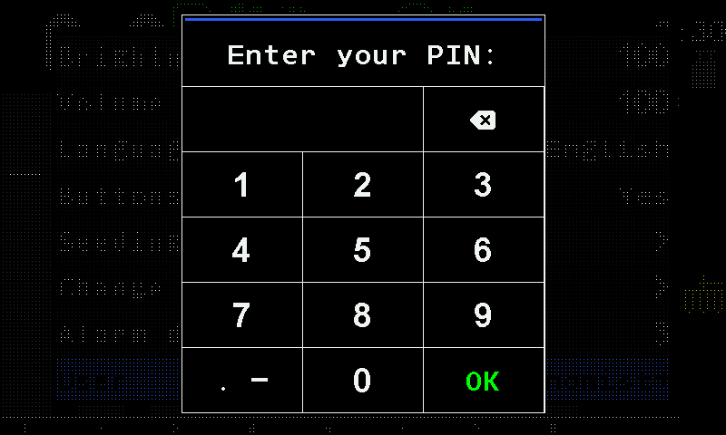
Le pavé numérique qui demande le code. Une courte fenêtre nomme le nouveau niveau, et le menu « Settings » revient avec les éléments de ce niveau — par exemple « Seeding machine parameters » (paramètres du semoir). Touchez en dehors du menu pour le quitter.
Un code erroné affiche « Invalid PIN » (code invalide) dans une fenêtre rouge, et le pavé numérique s'ouvre de nouveau. Pour renoncer, touchez en dehors du pavé numérique ; le niveau reste ce qu'il était.
Quand vous redescendez, les alarmes encore vraies s'affichent l'une après l'autre. Voir Niveaux d'accès.
Le profil
Ce que le profil dit au panneau, comment le vérifier, ce que permet chaque élément du profil, quand le panneau refuse un profil et comment il est enregistré.
Le profil indique au panneau quels appareils, et combien de chacun, se trouvent sur la machine. Un panneau arrive en général avec le profil déjà réglé. Vérifiez-le avant de régler quoi que ce soit d'autre : un appareil absent du profil n'est jamais surveillé, et un appareil du profil qui n'est pas monté déclenche « Connection lost » (connexion perdue).
Vérifier le profil sur l'écran d'accueil
Allumez le panneau et attendez l'apparition de l'écran d'accueil. Puis observez-le :
- Pas d'alarme « Connection lost » — le panneau a trouvé tous les appareils que déclare le profil.
- Pas d'indicateur blanc avec un point d'exclamation — aucun appareil n'est laissé hors surveillance.
- Pas d'indicateur rouge avec une croix — tous les appareils répondent.
Ce que signifient les indicateurs : Indicateurs. Comment mettre un appareil sous ou hors surveillance : Mettre un capteur sous ou hors surveillance.
Ouvrir le profil
Le profil exige le niveau « Agronomist » (Activer le niveau Agronomist). Touchez l'écran d'accueil avec deux doigts, puis touchez « Service » deux fois et « Profile » (profil) deux fois. Changez l'élément sélectionné par un glissement vers la droite ou vers la gauche.

Les éléments du profil
| Élément | Plage |
|---|---|
| « Seed sensors » | 2 … 120. Le menu permet de régler 1, mais un tel profil est refusé à l'enregistrement. Capteurs de graines. |
| « Fertilizer sensors » | 0 … 60 ; capteurs de graines et d'engrais ensemble pas plus de 120. Capteurs d'engrais. |
| « Liq.fert.flow sensors » | 0 … 60 — capteurs de section d'engrais liquide. |
| « Hoppers » | 0 … 9 — trémies. |
| « Dispensers » | 0 … 9 — capteurs d'arbre de doseur. |
| « Speed » | « No » (non) / « Control panel » (capteur câblé au panneau) / « Input device » (un capteur de roue sur un appareil d'entrée) / « Input device (2) » (deux capteurs de roue sur un appareil d'entrée). |
| « Fans » | 0 … 2 — turbines. |
| « Pressure sensors » | 0 … 3 — capteurs de pression. |
| « Work position sensor » | « No » / « Yes » (oui) — capteur de position de travail. |
| « Markers » | « No » / « One » (un) / « Both » (les deux) — traceurs. |
| « No battery charge », « Emergency oil pressure », « Ignition », « Low fuel », « Air filter » | Les capteurs du moteur — « No » / « Yes » pour chacun. |
| « EMD of the seeds » | 0 … 60 — moteurs électriques des doseurs de semences. |
| « EMD of the fertilizers » | 0 … 30 — moteurs électriques des doseurs d'engrais ; les deux groupes de moteurs ensemble pas plus de 60. |
| « Tramline actuators » | 0 … 4 — actionneurs de jalonnage. |
| « Liq.fert.pump controller » | 0 … 1 — contrôleur de la pompe d'engrais liquide. |
À la fin du menu se trouvent « Save settings » (enregistrer les réglages), « Load settings » (charger les réglages), les deux éléments de la carte mémoire et « Save profile » (enregistrer le profil) — voir ci-dessous et Enregistrer et charger les réglages.
Quand le panneau refuse un profil
Le panneau vérifie le profil entier, pas seulement l'élément que vous avez modifié. Il refuse un profil quand :
- les capteurs de trémie, de doseur et de moteur réunis dépassent 12 ;
- ils dépassent 10 alors que les capteurs de pression et de turbine réunis dépassent quatre ;
- les capteurs de pression et de turbine réunis dépassent cinq ;
- il y a des moteurs d'engrais mais pas de moteurs de semences, ou des moteurs d'engrais sans capteurs d'engrais ;
- il y a des moteurs électriques ou une pompe d'engrais liquide mais pas de capteur de vitesse.
Enregistrer le profil
Après avoir modifié le profil, touchez « Save profile » à la fin du menu, puis touchez-le de nouveau.
Si rien n'a été modifié, le panneau affiche « No changes » (aucune modification). Si le profil enfreint l'une des règles ci-dessus, il affiche « Invalid profile! » (profil invalide) en rouge et n'enregistre rien. Sinon, il demande « Are you sure? » (êtes-vous sûr ?).

La question avant l'enregistrement du profil. Touchez « Yes ». Le panneau affiche « Wait... » (patientez), puis « Saved » (enregistré) et « Restart system » (redémarrez le système), et redémarre de lui-même.
Un toucher sur « No », ou en dehors de la fenêtre de question, laisse le profil enregistré tel qu'il était.
Enregistrer et charger les réglages
Garder une copie des réglages dans le panneau et la restaurer, et écrire le profil sur une carte mémoire.
Le panneau peut garder une copie de ses réglages et la restaurer plus tard — utile avant un essai. Avec une carte mémoire dans le logement, il peut aussi écrire le profil sur la carte. Tous ces éléments se trouvent à la fin du menu « Profile » (profil) (Le profil) et exigent le niveau « Agronomist ».
| Élément du menu « Profile » | Ce qu'il fait |
|---|---|
| « Save settings » | Garde une copie des réglages actuels dans le panneau (enregistrer les réglages). |
| « Load settings » | Restaure cette copie (charger les réglages). |
| « Save to SD-card » | Écrit le profil sur la carte mémoire. Affiché seulement quand une carte est dans le logement et prête. |
| « Load from SD-card » | Affiche la liste des profils présents sur la carte. Affiché seulement quand une carte est prête. |
| « Save factory defaults » | Enregistre les réglages actuels comme valeurs d'usine. Niveau « Service » uniquement. |
Garder et restaurer les réglages
Montez de niveau (Activer le niveau Agronomist), touchez l'écran d'accueil avec deux doigts et ouvrez « Service » → « Profile » — touchez chaque élément deux fois.
Glissez le doigt vers le haut jusqu'à la fin du menu. Touchez « Save settings » ou « Load settings », puis touchez-le de nouveau. Le panneau demande « Are you sure? » (êtes-vous sûr ?).
La question avant l'enregistrement des réglages. Touchez « Yes » (oui). Le panneau répond « Saved » (enregistré) ou « Loaded » (chargé).

Le panneau confirme par « Saved ».
S'il n'y a aucune copie à restaurer, « Load settings » se termine par « FAILURE » (défaillance) dans une fenêtre rouge.
Écrire le profil sur la carte mémoire
Touchez « Save to SD-card » deux fois. Il n'y a pas de question : le panneau écrit le profil et répond « Saved ». Si la carte n'est pas inscriptible, il répond « FAILURE » ; si la carte a disparu, « FAILURE » et « Insert SD-card » (insérez la carte SD).
- Les fichiers sont nommés automatiquement, P0001.pfl et suivants, dans le dossier PROFILES de la carte.
- Gardez la carte pour son propre panneau : un fichier de profil écrit par une version du micrologiciel n'est très probablement pas lisible par une autre.
La liste des profils de la carte
« Load from SD-card » ouvre une liste des fichiers de profil trouvés sur la carte. Un fichier que le panneau ne sait pas lire s'affiche en rouge. Un toucher à trois doigts ferme la liste. S'il n'y a aucun fichier de profil sur la carte, l'élément répond « FAILURE ».
Le menu Settings
Chaque élément du menu « Settings » propre au panneau — luminosité, volume, langue, son des touches, réglages des diagrammes, date et heure, temporisation des alarmes, niveau d'accès — avec sa plage, sa valeur par défaut et son niveau d'accès.
Le menu « Settings » (réglages) regroupe les réglages du panneau lui-même. Ouvrez-le depuis l'écran d'accueil : touchez avec deux doigts, puis touchez « Settings » deux fois. Les réglages des capteurs pris individuellement sont ailleurs — voir Réglages des capteurs.
- « Brightness,% » (luminosité, %) — le rétroéclairage. L'élément sélectionné montre sa valeur entre - et + ; glissez vers la droite ou vers la gauche pour la modifier.
- « Volume » (volume) — le volume du son d'alarme.
- « Language » (langue) — la langue des écrans.
- « Buttons sound » (son des touches) — un clic à chaque toucher pris en compte par l'écran.
- « Seeding diagram settings » (réglages du diagramme de semis) — la façon dont le diagramme des graines est dessiné. Plus bas.
- « Change Date&Time » (modifier la date et l'heure) — l'horloge. Plus bas.
- « Alarm delay » (temporisation des alarmes) — la durée pendant laquelle un défaut doit persister avant l'ouverture de la fenêtre d'alarme.
- « User » (utilisateur) — le niveau d'accès. Niveaux d'accès.
Les éléments
| Élément | Plage et valeur par défaut | Niveau |
|---|---|---|
| « Brightness,% » | 0 … 100, par pas de 10 ; 100 par défaut. 0 est le réglage le plus sombre, pas l'extinction. Voir Luminosité de l'écran. | Operator |
| « Volume » | 0 … 100, par pas de 10 ; 100 par défaut. | Operator |
| « Language » | Anglais, ukrainien, polonais, hongrois, roumain, bulgare. | Operator |
| « Buttons sound » | « No » (non) / « Yes » (oui) ; « Yes » par défaut. | Operator |
| « Seeding diagram settings », « Fertil. diagram settings », « Liq.fert. diagram settings » | Sous-menus. Chacun n'est affiché que si la machine a un capteur de vitesse, si ses propres capteurs figurent dans le profil et si son diagramme n'est pas en mode « Flow » (débit). | Operator |
| « Change Date&Time » | Sous-menu. | Operator |
| « Alarm delay » | 2 … 20 s ; 3 s par défaut. Voir Fonctionnement des alarmes. | Operator |
| « Product rate error,% » | 3 … 20 % ; 5 % par défaut. De combien un produit dosé au poids, ou la pompe d'engrais liquide, peut s'écarter de sa dose de consigne avant une alarme (écart de dose du produit). Affiché seulement si un produit est dosé au poids ou si un contrôleur de pompe figure dans le profil. | Agronomist |
| « Seeding machine parameters » | Sous-menu : largeur, modes, jalonnage, étalonnages. Masqué quand la machine n'a ni capteur de vitesse ni actionneur de jalonnage. Paramètres du semoir | Agronomist |
| « User » | « Operator » / « Agronomist » / « Service ». Activer le niveau Agronomist | Operator |
| « Reset settings » | Remet les réglages aux valeurs d'usine (réinitialiser les réglages). | Service |
Sur une machine à deux groupes de capteurs de graines, les deux éléments de diagramme s'appellent « Seeding gr.A diagram » et « Seeding gr.B diagram ».
Les réglages s'enregistrent d'eux-mêmes quelques secondes après la dernière modification. Attendez un instant avant d'éteindre le panneau.
Réglages des diagrammes

Il y a trois de ces menus — graines, engrais solide, engrais liquide. Le menu de l'engrais liquide n'a que « Grid » et « Reset to defaults ».
| Élément | Ce qu'il fait |
|---|---|
| « Skips & Doubles » | « Yes » affiche les barres de manques et de doubles sur le dernier tronçon du parcours (manques et doubles). Mode « Precise » uniquement. « Yes » par défaut. |
| « Grid » | « No » — seulement la ligne de dose ; « Partial » (partielle) — seulement les limites de tolérance ; « Full » (complète) — les deux. « Full » par défaut (grille). |
| « Scale S&D,% » | La hauteur des barres de manques et de doubles, 5 … 50 % par pas de 5 ; 20 par défaut (échelle). Mode « Precise » uniquement. |
| « Reset to defaults » | Remet ce menu aux valeurs d'usine (valeurs par défaut). Niveau Service uniquement. |
Modifier la date et l'heure
Touchez « Change Date&Time », puis touchez-le de nouveau. Les champs « Year » (année), « Month » (mois), « Day » (jour), « Hours » (heures), « Minutes » (minutes) et « Seconds » (secondes) s'ouvrent, avec « Set » (valider) à la fin.

Les champs de date et d'heure. Touchez un champ et glissez vers la droite ou vers la gauche jusqu'à la valeur voulue — un pas par glissement. Les jours suivent le mois.
Touchez « Set », puis touchez-le de nouveau. L'horloge prend les nouvelles valeurs et le menu « Settings » revient.
Quitter les champs par un toucher en dehors du menu, sans « Set », conserve l'ancienne heure.
Paramètres du semoir
La largeur de travail, les modes de semis et de fertilisation, le jalonnage, la correspondance des sections avec les actionneurs et les moteurs, et les deux étalonnages qui exigent que la machine roule.
« Settings » (réglages) → « Seeding machine parameters » (paramètres du semoir). L'élément exige le niveau « Agronomist » (Activer le niveau Agronomist) et il est masqué sur une machine qui n'a ni capteur de vitesse ni actionneur de jalonnage. Les éléments qu'il contient dépendent du profil.
| Élément | Valeurs |
|---|---|
| « Width, cm » | 100 … 2500 ; 560 par défaut. Pavé numérique. |
| « Mode of seeding » | « Flow » / « Hybrid » / « Precise » ; « Flow » par défaut. |
| « Mode of fertilizers » | « Flow » / « Hybrid » / « Precise ». |
| « Mode of liq.fert. » | « Flow » / « By area ». |
| « Tramline » | Sous-menu. |
| « Relation of sensors to actuators » | Ouvre l'écran de correspondance. |
| « Speed calibration » | Lance l'étalonnage de la vitesse. |
| « Dispenser calibration » | « ALL », ou le numéro d'un doseur ; lance l'étalonnage de la rotation. |
| « Reset to defaults » | Remet la largeur et les modes aux valeurs d'usine. Niveau Service uniquement. |
Width, cm — largeur de travail
La largeur de travail de l'outil. La surface travaillée en est calculée : il faut donc la saisir. Touchez l'élément deux fois, ou glissez dessus : le pavé numérique s'ouvre. Saisissez la largeur et touchez « OK » ; un toucher en dehors du pavé conserve l'ancienne valeur. L'élément est masqué sans capteur de vitesse.
Si les statistiques contiennent déjà du travail, le panneau demande d'abord de les effacer — la surface de l'ancienne largeur et celle de la nouvelle ne peuvent pas être additionnées.
Modes de semis et d'engrais — Mode of seeding, Mode of fertilizers
| Mode | Unité | Pour |
|---|---|---|
| « Flow » (débit) | graines par seconde | semoirs à céréales |
| « Hybrid » (hybride) | graines par mètre | semoirs à céréales |
| « Precise » (précis) | graines par mètre, avec comptage des manques et des doubles | semoirs monograines |
L'engrais ne peut être réglé sur « Precise » que si le semis est en « Precise ». Sur une machine à deux groupes de capteurs de graines, les deux éléments s'appellent « Mode of seeding gr.A » et « Mode of seeding gr.B » ; le groupe B ne peut être en « Precise » que si le groupe A l'est, donc réglez le groupe B sur « Flow » ou « Hybrid » avant de sortir le groupe A du mode « Precise ».
Mode de l'engrais liquide
« Flow » (litres par minute) ou « By area » (litres par hectare). Affiché seulement quand aucun contrôleur de pompe d'engrais liquide ne figure dans le profil — avec un contrôleur, le panneau travaille à l'hectare.
Correspondance des capteurs et des actionneurs — Relation of sensors to actuators
Quels capteurs de section appartiennent à quel actionneur de jalonnage ou à quel moteur de doseur. Quand un actionneur coupe ses sections, leurs capteurs passent en surveillance de jalonnage. L'élément n'est affiché que s'il y a quelque chose à relier : des actionneurs de jalonnage, ou des moteurs de doseur qui ne correspondent pas un à un aux capteurs de section.

Une correspondance est une plage de sections, de « Diapason start » (début de plage) à « Diapason end » (fin de plage) — des numéros égaux désignent une seule section. Jusqu'à quatre plages peuvent être rattachées à un actionneur. Sur une machine à moteurs de doseur, l'écran comporte aussi « Motors to sensors mapping » (correspondance des moteurs et des capteurs).
Sur l'écran, un glissement vers le haut ou vers le bas change de ligne, un glissement vers la droite ou vers la gauche se déplace le long d'une ligne, et un toucher à deux doigts ouvre le menu de la cellule sélectionnée — pour ajouter une plage ou « Remove diapason » (supprimer la plage). Maintenez le doigt n'importe où sur l'écran pour appliquer la correspondance.
Jalonnage — Tramline
Un sous-menu de deux éléments : « Tramline » (« No » / « Yes ») et « Tramline rhythm settings » (réglages du rythme de jalonnage). Affiché seulement sur une machine capable de faire des jalonnages. Régler un rythme : Régler le rythme de jalonnage.
Étalonnage de la vitesse et des doseurs — Speed calibration, Dispenser calibration
Les deux étalonnages qui exigent que la machine roule. Tous deux sont masqués sans capteur de vitesse. Sélectionnez « Dispenser calibration » et glissez vers la droite ou vers la gauche pour choisir le doseur — ou « ALL » pour tous à la fois — puis touchez de nouveau l'élément pour lancer.
Réglages des capteurs
Comment atteindre au toucher les réglages d'un capteur, ce que contient son menu contextuel, et quels étalonnages existent et où.
Chaque capteur, actionneur et moteur de la machine a ses propres réglages et son propre écran d'état. Les deux s'atteignent par son menu contextuel. Les paramètres de chaque type de capteur figurent dans les rubriques qui suivent celle-ci.
Atteindre un capteur
Maintenez le doigt sur l'appareil plus d'une demi-seconde :
- sur l'écran d'accueil — son icône, ou sa colonne sur un diagramme ;
- sur l'écran Motors ou le second écran d'accueil — la tuile d'un moteur ou d'un actionneur de jalonnage.
Le menu contextuel s'ouvre. Un toucher bref ne fait rien. Un maintien du doigt sur un indicateur de kg/ha, sur la consigne d'un diagramme ou sur un emplacement vide de la colonne de droite fait autre chose — voir Zones tactiles et gestes.

Le menu contextuel
| Élément | Ce qu'il fait | Niveau |
|---|---|---|
| « Information » | Ouvre l'écran d'état de cet appareil (informations). L'écran d'état d'un capteur | Operator |
| « Disable control » / « Enable control » | Met l'appareil hors surveillance, ou de nouveau sous surveillance (désactiver / activer la surveillance). Non proposé pour le capteur de vitesse. Mettre un capteur sous ou hors surveillance | Operator |
| « Registers » | Une vue brute des registres de l'appareil (registres), pour le service après-vente. Ne fait partie d'aucune procédure. Pour un moteur ou le contrôleur de pompe, l'élément s'appelle « Electric motors » (moteurs électriques) et ouvre l'écran de diagnostic des contrôleurs. | Agronomist |
| Les éléments propres à l'appareil | Par exemple « Speed calibration » (étalonnage de la vitesse) pour le capteur de vitesse. | selon l'élément |
| Les paramètres | Ceux que vous voyez dépendent du niveau d'accès. Modifiez celui qui est sélectionné par un glissement vers la droite ou vers la gauche. | selon l'élément |
| « Reset to defaults » | Remet les paramètres de cet appareil aux valeurs d'usine (valeurs par défaut). | Service |
Touchez en dehors du menu pour le quitter. Les valeurs modifiées s'enregistrent d'elles-mêmes.
L'écran d'état
« Information » ouvre l'écran d'état de l'appareil : son identité, sa liaison, ses valeurs en direct et ses alarmes actives. Comment le lire : L'écran d'état d'un capteur.
Étalonnages
Il existe quatre étalonnages. Ce ne sont pas les variantes d'une même procédure : chacun écrit d'autres paramètres et s'atteint autrement.
| Ce qu'il corrige | Où | Niveau | Machine |
|---|---|---|---|
| La vitesse d'avancement — réécrit « Factor, % » (facteur, %) du capteur de vitesse. Étalonner le capteur de vitesse | « Settings » → « Seeding machine parameters » → « Speed calibration », ou « Speed calibration » dans le menu contextuel du capteur de vitesse | Agronomist dans le menu, Operator dans le menu contextuel | roule sur 100 m |
| La rotation du doseur — « Wheel, pulses » (impulsions de la roue) par rapport à « Dispenser pulses » (impulsions du doseur). Étalonner la rotation du doseur | « Settings » → « Seeding machine parameters » → « Dispenser calibration » | Agronomist | roue et arbre du doseur tournés ensemble |
| La masse du doseur — « Weight, gr » (poids, g) et « Weight, pulses » (impulsions du poids). Étalonner le doseur au poids | menu contextuel du capteur de doseur | Operator | à l'arrêt |
| La masse du rouleau doseur — « Weight, gr » et « Rotations » (rotations) d'un moteur. Étalonner un moteur de dosage au poids | menu contextuel du moteur électrique du doseur | Operator | à l'arrêt |
Les éléments « Speed calibration » du menu contextuel et l'étalonnage du moteur ne sont proposés que machine à l'arrêt. Les deux étalonnages de masse sont au niveau « Operator » parce qu'il faut les refaire à chaque changement de produit.
L'écran d'état d'un capteur
Comment lire l'écran d'état d'un capteur — voie, adresse, type, état de la liaison, valeurs en direct et alarmes actives — ce que chaque type de capteur y montre, et comment s'y déplacer au toucher.
On l'atteint par « Information » (informations) dans le menu contextuel d'un appareil (Réglages des capteurs). Il montre ce que le panneau sait d'un appareil.
L'écran

- « Channel # » (voie n°) — de quel appareil de la liste complète il s'agit.
- Les repères de part et d'autre du numéro de voie. Glissez vers la gauche pour l'appareil précédent, vers la droite pour le suivant. L'écran reste ouvert.
- « Address: » (adresse) — l'adresse à laquelle l'appareil répond. Non indiquée dans ce manuel.
- « Type: » (type) — le genre d'appareil et son numéro, ici le capteur de trémie 1.
- « Link: » (liaison) — l'état de la communication. Tableau ci-dessous.
- Les valeurs de ce type d'appareil — ici le niveau sur l'entrée d'un capteur de trémie. Tableau ci-dessous.
- « Alarm 1 from 1 » (alarme 1 sur 1) — combien d'alarmes de cet appareil sont actives.
- Le nom de l'alarme — la première des alarmes actives.
Certains appareils affichent une ligne de plus, « Unit: » (unité) — l'unité à laquelle l'appareil est raccordé, par exemple « Control panel » (panneau de commande) pour le capteur de vitesse.
| Geste | Ce qu'il fait |
|---|---|
| Glisser vers la droite / vers la gauche | Appareil suivant / précédent — l'écran reste ouvert. |
| Glisser vers le haut, ou toucher à trois doigts | Retour à l'endroit d'où vous venez. |
États de la liaison
| État | Signification |
|---|---|
| « Normal » | L'appareil répond. |
| « Not controlled » | L'appareil est hors surveillance : ni la communication ni rien d'autre n'est surveillé (non surveillé). |
| « No connection » | L'appareil ne répond pas (pas de connexion). En rouge. |
| « Wrong device type! » | Quelque chose répond, mais pas le type d'appareil attendu par le profil (mauvais type d'appareil). En rouge. |
| « IMITATION » | Capteur de vitesse uniquement : la vitesse est simulée, non mesurée. En jaune. |
Les valeurs ne sont dessinées que si l'appareil est sous surveillance, répond et est du type attendu. Un appareil hors surveillance montre son identité et rien d'autre.
Ce que chaque type de capteur ajoute

| Appareil | Ce que l'écran montre |
|---|---|
| Capteur de vitesse | La fréquence des impulsions F= en Hz ; avec deux capteurs de vitesse, F1= et F2=. En dessous, les deux limites « Min speed, km/h » (vitesse minimale) et « Max speed, km/h » (vitesse maximale). Sur une machine qui dose un produit au poids avec des moteurs électriques, les limites sont celles que les moteurs peuvent tenir, resserrées par les deux réglages ; une limite que les réglages ne peuvent pas respecter est écrite en rouge sous forme d'inégalité. Sans de tels moteurs, une limite réglée sur zéro s'affiche ----, désactivée. |
| Capteur de trémie | Pin: et le niveau sur l'entrée, "0" ou "1". |
| Capteur d'arbre de doseur | F= en Hz, avec trois décimales. |
| Capteur de turbine | F= en Hz. |
| Capteur de pression | P= en kPa. |
| Capteur de graines, capteur d'engrais solide | Status: et l'un des huit états — ci-dessous. |
| Capteur de débit d'engrais liquide | Status: Working, ou Working:Tramline en mode jalonnage ; en dessous Flow= en L/min. |
| Capteur de position de travail | « Position: Working » ou « Position: Transporting » (position : au travail / en transport), et Pin: avec le niveau sur l'entrée. |
| Allumage, pression d'huile, charge de la batterie, niveau de carburant, filtre à air | Pin: et le niveau sur l'entrée, "0" ou "1". |
| Capteur de traceur | Seulement les lignes communes. |
| Actionneur de jalonnage | Status: Pulled in (rentré), Pulled out (sorti), Working pendant que l'obturateur se déplace, ou Unknown (inconnu). |
| Moteur électrique de doseur | Status: Working, ou Faulty (en défaut) tant qu'une alarme du moteur est active ; puis « Last fault: » (dernier défaut) avec le code du contrôleur, s'il y en a eu un (codes). Un contrôleur universel ajoute IN1[ ] IN2[ ] IN3[ ] avec les niveaux de ses trois entrées. |
| Contrôleur de pompe d'engrais liquide | Status: Working ou Faulty. En cas de défaut, « Last fault: » et le code. Sinon : Flow= en L/min, Load= en pour cent, et Pressure sensor: No s'il n'y en a pas, sinon Pressure sensor= en bar avec le signal brut en mA entre parenthèses. Des tirets tiennent la place d'une valeur que le contrôleur ne peut pas donner. |
Les huit états d'un capteur de graines ou d'engrais
| État | Signification |
|---|---|
| Working | Normal. |
| Working:Tramline | Normal ; le capteur est en mode de surveillance du jalonnage pour le passage en cours, ou son application de produit est désactivée. |
| Configuring | Le capteur a reçu de nouveaux réglages et les applique. |
| Calibration in progress | Le capteur effectue son étalonnage initial. Cela prend quelques secondes. |
| Clogged | Le canal optique est obstrué — le plus souvent un tube de descente de graines bouché. En rouge. |
| Light struck | Trop de lumière entre dans le canal optique ; le capteur peut mal compter. En rouge. |
| Faulty | Le capteur signale un défaut qui lui est propre. En rouge. |
| Unknown | Un autre défaut qui ne peut être identifié. En rouge. |
Capteur de vitesse d'avancement
Les paramètres du capteur de vitesse d'avancement — impulsions, diamètre de roue, facteur, limites de vitesse, simulation, récepteur GPS intégré — et ce que fait de lui-même le réglage de la simulation.
Tout ce que le panneau compte — surface, doses, écarts — est calculé à partir de la distance parcourue. Un capteur de vitesse qui se trompe d'un dixième fausse d'un dixième tous les autres chiffres du panneau. Réglez d'abord ses paramètres, puis étalonnez-le (Étalonner le capteur de vitesse).
Maintenez le doigt sur le champ de vitesse de l'écran d'accueil pour ouvrir le menu contextuel du capteur de vitesse (Réglages des capteurs). Tous ses paramètres exigent le niveau « Agronomist » (Activer le niveau Agronomist). Le menu propose aussi « Speed calibration » (étalonnage de la vitesse) directement, sous « Information », machine à l'arrêt.

| Paramètre | Ce qu'il fait | Plage, défaut |
|---|---|---|
| « Pulses » | Le nombre d'impulsions que le capteur donne par tour de roue (impulsions). | 1 … 1000 ; 6 |
| « Count period » | Le nombre d'impulsions sur lequel le panneau fait la moyenne avant de recalculer la vitesse ; un changement brusque de vitesse est pris en compte aussitôt (période de comptage). Masqué quand le capteur est sur un appareil d'entrée. | 1 … 1000 ; 1 |
| « Diameter, cm » | Le diamètre de la roue. | 10 … 200 ; 60 |
| « Factor, % » | Une correction de la distance par tour de roue : le panneau compte la circonférence de la roue multipliée par ce facteur. 100 prend la circonférence telle quelle. L'étalonnage de la vitesse le réécrit. Pavé numérique. | 1 … 10000 ; 100 |
| « Seeding criteria » | « Yes » — les alarmes de section ne sont surveillées que machine en mouvement ; « No » — aussi à l'arrêt (critère de semis). Masqué, et toujours sur « Yes », en mode « Precise » et sur une machine à moteurs de doseur ou à pompe. | « No » / « Yes » ; « Yes » |
| « Min speed, km/h » | Sous cette vitesse, l'écran d'accueil affiche « FASTER » (plus vite). « No » (0) désactive le contrôle. | 0 … 99 ; « No » |
| « Max speed, km/h » | Au-dessus de cette vitesse, l'écran d'accueil affiche « SLOWER » (plus lentement). « No » (0) désactive le contrôle. | 0 … 99 ; « No » |
| « Imitation, km/h » | Une vitesse simulée (simulation). « No » (0) — le vrai capteur est utilisé. | 0 … 20 ; « No » |
| « GPS » | Prendre la vitesse d'un récepteur externe. Affiché seulement quand il y en a un en service. | « No » / « Yes » |
| « Width, cm » | La voie entre les deux roues d'une installation à deux capteurs (largeur). Affiché seulement avec « Input device (2) » dans le profil. | 0 … 10000 ; 280 |
| « GPS internal » | Prendre la vitesse du récepteur intégré au panneau (GPS interne). | « No » / « Yes » ; « No » |
Le minimum doit être inférieur au maximum, sinon le panneau déclenche « Error in settings of Min/Max » (erreur dans les réglages Min/Max) (Alarmes du capteur de vitesse). Avec « GPS internal » activé, le symbole de satellite de l'écran d'accueil montre la réception, et moins de quatre satellites déclenchent « Poor GPS signal quality » (mauvaise qualité du signal GPS) — voir GPS.
La vitesse simulée est aussi maintenue dans la plage que permet le dosage : une valeur hors plage est ramenée à la limite la plus proche au moment où vous la réglez. Tant que la vitesse est simulée, l'écran d'état du capteur affiche « IMITATION » en jaune. Travailler sans capteur de vitesse : Travailler sans capteur de vitesse.
L'écran d'état
L'écran d'état montre la fréquence des impulsions F= en Hz (avec deux capteurs, F1= et F2=) et les deux limites en vigueur. Voir L'écran d'état d'un capteur.
Étalonner le capteur de vitesse
Parcourez 100 m balisés pour que le panneau corrige le facteur du capteur de vitesse d'avancement.
L'étalonnage mesure une distance connue et corrige « Factor, % » (facteur, %) du capteur de vitesse pour que la distance du panneau lui corresponde. Avant de commencer, réglez « Pulses » et « Diameter, cm » du capteur (Capteur de vitesse d'avancement) — l'étalonnage corrige la distance par tour ; il ne peut pas inventer les impulsions.
Il y a deux entrées :
- « Settings » (réglages) → « Seeding machine parameters » (paramètres du semoir) → « Speed calibration » (étalonnage de la vitesse) — au niveau « Agronomist » (Activer le niveau Agronomist) ;
- « Speed calibration » dans le menu contextuel du capteur de vitesse, machine à l'arrêt. Au niveau « Operator », le panneau demande d'abord le code PIN du niveau Agronomist ; au niveau « Agronomist », il demande « Are you sure? » (êtes-vous sûr ?) — touchez « Yes » (oui).
Balisez 100 m sur un terrain plat et placez la machine au départ.
Touchez « Speed calibration », puis touchez-le de nouveau ; depuis le menu contextuel, répondez d'abord à la demande de code PIN ou à la question. Le panneau affiche « Pass 100m and press STOP » (parcourez 100 m et appuyez sur STOP) avec un seul bouton « STOP ».

La fenêtre d'étalonnage de la vitesse. Parcourez la distance balisée et arrêtez-vous à l'arrivée.
Touchez « STOP ». Le panneau affiche « Done » (terminé) et ferme la fenêtre de lui-même.

Le panneau confirme l'étalonnage.
La distance est fixée à 100 m ; le panneau ne la demande pas. Il attend une demi-seconde après « STOP » avant de lire le compteur et vérifie encore une fois la connexion à cet instant — un capteur qui décroche sur le dernier mètre est signalé comme une connexion perdue, non comme un mauvais résultat.
Quand cela ne fonctionne pas
| Le panneau affiche | Signification |
|---|---|
| « No speed sensor » | Le profil n'a pas de capteur de vitesse (pas de capteur de vitesse). L'étalonnage ne démarre pas. |
| « Connection lost with the sensor! Calibration canceled! » | Le capteur ne répond pas (connexion perdue avec le capteur ! étalonnage annulé !). |
| « Sensor not controlled! Calibration canceled! » | Le capteur est hors surveillance (capteur non surveillé ! étalonnage annulé !). Mettez-le sous surveillance (Mettre un capteur sous ou hors surveillance). |
| « FAILURE! The tractor did not move! » | Le compteur n'a pas bougé : le capteur n'a donné aucune impulsion — ce n'est pas une lecture imprécise, il n'y en a aucune (défaillance ! le tracteur n'a pas bougé !). Vérifiez le capteur et son câble. |
| « Calibration canceled! » | La fenêtre a été fermée autrement que par « STOP » (étalonnage annulé !). Rien n'a changé. |
Capteurs de graines et capteurs d'engrais solide
Les paramètres communs à un groupe de capteurs optiques de graines ou d'engrais solide — fraction, sensibilité, écart de dose, manques et doubles, pourcentage de semis, tolérance de jalonnage — et le commutateur par capteur de l'application du produit.
Les capteurs de graines et les capteurs d'engrais solide sont des appareils de même type et partagent un seul jeu de paramètres. Presque tout ce qui suit est commun à tout le groupe : modifiez-le sur un capteur et il change pour tous les capteurs du groupe. Deux choses seulement se règlent capteur par capteur : s'il est sous surveillance (« Disable control » / « Enable control », désactiver / activer la surveillance) et « Product application » (application du produit). Maintenez le doigt sur la colonne d'un capteur quelconque du groupe pour ouvrir son menu contextuel (Réglages des capteurs).
| Paramètre | Ce qu'il fait | Plage, défaut | Niveau |
|---|---|---|---|
| « Product application » | Par capteur. « No » (non) — le rang n'applique volontairement rien, et le panneau le surveille comme un rang de jalonnage coupé. Non proposé quand chaque capteur du groupe a son propre moteur de doseur. | « No » / « Yes » (oui) | Agronomist |
| « Sensitivity » | La sensibilité du canal optique (sensibilité). Affiché seulement pour les types de capteurs qui l'utilisent. | 1 … 120 ; 80 | Agronomist |
| « Fraction » | Le filtre du capteur pour la taille des particules de produit (fraction). Les alarmes de dose, de manques et de doubles indiquent dans quel sens le modifier. | 1 … 100 ; 10 | Operator |
| « Correction » | Une correction de la fenêtre de détection du canal optique (correction). Affiché seulement pour le type de capteur qui l'utilise. | 100 … 3300, par pas de 10 ; 300 | Operator |
| « Rate error,% » | De combien la dose réelle peut s'écarter de la dose de consigne avant une alarme (écart de dose, %). Modes « Hybrid » et « Precise » uniquement. | 5 … 95, par pas de 5 ; 50 | Agronomist |
| « Doubles error,% » | La part de doubles qui déclenche une alarme (écart des doubles, %). « No » (0) désactive l'alarme. Mode « Precise » uniquement. | 0 … 95 ; « No » | Agronomist |
| « Skips error,% » | La part de manques qui déclenche une alarme (écart des manques, %). « No » (0) désactive l'alarme. Mode « Precise » uniquement. | 0 … 95 ; « No » | Agronomist |
| « Recalculation,m » / « Recalculation,sec » | Le tronçon sur lequel manques et doubles sont comptés (recalcul) — en mètres sur une machine avec capteur de vitesse, en secondes sans. | 10 … 50 ; 20 | Operator |
| « Percent of sowing,% » | La part des capteurs de graines sous surveillance qui doivent voir des graines pour que le panneau décide que le semis a commencé (pourcentage de semis). Capteurs de graines uniquement ; masqué sur une machine à moteurs de doseur ou à pompe. | 5 … 80, par pas de 5 ; 20 | Agronomist |
| « Toler.sowing to tramline,% » | Ce qu'une section qui doit être coupée pour le jalonnage peut encore délivrer (tolérance de semis au jalonnage, %). | 0 … 50 ; 20 | Agronomist |
| « Group start address » | Capteurs d'engrais uniquement (adresse de début du groupe). Réglé à la mise en service — voir Configuration des appareils. | — | Agronomist |
Les doses de consigne et le seuil d'alarme ne sont pas des éléments de menu : ils se modifient pendant le travail, sur l'écran d'accueil — voir Modifier la dose de consigne. L'écran d'état de ces capteurs montre l'un de huit états — voir L'écran d'état d'un capteur. Si un capteur signale « Clogged » (obstrué), « Light struck » (éblouissement) ou « Broken » (cassé) : Capteur obstrué ou cassé.
Capteurs d'engrais liquide et contrôleur de pompe
Les paramètres des capteurs de section d'engrais liquide et du contrôleur de la pompe d'engrais liquide, avec leurs plages et leurs valeurs par défaut.
L'engrais liquide est surveillé par des capteurs de débit dans les sections ; sur certaines machines, un contrôleur de pompe pilote en outre la pompe à la dose voulue. Maintenez le doigt sur le diagramme de l'engrais liquide, ou sur l'indicateur de la pompe, pour ouvrir le menu contextuel (Réglages des capteurs).
Capteurs de section d'engrais liquide
| Paramètre | Ce qu'il fait | Plage, défaut | Niveau |
|---|---|---|---|
| « Pulses per liter » | Combien d'impulsions le capteur de débit donne par litre (impulsions par litre). Pavé numérique. Masqué quand un contrôleur de pompe figure dans le profil. | 1 … 60000 ; 5000 | Agronomist |
| « Rate error,% » | De combien la dose réelle peut s'écarter de la dose de consigne avant une alarme (écart de dose, %). | 5 … 95, par pas de 5 ; 50 | Agronomist |
| « Tolerable leak to tramline,% » | Ce qu'une section coupée pour le jalonnage peut encore délivrer (fuite tolérée au jalonnage, %). | 0 … 50 ; 20 | Agronomist |
| « Group start address » | Voir Configuration des appareils (adresse de début du groupe). | — | Agronomist |
Les deux doses de consigne de ces capteurs — une pour le mode « Flow » (débit), une pour le mode « By area » (à l'hectare) — n'ont aucun élément de menu. Elles se règlent sur l'écran d'accueil, comme toute autre dose de consigne (Modifier la dose de consigne). Le mode lui-même : Paramètres du semoir.
Contrôleur de pompe d'engrais liquide
| Paramètre | Ce qu'il fait | Plage, défaut | Niveau |
|---|---|---|---|
| « Pulses per liter » | Les impulsions de la mesure de débit de la pompe par litre ; le panneau en calcule le volume pompé. Pavé numérique. | 100 … 10000, par pas de 10 ; 3000 | Agronomist |
| « Pressure sensor » | L'entrée du contrôleur sur laquelle est câblé le capteur de pression 4–20 mA de la conduite (capteur de pression) ; « No » — aucun. | « No », 1, 2 ; « No » | Agronomist |
| « Pressure boundary, Bar » | La pression que le capteur indique en haut de sa plage (20 mA) (limite de pression). Réglez-la d'après la fiche technique du capteur. | 0.0 … 50.0 ; 16.0 | Agronomist |
| « Max pressure, Bar » | Au-dessus, le contrôleur déclenche « High pressure » (pression élevée). 0.0 désactive l'alarme (pression maximale). | 0.0 … 50.0 ; 0.0 | Operator |
| « Section control D.I. » | Une entrée du contrôleur qui coupe la pompe : « Shut off(0) » quand l'entrée lit 0, « Shut off(1) » quand elle lit 1 ; « No » — non utilisée (entrée de commande de section). | « No » / « Shut off(0) » / « Shut off(1) » | Agronomist |
| « Start delay,mS » | Le délai le plus court, en millisecondes, entre deux démarrages de la pompe (temporisation de démarrage). | 0 … 500, par pas de 5 ; 30 | Service |
| « Group start address » | Voir Configuration des appareils. | — | Agronomist |
Les deux valeurs de pression se saisissent avec une décimale. Avec un contrôleur de pompe, la dose de liquide est toujours réglée à l'hectare.
L'écran d'état du contrôleur de pompe montre le débit, la charge de la pompe et la pression de la conduite — voir L'écran d'état d'un capteur. Alarmes : Pompe d'engrais liquide, Alarmes de dose.
Capteur d'arbre de doseur
Les paramètres du capteur d'arbre de doseur — surveillance de la rotation par rapport à la roue, ou surveillance au poids par la masse appliquée — avec plages et valeurs par défaut.
Le capteur d'arbre de doseur compte les tours d'un doseur entraîné par la roue au sol. Le panneau peut le surveiller de deux façons : par sa rotation par rapport au capteur de vitesse, ou par la masse de produit qu'il applique. Maintenez le doigt sur l'icône du doseur de l'écran d'accueil pour ouvrir son menu contextuel (Réglages des capteurs).

| Paramètre | Ce qu'il fait | Plage, défaut | Niveau |
|---|---|---|---|
| « Period, s » | Combien de temps l'arbre peut ne donner aucune impulsion avant d'être considéré à l'arrêt — et combien de temps, après le début du semis ou du déplacement, le panneau attend avant d'exiger la rotation (période, s). | 1 … 60 ; 10 | Operator |
| « Rotation speed control » | Surveiller la rotation de l'arbre par rapport à la vitesse d'avancement (contrôle de la vitesse de rotation). | « No » / « Yes » ; « No » | Agronomist |
| « Wheel, pulses » | Réglé par l'étalonnage de la rotation (impulsions de la roue). Affiché avec la surveillance de rotation activée. | 1 … 65535 ; 100 | Agronomist |
| « Dispenser pulses » | Réglé par l'étalonnage de la rotation (impulsions du doseur). Affiché avec la surveillance de rotation activée. | 1 … 65535 ; 100 | Agronomist |
| « Maximum error, % » | De combien la vitesse de l'arbre peut s'écarter de la vitesse que demande la vitesse d'avancement avant « Low speed of rotation » (vitesse de rotation trop faible) ou « High speed of rotation » (vitesse de rotation trop élevée). Affiché avec la surveillance de rotation activée (écart maximal). | 1 … 50 ; 10 | Agronomist |
| « Weight control » | Surveiller le doseur par la masse appliquée plutôt que par sa rotation (contrôle au poids). | « No » / « Yes » ; « No » | Agronomist |
| « Type of product » | Lequel des quatre produits ce doseur dose (type de produit). Affiché avec la surveillance au poids activée. | « Product 1 » … « Product 4 » | Agronomist |
| « Weight, gr » / « Weight, pulses » | Tous deux réglés par l'étalonnage au poids (poids, g / impulsions du poids). Affichés avec la surveillance au poids activée. Pavé numérique. | 1 … 65535 chacun | Agronomist |
Sans capteur de vitesse dans le profil, seul « Period, s » est proposé — les deux types de surveillance exigent la vitesse d'avancement. Avec « Weight control » activé, le menu contextuel contient aussi « Dispenser calibration(weight) » (étalonnage du doseur au poids).
Étalonnages
- Rotation — pour « Rotation speed control » : Étalonner la rotation du doseur.
- Masse — pour « Weight control » ; refaites-le à chaque changement de produit : Étalonner le doseur au poids.
L'écran d'état montre la fréquence des impulsions de l'arbre F= en Hz, avec trois décimales. Ses alarmes : Arbre de turbine ou de doseur : alarmes de vitesse, et avec la surveillance au poids Dosage au poids.
Étalonner la rotation du doseur
Faites tourner ensemble la roue d'entraînement et l'arbre du doseur pour que le panneau apprenne combien d'impulsions de l'arbre correspondent aux impulsions de la roue.
Cet étalonnage apprend au panneau combien d'impulsions de l'arbre du doseur correspondent aux impulsions de la roue, pour qu'il distingue un arbre à l'arrêt ou qui patine d'une machine en mouvement. C'est la base de « Rotation speed control » (contrôle de la vitesse de rotation) du capteur de doseur (Capteur d'arbre de doseur). Il écrit « Wheel, pulses » (impulsions de la roue) et « Dispenser pulses » (impulsions du doseur).
Avant de commencer : le capteur de vitesse et chaque doseur concerné doivent être sous surveillance et répondre. Il vous faut le niveau « Agronomist » (Activer le niveau Agronomist). Préparez tout pour faire tourner la roue et les arbres des doseurs : une fois lancé, l'étalonnage se poursuit jusqu'à ce que le panneau ait son résultat.
Ouvrez « Settings » (réglages) → « Seeding machine parameters » (paramètres du semoir). Touchez « Dispenser calibration » (étalonnage du doseur) et glissez vers la droite ou vers la gauche jusqu'au numéro du doseur — ou jusqu'à « ALL » pour tous à la fois.
Touchez de nouveau « Dispenser calibration ». Le panneau affiche « Calibration » (étalonnage) et une barre de progression.

La barre de progression de l'étalonnage du doseur. Faites tourner ensemble la roue d'entraînement et l'arbre du doseur — à la main, ou en déplaçant la machine. La barre se remplit à mesure que les compteurs montent.
Continuez à tourner jusqu'à ce que la barre atteigne 100 %. Cela arrive quand le capteur de vitesse et chaque doseur concerné ont donné chacun au moins 100 impulsions. La barre suit le plus en retard — un doseur qui ne tourne pas la maintient à zéro.
À 100 %, le panneau émet un bip et affiche « Stop rotation! » (arrêtez la rotation !). Arrêtez tout.
Le panneau attend qu'aucun compteur n'ait changé pendant deux secondes, puis écrit le résultat et affiche « Done » (terminé).
Laissez l'étalonnage aller jusqu'au bout. Si un capteur concerné est hors surveillance au démarrage, ou cesse de répondre en cours de route, l'étalonnage se termine par « Sensor not controlled! Calibration canceled! » (capteur non surveillé ! étalonnage annulé !) ou « Connection lost with the sensor! Calibration canceled! » (connexion perdue avec le capteur ! étalonnage annulé !), et rien n'est écrit.
Étalonner le doseur au poids
Faites tourner dans un récipient un doseur entraîné par la roue et pesez le produit, pour que le panneau puisse surveiller la dose en kilogrammes par hectare.
Cet étalonnage enregistre combien de grammes le doseur délivre par impulsion de l'arbre — « Weight, gr » (poids, g) et « Weight, pulses » (impulsions du poids) du capteur de doseur. Refaites-le à chaque changement de produit. Il se fait à l'arrêt, au niveau « Operator » ; le panneau se place lui-même au niveau « Agronomist » pour la durée de l'étalonnage et remet le niveau en sortant.
Il vous faut : un récipient qui contient de 2 à 60 kg du produit, et une balance.
L'élément n'existe que si « Weight control » (contrôle au poids) est activé pour ce doseur (Capteur d'arbre de doseur). Chaque étape est un toucher sur un bouton de l'écran.
Maintenez le doigt sur l'icône du doseur de l'écran d'accueil. Touchez « Dispenser calibration(weight) » (étalonnage du doseur au poids), puis touchez-le de nouveau. Le premier écran liste les doses de consigne des produits utilisés, en kg/ha ; le produit de ce doseur est repéré.

Le premier écran de l'étalonnage au poids. Touchez « Calibrate dispenser N » (étalonner le doseur N). Si le doseur ne peut pas être étalonné, une ligne rouge s'affiche à la place avec la raison : « Not controlled » (non surveillé), « No connection » (pas de connexion) ou « FAILURE » (défaillance). « Exit » (quitter) quitte.
Le deuxième écran donne la préparation. Pesez le récipient vide et notez le poids.
Remplissez la trémie du produit et placez le récipient vide sous le doseur.
Tournez le rouleau jusqu'à ce que ses alvéoles soient pleines. C'est plus important qu'il n'y paraît : un rouleau aux alvéoles vides donne un poids insuffisant pendant les premiers tours, et cette erreur se retrouve dans la valeur enregistrée.
Touchez « Go to calibration » (passer à l'étalonnage). « Cancel » (annuler) revient au premier écran. Le troisième écran compte les « Impulses » (impulsions) et fait tourner une icône de rouleau à mesure qu'elles arrivent.
Videz le récipient et placez-le de nouveau sous le doseur.
Tournez le rouleau du doseur et remplissez le récipient autant que possible — pas moins de 2 kg et pas plus de 60 kg.
Touchez « Complete » (terminer). Le bouton n'apparaît qu'après plus de dix impulsions. « Cancel » demande « Are you sure? » (êtes-vous sûr ?) avant de jeter la mesure.
Pesez le récipient rempli. Le pavé numérique demande « Enter the difference of the filled and empty container in grams » (saisissez la différence entre le récipient plein et le récipient vide, en grammes). Saisissez le poids du produit seul — 2000 à 60000 g ; le pavé propose 10000 — et touchez « OK ». Le panneau enregistre « Weight, gr » et « Weight, pulses ».
Un poids saisi hors de 2000 … 60000 g n'est pas refusé : le panneau prend la limite la plus proche. Pesez soigneusement et restez dans la plage.
Moteur électrique de doseur
Les paramètres d'un moteur électrique de dosage — trous du disque, rapport d'engrenage, sens, retour arrière en cas de blocage, produit, valeurs d'étalonnage, fenêtre de vitesse et bouton d'étalonnage — avec plages, valeurs par défaut et conditions d'affichage.
Un moteur électrique entraîne un doseur à la vitesse que le panneau calcule d'après la dose de consigne et la vitesse d'avancement. Maintenez le doigt sur sa tuile de l'écran Motors ou du second écran d'accueil pour ouvrir son menu contextuel (Réglages des capteurs).

Les éléments que vous voyez dépendent du mode de son groupe : un moteur d'un groupe en mode « Precise » entraîne un disque à graines ; en « Flow » ou « Hybrid », il dose un produit au poids.
| Paramètre | Ce qu'il fait | Plage, défaut | Niveau |
|---|---|---|---|
| « Holes in disk » | Le nombre de trous du disque à graines (trous du disque). Mode « Precise » uniquement. | 1 … 200 ; 27 | Operator |
| « Numerator » / « Denominator » | Ensemble : le rapport d'engrenage entre le moteur et l'arbre du doseur (numérateur / dénominateur). | 1 … 500 chacun ; 10 / 10 | Agronomist |
| « Rotation direction » | Le sens dans lequel tourne le moteur (sens de rotation). | « Forward » (avant) / « Backward » (arrière) ; « Forward » | Agronomist |
| « Start delay,mS » | Le délai le plus court, en millisecondes, entre les démarrages de deux moteurs, pour qu'ils ne démarrent pas tous d'un coup (temporisation de démarrage). | 0 … 500, par pas de 5 ; 30 | Service |
| « Section control D.I. » | Une entrée du contrôleur qui coupe la section : « Shut off(0) » quand l'entrée lit 0, « Shut off(1) » quand elle lit 1 (entrée de commande de section). | « No » / « Shut off(0) » / « Shut off(1) » ; « No » | Agronomist |
| « Rollback when jammed » | « Yes » — quand le rouleau se bloque, le moteur tourne un instant en arrière au lieu de simplement s'arrêter (retour arrière en cas de blocage). | « No » / « Yes » ; « No » | Agronomist |
| « Group start address » | Réglé à la mise en service — voir Configurer les contrôleurs de moteurs (adresse de début du groupe). | — | Agronomist |
Dans les modes « Flow » et « Hybrid », le menu contient aussi :
| Paramètre | Ce qu'il fait | Plage, défaut | Niveau |
|---|---|---|---|
| « Dispenser calibration(weight) » | Lance l'étalonnage au poids (étalonnage du doseur au poids). Affiché seulement machine à l'arrêt. Étalonner un moteur de dosage au poids | — | Operator |
| « Type of product » | Lequel des quatre produits ce moteur dose (type de produit). | « Product 1 » … « Product 4 » | Agronomist |
| « Weight, gr » / « Rotations » | Tous deux réglés par l'étalonnage au poids (poids, g / rotations). Pavé numérique. | 1 … 65535 chacun ; 10000 / 100 | Agronomist |
| « Minimum, rpm » / « Maximum, rpm » | La fenêtre de vitesse de l'arbre que la régulation de dose peut utiliser, avec une décimale (minimum / maximum, tr/min). Pavé numérique. | 0.1 … 500.0 chacun ; 0.1 / 500.0 | Agronomist |
| « Button input » | L'entrée du contrôleur de moteur utilisée comme bouton d'étalonnage (entrée du bouton) ; « No » — aucune. | « No », 1 … 3 ; « No » | Agronomist |
| « Activation signal » | Quel état de cette entrée compte comme appuyé (signal d'activation). | 0 / 1 ; 1 | Agronomist |
« Minimum, rpm » et « Maximum, rpm » ne sont pas une limite de sécurité mais la fenêtre dans laquelle travaille la régulation de dose. La fenêtre de vitesse affichée sur l'écran d'étalonnage en est calculée avec les valeurs du rouleau. « Button input » et « Activation signal » permettent à une seule personne de faire tourner le moteur depuis le doseur pendant l'étalonnage — voir Étalonner un moteur de dosage au poids.
L'écran d'état affiche « Working » ou « Faulty » et le dernier code de défaut (Lire le code de défaut d'un moteur électrique). Alarmes : Alarmes des moteurs de dosage, Dosage au poids. Le contrôleur lui-même se règle dans Configurer les contrôleurs de moteurs.
Étalonner un moteur de dosage au poids
Laissez le moteur électrique faire tourner le rouleau doseur dans un récipient et pesez le produit, pour que le panneau sache combien un tour délivre.
Cet étalonnage enregistre combien de produit délivre un tour du rouleau doseur — « Weight, gr » (poids, g) et « Rotations » (rotations) d'un moteur. Refaites-le à chaque changement de produit ou de rouleau. Il se fait au niveau « Operator », sur un moteur dont le groupe est en mode « Flow » ou « Hybrid ».
Il vous faut : la machine à l'arrêt, un récipient qui contient de 1 à 60 kg du produit, et une balance.
Maintenez le doigt sur la tuile du moteur de l'écran Motors ou du second écran d'accueil. Touchez « Dispenser calibration(weight) » (étalonnage du doseur au poids), puis touchez-le de nouveau.
Le premier écran montre les doses de consigne et, sous « Product dosage speed limitation: » (limitation de la vitesse de dosage du produit), les valeurs « Min speed, km/h » et « Max speed, km/h » que permettent les réglages actuels. S'il affiche « Can not provide dosage! » (dosage impossible) en rouge, le rouleau monté ne peut délivrer la dose à aucune vitesse — l'étalonnage n'y remédiera pas ; montez un autre rouleau. Sinon, touchez « Calibrate electric motor N » (étalonner le moteur électrique N). « Exit » (quitter) quitte.

Le premier écran de l'étalonnage du moteur. Le deuxième écran prépare le rouleau. Pesez le récipient vide et notez le poids. Remplissez la trémie et placez le récipient vide sous le doseur.
Touchez « Fill the rotor cells » (remplir les alvéoles du rouleau). Le moteur fait tourner l'arbre entraîné de deux tours et s'arrête de lui-même. « Stop motor » (arrêter le moteur) l'interrompt. Recommencez jusqu'à ce que les alvéoles soient pleines.
Touchez « Go to calibration » (passer à l'étalonnage). Le troisième écran affiche « Rotations » avec une décimale.
Videz le récipient et placez-le de nouveau sous le doseur.
Touchez « Calibration » (étalonnage) : le moteur tourne. Touchez « Stop motor » pour l'arrêter. Lancez et arrêtez aussi souvent qu'il le faut — le compteur garde le total. Remplissez le récipient autant que possible, pas moins de 1 kg et pas plus de 60 kg.
Touchez « Complete » (terminer). Il apparaît dès que plus d'un tour complet a été fait. « Cancel » (annuler) demande « Are you sure? » (êtes-vous sûr ?) avant de jeter la mesure.
Pesez le récipient rempli. Le pavé numérique demande la différence entre le récipient plein et le récipient vide, en grammes — 1000 à 60000 g ; le pavé propose 10000. Saisissez-la et touchez « OK ». Le panneau enregistre « Weight, gr » et « Rotations » pour ce moteur.
Pendant le remplissage du rouleau, le moteur tourne au milieu de sa fenêtre « Minimum, rpm » … « Maximum, rpm », mais pas plus vite que 60 tr/min.
Faire tourner le moteur depuis un bouton au doseur
Si « Button input » (entrée du bouton) du moteur est réglé sur une entrée (1 … 3) et que « Activation signal » (signal d'activation) correspond au bouton (Moteur électrique de doseur), un bouton sur cette entrée fait tourner le moteur sur le troisième écran : le moteur tourne tant que le bouton est maintenu et s'arrête quand il est relâché. Une seule personne peut se tenir au doseur avec le récipient, au lieu de retourner à la cabine entre deux passes. Avec un tel bouton réglé, le moteur ne tourne que tant que le bouton est maintenu. L'écran n'indique pas qu'un bouton est réglé.
Quand l'étalonnage s'arrête de lui-même
L'étalonnage se termine par un échec si le moteur cesse de répondre, si le moteur déclenche une alarme, ou si dix secondes passent sans impulsions du capteur de rotation — le panneau affiche alors « No data from rotation sensor » (aucune donnée du capteur de rotation). Un capteur de rotation bloqué ou débranché met fin à la passe au lieu d'enregistrer tranquillement zéro.
Capteur de turbine
Les paramètres du capteur de vitesse de la turbine — la plage de vitesse permise et les impulsions par tour — avec plages et valeurs par défaut.
Le capteur de turbine surveille la vitesse de la turbine d'un semoir pneumatique ou d'un semoir monograine. Maintenez le doigt sur l'icône de la turbine de l'écran d'accueil pour ouvrir son menu contextuel (Réglages des capteurs).
| Paramètre | Ce qu'il fait | Plage, défaut | Niveau |
|---|---|---|---|
| « Minimum, rpm » | En dessous, le panneau déclenche « Low speed of rotation » (vitesse de rotation trop faible). Minimum, tr/min. | 500 … 9000, par pas de 500 ; 3000 | Operator |
| « Maximum, rpm » | Au-dessus, le panneau déclenche « High speed of rotation » (vitesse de rotation trop élevée). Maximum, tr/min. | 500 … 9000, par pas de 500 ; 5000 | Operator |
| « Pulses » | Combien d'impulsions donne un tour de turbine (impulsions). | 1 … 60 ; 2 | Agronomist |
L'écran d'accueil montre la vitesse de la turbine en tr/min à côté de l'icône ; l'écran d'état montre la fréquence des impulsions F= en Hz. Alarmes : Arbre de turbine ou de doseur : alarmes de vitesse.
Capteur de pression
Les paramètres du capteur de pression d'air — le filtre de lissage et la plage de pression permise — avec plages, valeurs par défaut et conditions de surveillance de la plage.
Le capteur de pression mesure la surpression ou la dépression du circuit d'air. Maintenez le doigt sur l'icône de pression de l'écran d'accueil pour ouvrir son menu contextuel (Réglages des capteurs).
| Paramètre | Ce qu'il fait | Plage, défaut | Niveau |
|---|---|---|---|
| « Filter » | Avec quelle force le capteur lisse sa mesure (filtre). | 1 … 16 ; 1 | Agronomist |
| « Minimum, Pa » | La limite basse de la plage permise. « No » (0) désactive le contrôle de pression basse. | 0 … 10000, par pas de 100 ; « No » | Operator |
| « Maximum, Pa » | La limite haute de la plage permise. « No » (0) désactive le contrôle de pression haute. | 0 … 10000, par pas de 100 ; « No » | Operator |
La plage n'est surveillée que pendant le semis, ou pendant le déplacement avec l'outil en position de travail. Les deux limites portent sur la valeur de la pression ou de la dépression, quelle qu'elle soit. Les limites se règlent en pascals ; l'écran d'accueil et l'écran d'état affichent la pression P= en kilopascals (1 kPa = 1000 Pa).
Alarmes : Pression d'air. Donner son adresse à un nouveau capteur de pression : Configurer un capteur de pression.
Capteurs de traceurs
Les paramètres des capteurs de traceurs — quel traceur surveille un capteur et quel état de l'entrée signifie abaissé.
Les capteurs de traceurs indiquent au panneau quel traceur est abaissé. Le profil déclare « No » (aucun), « One » (un) ou « Both » (les deux) (Le profil). Maintenez le doigt sur l'icône du traceur de l'écran d'accueil pour ouvrir le menu contextuel d'un capteur de traceur (Réglages des capteurs).
| Paramètre | Ce qu'il fait | Valeurs, défaut | Niveau |
|---|---|---|---|
| « Connected marker » | Quel traceur surveille le capteur unique (traceur raccordé). Masqué quand le profil a les deux traceurs. | « Left » (gauche) / « Right » (droite) ; « Left » | Agronomist |
| « Signal "down" » | Quel état de l'entrée signifie que le traceur est abaissé (signal abaissé). | 0 / 1 ; 0 | Agronomist |
L'écran d'état d'un capteur de traceur ne montre que les lignes communes. Sur une machine qui fait des jalonnages, le changement de position du traceur met fin à un passage — voir Régler le rythme de jalonnage.
Capteurs de trémie, de position de travail et du moteur
Les réglages des capteurs à deux états — niveau de la trémie, position de travail de l'outil, et les cinq capteurs du moteur d'entraînement de la turbine.
Ces capteurs signalent l'un de deux états, rien de plus. Maintenez le doigt sur l'icône de l'un d'eux sur l'écran d'accueil pour ouvrir son menu contextuel (Réglages des capteurs). Leur écran d'état montre Pin: et le niveau sur l'entrée, "0" ou "1".
Capteur de trémie
Le capteur de trémie n'a aucun paramètre propre — son menu contextuel ne contient que les éléments communs.
Alarme : Trémie vide.
Capteur de position de travail
Le capteur de position de travail indique au panneau si l'outil est abaissé au travail ou relevé pour le transport. L'écran d'état affiche « Position: Working » ou « Position: Transporting » (position : au travail / en transport).
| Paramètre | Ce qu'il fait | Valeurs, défaut | Niveau |
|---|---|---|---|
| « Transporting position signal » | Quel état de l'entrée signifie la position de transport (signal de position de transport). | 0 / 1 ; 0 | Agronomist |
| « Alarms criteria » | « Yes » — tant que l'outil est relevé, les alarmes de section ne sont pas surveillées. « No » — la position n'influence pas les alarmes (critère des alarmes). Masqué, et toujours sur « Yes », sur une machine à moteurs de doseur ou à pompe. | « No » / « Yes » ; « Yes » | Agronomist |
Sur une machine sans traceurs qui fait des jalonnages, relever l'outil met fin à un passage — voir Régler le rythme de jalonnage.
Capteurs du moteur
« No battery charge » (pas de charge de la batterie), « Emergency oil pressure » (pression d'huile critique), « Ignition » (allumage), « Low fuel » (niveau de carburant bas) et « Air filter » (filtre à air) sont cinq entrées distinctes, chacune activée dans le profil séparément (Le profil).
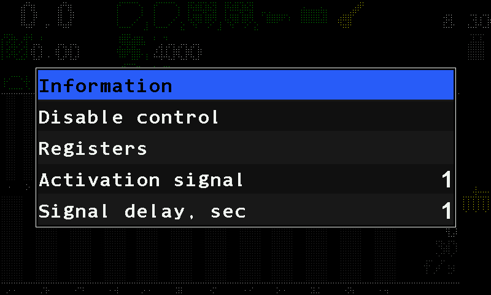
| Paramètre | Ce qu'il fait | Plage, défaut | Niveau |
|---|---|---|---|
| « Activation signal » | Quel état de l'entrée est celui qui mérite d'être signalé (signal d'activation). | 0 / 1 ; 1 | Agronomist |
| « Signal delay, sec » | Combien de temps cet état doit durer avant d'être pris en compte (temporisation du signal, s). | 1 … 30 ; 15 s pour le niveau de carburant, 5 s pour le filtre à air, 1 s pour les autres | Agronomist |
La pression d'huile et la charge de la batterie ne sont surveillées que contact mis ; le niveau de carburant et le filtre à air, toujours. Alarmes : Tractor engine alarms.
Actionneur de jalonnage
Les deux paramètres de l'actionneur de jalonnage, où se trouve le reste de ses réglages, et ce que montre son écran d'état.
L'actionneur de jalonnage coupe les sections du passage de jalonnage. Il a deux paramètres propres, dans son menu contextuel — maintenez le doigt sur sa tuile de l'écran Motors (Réglages des capteurs) :
| Paramètre | Valeurs | Niveau |
|---|---|---|
| « Cutoff position » | « Pulled out » (sorti) / « Pulled in » (rentré) — la position de l'actionneur dans laquelle ses sections sont coupées (position de coupure). « Pulled out » par défaut. | Agronomist |
| « Switch » | « when seeding » (pendant le semis) / « always » (toujours) — quand l'actionneur est commuté (commutation). « when seeding » par défaut. | Agronomist |
Le reste de ses réglages se trouve ailleurs :
| Quoi | Où |
|---|---|
| L'adresse et les voies de traceurs de son contrôleur | Configurer un contrôleur d'actionneur de jalonnage |
| Le rythme — quel passage coupe quel actionneur | Régler le rythme de jalonnage |
| Quelles sections appartiennent à l'actionneur | « Relation of sensors to actuators » (correspondance des capteurs et des actionneurs) — Paramètres du semoir |
L'écran d'état de l'actionneur affiche Status: Pulled in, Pulled out, Working pendant que l'obturateur se déplace, ou Unknown. Alarmes : Alarmes de jalonnage.
Configuration des appareils — avant de commencer
Ce qu'est la configuration des appareils, la préparation qu'elle exige, et le schéma en trois éléments que suit chaque menu de configuration.
À la mise en service d'un système, ou au remplacement d'un capteur, chaque nouvel appareil doit recevoir son adresse — le numéro par lequel le panneau le retrouve sur le réseau de capteurs. Cela se fait dans « Service » → « Sensors Configuration » (configuration des capteurs), un appareil à la fois.
Préparer
Débranchez tous les capteurs du connecteur réseau du panneau.
Branchez seulement l'appareil qui doit recevoir une nouvelle adresse.
Allumez le panneau. Des alarmes de communication perdue apparaissent — fermez-les toutes avec « Close » (fermer) (Fonctionnement des alarmes).
Montez le niveau d'accès à « Agronomist » — voir Activer le niveau Agronomist.
Touchez l'écran d'accueil avec deux doigts, puis touchez « Service » deux fois et « Sensors Configuration » deux fois. Le menu propose quatre types d'appareils : « Seed sensor » (capteur de graines), « Pressure sensor » (capteur de pression), « Concentrator-8 » (concentrateur 8) et « Tramline actuator » (actionneur de jalonnage).

Le menu Sensors Configuration.
Le schéma
Les quatre menus fonctionnent de la même façon :
| Élément | Ce que c'est |
|---|---|
| « Sensor address » / « Device address » | Avec quel appareil le menu dialogue (adresse du capteur / de l'appareil). Laissez « AUTO » et le panneau dialogue avec l'unique appareil qui répond. Un nouveau toucher sur l'élément sélectionné lance une recherche ; chaque toucher suivant passe à l'appareil trouvé suivant. |
| « New address » | L'adresse que l'appareil doit prendre (nouvelle adresse). Réglez-la par un glissement vers la droite ou vers la gauche. |
| « Set » | L'écrit (valider). Touchez-le, puis touchez-le de nouveau. « Done » (terminé) signifie que l'appareil l'a acceptée. |
Ce que « Set » peut répondre :
| Message | Signification |
|---|---|
| « Done » | L'appareil a pris la nouvelle adresse. |
| « More than one device in network! » | Avec « AUTO », plus d'un appareil répond (plus d'un appareil sur le réseau). Débranchez tous les appareils sauf un. |
| « No connection » | Aucun appareil ne répond (pas de connexion). Vérifiez le câble et l'alimentation de l'appareil. |
| « Address: … is used! » | L'adresse choisie appartient déjà à un autre appareil (adresse utilisée). Choisissez-en une autre. |
Ensuite, à chaque fois : débranchez l'appareil et rebranchez-le, revenez à l'écran d'accueil et vérifiez qu'il apparaît à sa place. Puis remettez le niveau sur « Operator » — ou éteignez puis rallumez le panneau, ce qui revient au même.
Les appareils
| Appareil | Rubrique |
|---|---|
| Capteur de graines | Configurer un capteur de graines |
| Capteur de pression | Configurer un capteur de pression |
| Appareil d'entrée HUB8 — « Concentrator-8 » à l'écran | Configurer un HUB8 |
| Contrôleur d'actionneur de jalonnage | Configurer un contrôleur d'actionneur de jalonnage |
| Contrôleurs des moteurs électriques — leur propre accès | Configurer les contrôleurs de moteurs |
Configurer un capteur de graines
Donnez à un capteur de graines neuf ou remplacé le numéro de son rang.
Pour un capteur de graines, la nouvelle adresse est simplement le numéro du rang — le même numéro que l'opérateur voit sous la colonne de l'écran d'accueil. Préparez d'abord comme dans Configuration des appareils : ce capteur seul sur le câble, niveau « Agronomist ».
Ouvrez « Service » → « Sensors Configuration » (configuration des capteurs) → « Seed sensor » (capteur de graines) — touchez chaque élément deux fois. Le menu comporte trois éléments : « Sensor address » (adresse du capteur), « New address » (nouvelle adresse) et « Set » (valider).
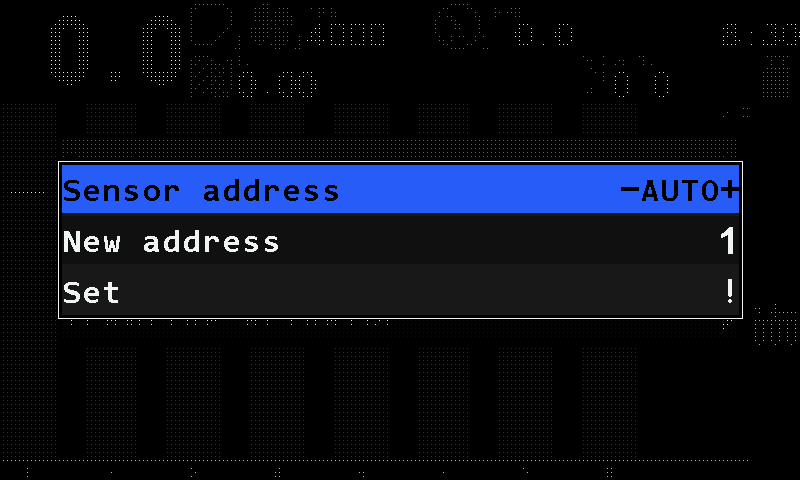
Le menu de configuration Seed sensor. Laissez « Sensor address » sur « AUTO ».
Touchez « New address » et glissez vers la droite ou vers la gauche jusqu'au numéro du rang.
Touchez « Set », puis touchez-le de nouveau. Le panneau répond « Done » (terminé) et, en dessous, « Found # » (trouvé n°) avec le numéro que le capteur portait jusque-là.

Le panneau confirme par « Done ». Le numéro après « Found # » n'est pas reproduit sur l'image. Débranchez le capteur et rebranchez-le. Sur l'écran d'accueil, vérifiez qu'il apparaît sous son rang.
Si le panneau répond « More than one device in network! » (plus d'un appareil sur le réseau), un autre appareil est encore sur le câble. S'il répond « No connection » (pas de connexion), le capteur ne répond pas — vérifiez son câble et son alimentation.
Quand tous les capteurs sont faits, remettez le niveau sur « Operator », ou éteignez puis rallumez le panneau. Les paramètres des capteurs de graines : Capteurs de graines et capteurs d'engrais solide.
Configurer un capteur de pression
Donnez son adresse à un capteur de pression d'air neuf ou remplacé.
Préparez d'abord comme dans Configuration des appareils : ce capteur seul sur le câble, niveau « Agronomist ». Le menu comporte les mêmes trois éléments que tout menu de configuration. Les valeurs d'adresse ne sont pas imprimées dans ce manuel : prenez-les dans la fiche technique du système.
Ouvrez « Service » → « Sensors Configuration » (configuration des capteurs) → « Pressure sensor » (capteur de pression) — touchez chaque élément deux fois. Le menu montre « Sensor address » (adresse du capteur), « New address » (nouvelle adresse) et « Set » (valider).
Laissez « Sensor address » sur « AUTO ».
Touchez « New address ». Le panneau propose de lui-même la valeur du premier capteur de pression ; chaque capteur suivant prend la suivante. Comparez la valeur avec la fiche technique et corrigez-la au besoin par un glissement vers la droite ou vers la gauche.
Touchez « Set », puis touchez-le de nouveau. Le panneau répond « Done » (terminé).
Débranchez le capteur et rebranchez-le. Sur l'écran d'accueil, vérifiez que son indicateur apparaît.
Quand tous les capteurs sont faits, remettez le niveau sur « Operator », ou éteignez puis rallumez le panneau. Ses paramètres : Capteur de pression.
Configurer un HUB8
Indiquez à un appareil d'entrée HUB8 — « Concentrator-8 » à l'écran — ce qui est câblé sur chacune de ses huit voies.
Le HUB8 porte plusieurs appareils à la fois. Sur le panneau, il s'appelle « Concentrator-8 » (concentrateur 8). Son menu est plus long que les autres : après l'adresse de l'appareil viennent ses huit voies, chacune avec un type et un numéro. Préparez d'abord comme dans Configuration des appareils : ce HUB8 seul sur le câble, niveau « Agronomist ».
| Élément | Ce que c'est |
|---|---|
| « Device address » | Avec quel HUB8 le menu dialogue (adresse de l'appareil). Laissez « AUTO ». |
| « Channel 1 type » … « Channel 8 type » | Ce qui est câblé sur la voie (type de la voie) : « Seed sensors » (capteurs de graines) ou « Input device » (appareil d'entrée). |
| « Channel 1 address » … « Channel 8 address » | De quel appareil de ce type il s'agit (adresse de la voie) : pour un capteur de graines, le numéro de son rang ; pour un appareil d'entrée, la valeur de la fiche technique du système. |
| « Set » | Écrit toutes les voies dans le HUB8 (valider). |

Le type et le numéro ensemble font apparaître l'appareil à la bonne place sur l'écran d'accueil.
Ouvrez « Service » → « Sensors Configuration » → « Concentrator-8 » — touchez chaque élément deux fois.
Laissez « Device address » sur « AUTO ».
Pour chaque voie qui porte un appareil, touchez l'élément de son type — « Channel 1 type » pour la voie 1 — et glissez jusqu'au type, puis touchez l'élément de son adresse — « Channel 1 address » — et glissez jusqu'au numéro. Laissez telle quelle une voie qui ne porte rien.
Glissez vers le haut jusqu'à « Set », à la fin du menu, touchez-le, puis touchez-le de nouveau. Le panneau répond « Done » (terminé).
Débranchez le HUB8 et rebranchez-le. Sur l'écran d'accueil, vérifiez que chaque appareil apparaît à sa place.
Deux voies du même type ne peuvent pas avoir le même numéro : « Set » refuse alors avec « Invalid profile! » (profil invalide) et n'écrit rien.
Quand tous les appareils sont faits, remettez le niveau sur « Operator », ou éteignez puis rallumez le panneau.
Configurer un contrôleur d'actionneur de jalonnage
Indiquez à un contrôleur d'actionneur quel actionneur de jalonnage il pilote et quels capteurs de traceurs lui sont câblés.
Le contrôleur d'actionneur porte trois choses à la fois — l'actionneur de jalonnage et les deux capteurs de traceurs du passage — et chacune a sa propre ligne. C'est pourquoi un seul contrôleur sert un actionneur et les deux traceurs. Préparez d'abord comme dans Configuration des appareils : ce contrôleur seul sur le câble, niveau « Agronomist ».
| Élément | Ce que c'est |
|---|---|
| « Device address » | Avec quel contrôleur le menu dialogue (adresse de l'appareil). Laissez « AUTO ». |
| « Actuator » | Le numéro de l'actionneur de jalonnage que ce contrôleur pilote (actionneur), ou « No » (aucun) s'il n'en pilote aucun. |
| « Input device, channel 1 » | Le premier capteur de traceur (appareil d'entrée, voie 1), ou « No ». |
| « Input device, channel 2 » | Le second capteur de traceur (appareil d'entrée, voie 2), ou « No ». |
| « Set » | Écrit les trois lignes dans le contrôleur (valider). |

Ouvrez « Service » → « Sensors Configuration » → « Tramline actuator » — touchez chaque élément deux fois.
Laissez « Device address » sur « AUTO ».
Réglez « Actuator », « Input device, channel 1 » et « Input device, channel 2 » : touchez chaque ligne et glissez vers la droite ou vers la gauche jusqu'à sa valeur.
Touchez « Set », puis touchez-le de nouveau. Le panneau répond « Done » (terminé).
Débranchez le contrôleur et rebranchez-le. Sur l'écran d'accueil, vérifiez que l'actionneur et les traceurs apparaissent.
« Set » refuse avec « Invalid profile! » (profil invalide), et n'écrit rien, quand les trois lignes sont sur « No », ou quand les deux voies de traceurs portent le même numéro.
Quand tous les appareils sont faits, remettez le niveau sur « Operator », ou éteignez puis rallumez le panneau. Les réglages propres de l'actionneur : Actionneur de jalonnage ; les traceurs : Capteurs de traceurs.
Configurer les contrôleurs de moteurs
Donnez son adresse à un contrôleur de moteur de dosage, choisissez le type de contrôleur et réglez ses paramètres.
Les contrôleurs qui pilotent les moteurs de dosage ne s'adressent pas depuis « Sensors Configuration ». Ils ont leur propre accès, leur propre choix du type de contrôleur et leurs propres paramètres.
Ouvrir le menu du contrôleur de moteur
Montez le niveau à « Agronomist » (Activer le niveau Agronomist).
Touchez l'écran d'accueil avec deux doigts, touchez « Service » deux fois, puis « Electric motors » (moteurs électriques) deux fois. L'écran de diagnostic des contrôleurs s'ouvre sur le moteur 1. Le même écran s'ouvre par « Electric motors » dans le menu contextuel d'un moteur.

L'écran Electric motors du moteur 1, page « Registers ». Touchez l'écran avec deux doigts. Deux éléments apparaissent : « Change address » (changer l'adresse) et « Configuration » (configuration).

Le menu de l'écran Electric motors.
Changer l'adresse
Touchez « Change address », puis touchez-le de nouveau. Trois éléments s'ouvrent.
« Motor address » (adresse du moteur) — l'adresse à laquelle le contrôleur répond actuellement. Laissez-la telle que trouvée.
« New address » (nouvelle adresse) — l'adresse qu'il doit prendre. Prenez-la dans la fiche technique du système ; les valeurs ne sont pas imprimées dans ce manuel.
Touchez « Set » (valider), puis touchez-le de nouveau, pour l'écrire.
Choisir le type de contrôleur
« Configuration » ouvre le choix du type de contrôleur, proposé par numéro. Le panneau relit le type dans le contrôleur et s'ouvre sur celui qui répond. Choisir un autre type à la main sert à régler une carte de remplacement — pas à changer ce qu'est un moteur.
| Type | Ce que c'est |
|---|---|
| « 1)universal » | Le contrôleur universel : deux voies à courant continu ou une voie pas à pas sur la même carte. |
| « 2)DC motor » | Un contrôleur de moteur à courant continu. |
| « 3)STEPPER fw0.006+ » | Un contrôleur de moteur pas à pas, micrologiciel 0.006 et suivants. |
| « 4)BGxxCI » | Un moteur BG45CI à contrôleur intégré, sur l'ancienne carte. |
Si le contrôleur qui répond ne convient pas au menu, le panneau le dit : « Wrong controller type! » (mauvais type de contrôleur), « Old firmware version! » (ancienne version du micrologiciel) ou « Wrong controller work mode! » (mauvais mode de fonctionnement du contrôleur).
Régler les paramètres
Chaque menu de configuration se termine par « Set », et « Set » porte une valeur propre — le groupe d'adresses : « Motor address » (ce contrôleur seul), « ALL » (tous), « All-Seeding » (tous les semis) ou « All-Fertilizer » (tous les engrais). Rien n'atteint le contrôleur tant que « Set » n'est pas validé — les éléments au-dessus modifient les nombres que le panneau détient, pas ceux sur lesquels le contrôleur fonctionne. « Set » répond « Done », « FAILURE » ou « No connection » ; un groupe qui n'a aucun moteur dans le profil reçoit la réponse « EM of dispensers is missing in profile » (moteurs électriques des doseurs absents du profil).
| Type | Ce qui lui est donné |
|---|---|
| STEPPER | « Pulses » 1 … 8192 — les impulsions d'un tour de l'arbre du moteur ; « Motor type » (type de moteur) dans une liste ; « Set ». |
| BGxxCI | « Pulses » 1 … 8192 ; « Set ». Rien d'autre — le contrôleur porte le reste. |
| DC motor | « Pulses », « Motor type », les termes du régulateur « PID kP », « PID kI », « PID kD » (0 … 65535, lus en centièmes), « TURBINA » 0/1, et deux couples vitesse–durée « TIME1 » / « SPEED1 », « TIME2 » / « SPEED2 » ; « Set ». |
| universal | Le jeu le plus étendu, en trois menus : « Work mode » (mode de fonctionnement), « Inputs setup » (réglage des entrées) et « Parameters » (paramètres). |
Le menu « Parameters » du contrôleur universel :
| Paramètre | Plage |
|---|---|
| « Motor type » | 0 … 255, d'après la table propre du contrôleur |
| « Pulses » | 1 … 8192 par tour d'arbre |
| « Acceleration,Ms » / « Deceleration,Ms » | 50 … 65535 — la rampe de montée et de descente (accélération / décélération, ms) |
| « Minimum, rpm » / « Maximum, rpm » | 0 … 65535 — la fenêtre de vitesse de l'arbre |
| « PID kP », « PID kI », « PID kD » | 0 … 65535, centièmes |
| « !! Temp,*C » | 0 … 200 — la température à laquelle le contrôleur déclenche une alarme |
| « I_peak,A » / « I_peak,mS » | le courant de crête, en dixièmes d'ampère, et la durée pendant laquelle il peut être tiré |
| « I_push,A » / « I_push,Sec » | le courant de décollage et sa durée |
| « I_hilo,A » / « I_hilo,Sec » | le seuil de courant soutenu et sa durée |
| « Set » | écrit le tout, au groupe d'adresses choisi |
Les quatre noms de types et les éléments « PID kP », « PID kI », « PID kD », « TURBINA », « TIME1 », « SPEED1 », « TIME2 », « SPEED2 », « !! Temp,*C », « I_peak,A », « I_push,A », « I_hilo,A » et leurs partenaires de durée se lisent de la même façon dans toutes les langues du panneau.
Lire ce que le contrôleur signale : Diagnostic des contrôleurs de moteurs.
Diagnostic des contrôleurs de moteurs
Comment lire ce qu'un contrôleur de moteur de dosage signale de lui-même sur l'écran Electric motors — vitesse, code d'erreur, tensions, température, courant, bits d'état et compteurs de défauts — et comment s'y déplacer au toucher.
L'écran Electric motors montre en direct ce qu'un contrôleur de moteur signale de lui-même. Ouvrez-le par un toucher à deux doigts sur l'écran d'accueil → « Service » → « Electric motors » (moteurs électriques), ou par « Electric motors » dans le menu contextuel d'un moteur — dans les deux cas au niveau « Agronomist ». La vue de travail des moteurs est un autre écran : Écran Motors.
- « Mode » (mode) — touchez-le pour changer de page : « Registers » (registres), puis « Statistics » (statistiques).
- « Motor # » suivi d'un numéro — quel contrôleur est affiché (le numéro est omis sur l'image). Glissez vers la droite pour le numéro suivant, vers la gauche pour le précédent.
- « Registers » — le nom de la page. Un contrôleur universel a deux pages de registres, « Registers-1 » et « Registers-2 ».
- Le mot d'état — seize bits du contrôleur ; une cellule allumée (jaune) est un bit positionné.
- La légende des bits — le numéro et le nom de chaque bit. Tableau ci-dessous.
- « Speed » / « Target speed » (vitesse / vitesse de consigne) — ce que fait l'arbre par rapport à ce que le panneau a demandé. Un écart qui ne se referme pas est le premier signe d'une charge que le moteur ne peut pas porter.
- « Error code » / « Act.posit. » (code d'erreur / position actuelle) — le numéro d'erreur propre au contrôleur (codes), et la position à laquelle il se compte.
- « Volt.mot.,mV » / « Volt.elec.,mV » — la tension au moteur et à l'électronique, en millivolts. Une tension du moteur très inférieure à celle de l'électronique signifie que l'alimentation fléchit en charge.
- « Temperat.,C » / « Current,mA » — la température du contrôleur et le courant qu'il tire. Comparez le courant avec « I_hilo,A » réglé pour ce moteur (Configurer les contrôleurs de moteurs).
| Geste | Ce qu'il fait |
|---|---|
| Toucher « Mode » | Page suivante. |
| Glisser vers la droite / vers la gauche | Numéro de contrôleur suivant / précédent. Les numéros vont de 1 à 127 et bouclent ; un numéro sans contrôleur n'affiche rien d'utile. |
| Toucher à deux doigts | Le menu : « Change address », « Configuration » — voir Configurer les contrôleurs de moteurs. |
| Toucher à trois doigts, ou long glissement vers le haut | Ferme l'écran. |
Les bits d'état
| Bit | Nom | Bit | Nom |
|---|---|---|---|
| 0 | Enable | 8 | Toggle |
| 1 | Error | 9 | CmdTgl |
| 2 | Warn. | 10 | CmdErr |
| 3 | Moving | 11 | StpHalt |
| 4 | Reach | 12 | LimCur |
| 5 | Limit | 13 | LimVel |
| 6 | FolErr | 14 | LimPos |
| 7 | HomDone | 15 | LimSVel |
La légende est dessinée en anglais sur tous les panneaux, quelle que soit leur langue : c'est une table de bits du contrôleur, pas un message à l'opérateur.
Les compteurs de défauts

La page « Statistics » montre les défauts que ce moteur a accumulés sur la parcelle active — ils font partie des statistiques de la parcelle, pas du moteur :
| Compteur | Ce qu'il compte |
|---|---|
| « Jammed » | Le rouleau s'est bloqué et le contrôleur a dû abandonner ou reculer (bloqué). |
| « Disconnects » | Le contrôleur a cessé de répondre (déconnexions). |
| « Other » | Tout le reste que le contrôleur a signalé (autres). |
| « In failure » | La distance en mètres que ce moteur a passée en état de défaut (en défaut). |
Chaque compteur est blanc à zéro et rouge dès qu'il ne l'est plus. Un chiffre rouge ne signifie pas que le moteur est défaillant maintenant — il signifie qu'il l'a été, quelque part sur cette parcelle, et que la semence déposée là mérite un coup d'œil. Pour lire une autre parcelle, rendez-la d'abord active (Écran Statistics).
Le menu Service
Chaque élément du menu Service, son niveau d'accès, et ceux qu'un technicien doit laisser tranquilles.
Touchez l'écran d'accueil avec deux doigts, puis touchez « Service » deux fois. Le menu lui-même est affiché à partir du niveau « Agronomist » ; les éléments que vous voyez dépendent du niveau (Niveaux d'accès).

| Élément | Niveau | Ce que c'est |
|---|---|---|
| « Profile » | Agronomist | Quels appareils la machine possède, et combien (profil). Le profil |
| « Sensors Configuration » | Agronomist | Donner leur adresse aux appareils (configuration des capteurs). Configuration des appareils |
| « Registers » | Agronomist | Une vue brute des registres. Ne fait partie d'aucune procédure. |
| « Electric motors » | Agronomist | L'écran de diagnostic et la configuration des contrôleurs des moteurs de dosage (moteurs électriques). Configurer les contrôleurs de moteurs |
| « Serial number » | Service | Le numéro de série du panneau, saisi une fois à la fabrication. |
| « Imitation mode » | Service | « No » / « Yes » — le panneau travaille sur des données simulées (mode simulation). Voir l'avertissement ci-dessous. |
| « Count seeds always » | Agronomist | « No » / « Yes » — « Yes » affiche les compteurs de graines aussi dans les modes « Flow » et « Hybrid » ; sinon ils ne sont affichés qu'en mode « Precise » (toujours compter les graines). |
| « Enter key » | Agronomist | Saisit la clé de licence qui fait sortir le panneau de l'état de démonstration (saisir la clé). Affiché seulement tant que le panneau est dans cet état. |
| « Set trial » | Service | Lance la période de démonstration (régler l'essai). |
| « Trial, hours » | Service | 1 … 999 — la durée de cette période (essai, heures). |
Quatre autres éléments — le protocole du dispositif de suivi, deux commutateurs d'enregistrement sur la carte mémoire et le type d'afficheur — existent dans le micrologiciel mais sont réglés pour ne jamais être affichés. Ils sont inaccessibles à tous les niveaux.
« Imitation mode » s'affiche en anglais, quelle que soit la langue réglée sur le panneau.
Fonctionnement des alarmes
Quand l'Hectare 5 déclenche une alarme, ce que montre la fenêtre d'alarme, comment la fermer au toucher, quels défauts retentissent sans fenêtre, et comment utiliser les rubriques d'alarmes de ce manuel.
Une alarme est une fenêtre qui s'ouvre sur l'écran de travail, avec le son d'alarme. Elle vous dit qu'un appareil — un capteur, un actionneur, un contrôleur de moteur — ou le système dans son ensemble a détecté un défaut. Les rubriques d'alarmes de cette section sont regroupées par appareil qui déclenche l'alarme. Cherchez les mots que vous voyez à l'écran, pas une description de ces mots.
Quand le panneau déclenche une alarme
Un défaut n'est pas signalé à l'instant où il apparaît. La condition doit persister sans interruption pendant la durée réglée dans « Alarm delay » (temporisation des alarmes) avant que la fenêtre d'alarme s'ouvre.
| Réglage | Valeur |
|---|---|
| Où il se règle | Menu « Settings » (réglages), élément « Alarm delay », au niveau « Operator ». Voir Le menu Settings. |
| Plage | 2 à 20 secondes, par pas de 1 seconde. |
| Valeur par défaut | 3 secondes. Une valeur hors plage est ramenée d'elle-même à la valeur par défaut. |
Une courte temporisation fait réagir vite le panneau, mais aussi aux perturbations brèves — un seul cahot, une brève interruption du flux de graines. Une longue temporisation garde l'écran calme, mais un vrai défaut peut durer jusqu'à vingt secondes avant que vous en soyez informé.
Deux cas ne suivent pas la temporisation :
- La communication perdue se compte en interrogations, pas en secondes. « Connection lost » (connexion perdue) apparaît après trois interrogations de suite sans réponse de l'appareil.
- Juste après le réglage d'un capteur, ses alarmes ne sont pas traitées pendant une courte période de blocage. Cela évite une rafale d'alarmes pendant la configuration d'un appareil.
La fenêtre d'alarme
- « FAILURE! » (défaillance !) — le titre de toute fenêtre d'alarme, sur une barre rouge, quel que soit le défaut. Ce n'est pas le défaut lui-même.
- Le texte de l'alarme — le défaut. Cherchez-le sous ce texte dans les rubriques d'alarmes.
- Le type d'appareil qui déclenche l'alarme — ici un capteur de trémie. Le même texte peut venir d'appareils différents ; cette ligne vous dit lequel.
- Le numéro de l'appareil — ici la trémie 2. Quand plusieurs appareils du même type déclenchent la même alarme, ils partagent une seule fenêtre et sont listés ensemble, par exemple #3-5,8.
- « Close » (fermer) — ferme cette alarme. Plus bas.
Une alarme de surintensité d'un moteur ajoute une ligne avec le courant mesuré par le contrôleur, en ampères. Les alarmes du panneau lui-même — par exemple « User is Agronomist! » (l'utilisateur est Agronomist) — n'ont pas de ligne d'appareil ; leur texte commence par la ligne « HOME - close message » (HOME : fermer le message). Elles se ferment comme toutes les autres, avec « Close ».
Fermer une alarme
Touchez « Close » dans la fenêtre. Cette alarme se ferme et le son s'arrête. S'il y a d'autres alarmes en attente, la suivante s'ouvre. Rien d'autre ne ferme une fenêtre d'alarme — les touchers ailleurs, les glissements et le toucher à trois doigts sont ignorés tant qu'elle est ouverte.
Fermer une fenêtre ne répare pas le défaut. Les alarmes d'un appareil encore actives sont comptées sur son écran d'état — voir L'écran d'état d'un capteur.
Les alarmes sont masquées aux niveaux d'accès supérieurs
Aux niveaux « Agronomist » et « Service », aucune fenêtre d'alarme ne s'affiche — sauf l'unique avertissement qui le dit, User is Agronomist — et les défauts sans fenêtre restent silencieux eux aussi. Les alarmes ne sont pas perdues : elles attendent. Quand vous revenez au niveau « Operator », le panneau écarte celles qui ont disparu et affiche celles qui sont toujours vraies, l'une après l'autre. Voir Niveaux d'accès.
Alarmes sans fenêtre
Deux défauts ne s'affichent pas dans une fenêtre, parce que vous devez voir l'écran de travail pendant que vous les corrigez. Au niveau « Operator », le son d'alarme retentit tant qu'ils durent, pourvu qu'aucune fenêtre d'alarme ne soit ouverte :
- « SLOWER » (plus lentement) ou « FASTER » (plus vite) — la vitesse d'avancement est hors des limites réglées pour le capteur de vitesse. Le champ de vitesse montre le mot. Voir Indicateurs.
- « NOT UNDER CONTROL » (hors surveillance) — des rangs passent sous la ligne de contrôle de leur diagramme. Voir Le diagramme des sections.
Comment les rubriques d'alarmes sont écrites
Chaque alarme a son propre titre, avec le texte exactement comme à l'écran ; quand le message tient sur deux lignes du panneau, les deux lignes sont données. En dessous : ce que le panneau a détecté, et ce qu'il faut vérifier, dans l'ordre où un mécanicien le vérifie — d'abord les contrôles rapides sur le panneau, puis la machine, puis l'appareil lui-même.
Tout appareil : connexion perdue ou mauvais type d'appareil
Les deux alarmes que peut déclencher n'importe quel capteur, actionneur, contrôleur ou appareil d'entrée — aucune réponse de l'appareil, ou réponse d'un mauvais type d'appareil.
Ces deux alarmes ne sont pas liées à un type d'appareil. Le nom de l'appareil dans la fenêtre d'alarme vous dit lequel est concerné. Fonctionnement de la fenêtre : Fonctionnement des alarmes.
« Connection lost » — connexion perdue
Ce que cela signifie. Le panneau n'a reçu aucune réponse de l'appareil à trois interrogations de suite. Cela vaut pour les capteurs, les actionneurs, les contrôleurs et les appareils d'entrée.
À vérifier, dans cet ordre :
- L'appareil est raccordé au réseau.
- Le câble et le connecteur de l'appareil.
- L'alimentation de l'appareil. Elle doit respecter les valeurs du passeport de l'appareil.
- L'appareil doit bien être là : un appareil du profil qui n'est pas monté déclenche aussi cette alarme. Laissez un tel appareil hors surveillance (Mettre un capteur sous ou hors surveillance).
« Wrong device type! » — mauvais type d'appareil
Ce que cela signifie. Un appareil d'un autre type répond là où le panneau attend un appareil de ce type. La cause est soit un mauvais réglage du profil du système, soit une mauvaise configuration de l'appareil lui-même.
Que faire : appelez le service d'assistance. N'essayez pas de corriger en modifiant au hasard le profil ou la configuration de l'appareil — voir Configuration des appareils.
Arbre de turbine ou de doseur : alarmes de vitesse
Que faire quand la turbine ou l'arbre du doseur tourne trop lentement, trop vite, ou pas du tout.
Le capteur de turbine et le capteur d'arbre de doseur emploient les deux mêmes messages. Le nom de l'appareil dans la fenêtre d'alarme vous dit lequel c'est. Fonctionnement de la fenêtre : Fonctionnement des alarmes.
« Low speed of rotation » / « High speed of rotation » — vitesse de rotation trop faible / trop élevée
Ce que cela signifie. La turbine ou l'arbre du doseur tourne plus lentement ou plus vite que permis. Pour la turbine, les limites sont « Minimum, rpm » (minimum, tr/min) et « Maximum, rpm » (maximum, tr/min) ; pour l'arbre du doseur, le panneau le compare à la vitesse que demande la vitesse d'avancement, dans la limite de « Maximum error, % » (écart maximal).
À vérifier, dans cet ordre :
- L'organe surveillé — la turbine ou le doseur et son entraînement.
- Les réglages du capteur : pour la turbine « Minimum, rpm », « Maximum, rpm » et « Pulses » (impulsions) — voir Capteur de turbine ; pour le doseur — voir Capteur d'arbre de doseur.
- Doseur uniquement : la vitesse d'avancement affichée sur le panneau correspond à la vitesse réelle.
- Le capteur lui-même est en état de marche.
- Doseur uniquement : faites l'étalonnage — voir Étalonner la rotation du doseur.
« No rotation » — pas de rotation
Ce que cela signifie. L'arbre du doseur ne tourne pas alors que la machine sème ou se déplace. Seul le capteur d'arbre de doseur déclenche cette alarme. L'arbre est considéré à l'arrêt quand aucune impulsion n'est venue pendant « Period, s » (période, s).
À vérifier, dans cet ordre :
- Le doseur et son entraînement.
- Les réglages du capteur, surtout « Period, s » — voir Capteur d'arbre de doseur.
- Le capteur lui-même est en état de marche.
Trémie vide
Que faire quand le panneau signale qu'une trémie est en train de se vider.
Le capteur de trémie est placé dans la trémie à une hauteur fixe. Il signale quand le produit tombe en dessous. Sur l'écran d'accueil, l'icône de la trémie passe du vert plein au rouge vide. Fonctionnement de la fenêtre : Fonctionnement des alarmes.
« Hopper empty » — trémie vide
Ce que cela signifie. Le niveau de produit dans la trémie est très bas. La trémie doit être remplie.
À vérifier, dans cet ordre :
- Remplissez la trémie.
- Si le produit se trouve au-dessus de la hauteur de montage du capteur et que l'alarme persiste, vérifiez que le capteur est en état de marche. Son écran d'état montre le niveau sur son entrée, "0" ou "1" — voir L'écran d'état d'un capteur.
Le capteur de trémie n'a pas de réglages propres en dehors des réglages communs — voir Capteurs de trémie, de position de travail et du moteur.
Pression d'air trop haute ou trop basse
Que faire quand le capteur de pression du circuit d'air signale une pression ou une dépression hors de la plage permise.
Le capteur de pression mesure la surpression ou la dépression du circuit d'air. Les deux alarmes portent sur la valeur de la pression ou de la dépression, quelle qu'elle soit, et seulement pendant le semis ou le déplacement avec l'outil en position de travail. Les limites sont décrites dans Capteur de pression. Fonctionnement de la fenêtre : Fonctionnement des alarmes.
« High pressure » — pression élevée
Ce que cela signifie. La pression ou la dépression mesurée dépasse « Maximum, Pa ».
À vérifier, dans cet ordre :
- Réduisez la vitesse de la turbine.
- La position du volet de réglage de l'admission d'air, s'il y en a un.
- Le tuyau du capteur de pression est correctement raccordé, et la ligne de mesure n'est pas obstruée.
« Low pressure » — pression basse
Ce que cela signifie. La pression ou la dépression mesurée est inférieure à « Minimum, Pa ».
À vérifier, dans cet ordre :
- Augmentez la vitesse de la turbine.
- La position du volet de réglage de l'admission d'air, s'il y en a un.
- La gaine d'air : fuites.
- Le tuyau du capteur de pression est correctement raccordé, et la ligne de mesure n'est pas obstruée.
Dose appliquée trop basse ou trop haute
Que faire quand les capteurs de graines, d'engrais solide ou d'engrais liquide signalent une dose sous ou au-dessus de la plage permise, et ce que signifie NOT UNDER CONTROL.
Les capteurs de section — graines, engrais solide et engrais liquide — comparent la dose qu'ils mesurent à la consigne. Fonctionnement de la fenêtre : Fonctionnement des alarmes.
| Mode du groupe | « Under allowable rate » | « Over allowable rate » |
|---|---|---|
| « Flow » | Le débit tombe sous le seuil d'alarme — la ligne de contrôle du diagramme. | Non déclenchée. |
| « Hybrid », « Precise » | La dose tombe sous la consigne de plus de « Rate error,% ». | La dose dépasse la consigne de plus de « Rate error,% ». |
« Under allowable rate » — dose inférieure à la dose admise
Ce que cela signifie. Un capteur de section — graines, engrais solide ou engrais liquide — a mesuré trop peu de produit pendant le travail.
À vérifier, dans cet ordre :
- Il y a assez de produit dans les trémies ou dans la cuve.
- La vitesse d'avancement affichée sur le panneau correspond à la vitesse réelle.
- Capteur de graines ou d'engrais solide : « Fraction ». Il faudra peut-être réduire la valeur. Voir Capteurs de graines et capteurs d'engrais solide.
- Capteur d'engrais liquide : « Pulses per liter ». Il faudra peut-être réduire la valeur. Voir Engrais liquide.
- Capteur de graines : son état sur l'écran d'état (« Information » dans son menu contextuel) — voir L'écran d'état d'un capteur.
- Le doseur : est-il en état de marche, et correctement réglé ?
« Over allowable rate » — dose supérieure à la dose admise
Ce que cela signifie. Un capteur de section — graines, engrais solide ou engrais liquide — a mesuré trop de produit pendant le travail.
À vérifier, dans cet ordre :
- La vitesse d'avancement affichée sur le panneau correspond à la vitesse réelle.
- Capteur de graines ou d'engrais solide : « Fraction ». Il faudra peut-être augmenter la valeur.
- Capteur d'engrais liquide : « Pulses per liter ». Il faudra peut-être augmenter la valeur.
- Capteur de graines : son état sur l'écran d'état.
- Le doseur : est-il en état de marche, et correctement réglé ?
« NOT UNDER CONTROL » — hors surveillance, sans fenêtre
Quand des rangs passent sous la ligne de contrôle, l'écran d'accueil affiche « NOT UNDER CONTROL » en rouge et, au niveau « Operator », le son d'alarme retentit — mais aucune fenêtre d'alarme ne s'ouvre. Les rangs sous la ligne ne sont pas gardés.
À vérifier, dans cet ordre :
- La vitesse d'avancement affichée sur le panneau correspond à la vitesse réelle.
- Le seuil d'alarme du diagramme : est-il au-dessus de la dose que la machine applique réellement ? Abaissez-le, ou laissez le panneau le régler — Régler le seuil d'alarme.
- Il y a assez de produit dans les trémies ou dans la cuve.
- « Fraction » des capteurs de graines ou d'engrais, ou « Pulses per liter » des capteurs de liquide — il faudra peut-être réduire la valeur.
- Le doseur : est-il en état de marche, et correctement réglé ?
Ce que signifie la ligne : Le diagramme des sections.
Trop de doubles ou de manques
Que faire quand un capteur de graines d'un semoir monograine compte plus de doubles ou de manques que permis.
Les doubles et les manques ne sont comptés qu'en mode de semis « Precise » — sur un semoir monograine. Chaque alarme n'est déclenchée que si sa limite est réglée : « Doubles error,% » et « Skips error,% » sur « No » la désactivent. Fonctionnement de la fenêtre : Fonctionnement des alarmes.
« High % of doubles » — pourcentage élevé de doubles
Ce que cela signifie. La part de doubles que compte le capteur dépasse « Doubles error,% ».
À vérifier, dans cet ordre :
- La vitesse d'avancement affichée sur le panneau correspond à la vitesse réelle.
- « Doubles error,% » dans les réglages des capteurs de graines — la limite est-elle raisonnable ? Voir Capteurs de graines et capteurs d'engrais solide.
- « Fraction » dans les réglages des capteurs de graines. Il faudra peut-être augmenter la valeur.
- L'état du capteur sur son écran d'état — voir L'écran d'état d'un capteur.
- Le doseur : est-il en état de marche, et correctement réglé ?
« High % of skips » — pourcentage élevé de manques
Ce que cela signifie. La part de manques que compte le capteur dépasse « Skips error,% ».
À vérifier, dans cet ordre :
- La vitesse d'avancement affichée sur le panneau correspond à la vitesse réelle.
- Il y a assez de semences dans les trémies.
- « Skips error,% » dans les réglages des capteurs de graines — la limite est-elle raisonnable ?
- « Fraction » dans les réglages des capteurs de graines. Il faudra peut-être réduire la valeur.
- L'état du capteur sur son écran d'état.
- Le doseur : est-il en état de marche, et correctement réglé ?
Le tronçon sur lequel les parts sont comptées est « Recalculation,m » des capteurs de graines. Aspect des manques et des doubles sur le diagramme : Le diagramme des sections.
Jalonnage : actionneur bloqué ou produit dans le jalonnage
Que faire quand l'actionneur de jalonnage se bloque, que ses capteurs de position se contredisent, ou qu'une section coupée délivre encore du produit.
L'actionneur de jalonnage coupe les sections du passage de jalonnage. Deux capteurs de position de la vanne indiquent au panneau où se trouve son obturateur. Fonctionnement de la fenêtre : Fonctionnement des alarmes.
« Stall » — blocage
Ce que cela signifie. L'actionneur de jalonnage s'est bloqué.
À vérifier, dans cet ordre :
- Les capteurs de position de la vanne de l'actionneur sont en état de marche.
- Le mécanisme de l'actionneur de jalonnage est en état de marche.
« Illegal state » — état impossible
Ce que cela signifie. L'actionneur signale une position impossible : les deux capteurs de position de la vanne se sont déclenchés en même temps. Avec une installation en bon état, cela ne peut pas arriver.
À vérifier : les capteurs de position de la vanne sont en état de marche.
« Seeding to tramline » — semis dans le jalonnage
Ce que cela signifie. Une section qui devrait être coupée pour le jalonnage délivre encore trop de produit. Le capteur de graines, le capteur d'engrais solide ou le capteur d'engrais liquide de cette section l'a mesuré en mode de surveillance du jalonnage.
Capteur de graines ou capteur d'engrais solide — à vérifier, dans cet ordre :
- Le doseur et le mécanisme de coupure du flux sont en état de marche.
- « Toler.sowing to tramline,% » dans les réglages du groupe de capteurs de section. Il faudra peut-être augmenter la valeur. Voir Capteurs de graines et capteurs d'engrais solide.
- « Fraction » dans les réglages du groupe du capteur en alarme. Il faudra peut-être augmenter la valeur.
- L'état du capteur sur son écran d'état — voir L'écran d'état d'un capteur.
Capteur d'engrais liquide — à vérifier, dans cet ordre :
- Le doseur et le mécanisme de coupure du flux sont en état de marche.
- « Tolerable leak to tramline,% » dans les réglages du groupe de capteurs de section. Il faudra peut-être augmenter la valeur. Voir Engrais liquide.
Un capteur dont « Product application » est réglé sur « No » est surveillé de la même façon — comme un rang coupé.
Capteur de graines ou d'engrais obstrué, ébloui ou cassé
Que faire quand un capteur optique de graines ou d'engrais signale un canal bouché, trop de lumière, un défaut propre, ou un micrologiciel périmé.
Les capteurs de graines et d'engrais solide comptent le produit par voie optique : un émetteur éclaire à travers le canal, un récepteur voit chaque grain. Ces alarmes signalent l'état du capteur lui-même, pas la dose. Fonctionnement de la fenêtre : Fonctionnement des alarmes.
« Clogged » — obstrué
Ce que cela signifie. Le capteur de graines ou d'engrais solide a détecté que son canal optique est bouché.
Que faire, dans cet ordre :
- Éliminez l'obstruction.
- Vérifiez qu'il n'y a pas de poussière accumulée dans le canal.
- Vérifiez l'alimentation du capteur. Elle doit respecter les valeurs du passeport de l'appareil.
« Light struck » — éblouissement
Ce que cela signifie. Le capteur de graines ou d'engrais a détecté un niveau de lumière extrêmement élevé dans son canal optique.
Que faire : tenez la lumière directe du soleil à l'écart du canal optique du capteur.
« Broken » — cassé
Ce que cela signifie. Le capteur de graines ou d'engrais solide a détecté un défaut qui lui est propre. Il faudra peut-être le remplacer. Son écran d'état affiche « Faulty ».
Que faire : vérifiez l'alimentation du capteur. Elle doit respecter les valeurs du passeport de l'appareil. Si l'alimentation est en ordre, le capteur devra peut-être être remplacé — appelez le service d'assistance.
« Old firmware! Wrong S&D calc! » — ancien micrologiciel, mauvais calcul des manques et doubles
Ce que cela signifie. Un capteur d'engrais solide au micrologiciel périmé est utilisé alors que l'engrais est en mode « Precise ». Il compte, mais on ne peut pas se fier à ses manques et à ses doubles.
Que faire : appelez le service d'assistance pour faire mettre à jour le micrologiciel du capteur — ou réglez « Mode of fertilizers » (mode de l'engrais) sur « Flow » ou « Hybrid » (Paramètres du semoir).
Moteur : pression d'huile, charge de la batterie, carburant, filtre à air
Que faire quand l'un des capteurs du moteur — pression d'huile, charge de la batterie, niveau de carburant, filtre à air — déclenche une alarme.
Tous les capteurs du moteur partagent un seul texte d'alarme : « FAILURE » (défaillance). Le nom du capteur sous le texte vous dit lequel s'est déclenché. La pression d'huile et la charge de la batterie ne sont surveillées que contact mis ; le niveau de carburant et le filtre à air, toujours. Fonctionnement de la fenêtre : Fonctionnement des alarmes. Les réglages nommés ci-dessous sont décrits dans Capteurs de trémie, de position de travail et du moteur.
« FAILURE » — « Emergency oil pressure » (pression d'huile critique)
Ce que cela signifie. Le capteur de basse pression d'huile s'est déclenché.
À vérifier, dans cet ordre :
- Le capteur de basse pression d'huile est en état de marche.
- « Activation signal » dans les réglages du capteur de basse pression d'huile.
- Si un capteur d'allumage figure dans le profil : sa surveillance est-elle activée ?
- Si un capteur d'allumage figure dans le profil : est-il en état de marche ?
« FAILURE » — « No battery charge » (pas de charge de la batterie)
Ce que cela signifie. La batterie n'est pas chargée.
À vérifier, dans cet ordre :
- Le capteur de charge de la batterie est en état de marche.
- « Activation signal » dans les réglages du capteur de charge de la batterie.
- Si un capteur d'allumage figure dans le profil : sa surveillance est-elle activée ?
- Si un capteur d'allumage figure dans le profil : est-il en état de marche ?
« FAILURE » — « Low fuel » (niveau de carburant bas)
Ce que cela signifie. Il reste peu de carburant dans le réservoir.
À vérifier, dans cet ordre :
- Le capteur de niveau de carburant est en état de marche.
- « Activation signal » dans les réglages du capteur de niveau de carburant.
- « Signal delay, sec » dans les réglages du capteur de niveau de carburant. La valeur par défaut est de 15 secondes.
« FAILURE » — « Air filter » (filtre à air)
Ce que cela signifie. Le filtre à air est colmaté.
À vérifier, dans cet ordre :
- Le capteur du filtre à air est en état de marche.
- « Activation signal » dans les réglages du capteur du filtre à air.
- « Signal delay, sec » dans les réglages du capteur du filtre à air. La valeur par défaut est de 5 secondes.
Le capteur d'allumage lui-même ne déclenche jamais de fenêtre d'alarme : une clé jaune sur l'écran d'accueil dit seulement que le contact est coupé (Indicateurs).
Dose de produit au poids trop basse, trop haute ou impossible
Que faire quand un produit dosé au poids — par un moteur électrique ou par un doseur surveillé au poids — manque sa dose de consigne, ou ne peut pas l'atteindre du tout.
Ces alarmes sont déclenchées par le système dans son ensemble, pas par un appareil. Elles existent pour chacun des quatre produits séparément : le numéro du message est celui du produit. L'écart qu'un produit peut avoir par rapport à sa consigne est « Product rate error,% » dans le menu « Settings » (Le menu Settings). Fonctionnement de la fenêtre : Fonctionnement des alarmes.
« Rate of Product 1 » / « is to low! » — ou — « is to high! » — dose du produit 1 trop basse / trop haute
Même chose pour les produits 2, 3 et 4. Le panneau écrit le message avec cette orthographe.
Ce que cela signifie. Le produit est appliqué en dessous ou au-dessus de sa dose de consigne en kilogrammes par hectare, de plus de « Product rate error,% ».
Produit dosé par un moteur électrique — à vérifier, dans cet ordre :
- La dose de consigne du produit.
- Les limites de vitesse en vigueur, sur l'écran d'état du capteur de vitesse — voir L'écran d'état d'un capteur.
- Les réglages du moteur électrique qui entraîne l'arbre du doseur — voir Moteur électrique de doseur.
- Le doseur.
- Le capteur de rotation du moteur électrique est en état de marche.
- La charge de travail du moteur. Sous 20 % ou au-dessus de 80 %, essayez un rouleau doseur d'une autre taille : un rouleau plus grand si l'on applique trop peu, un plus petit si l'on applique trop.
- Étalonnez le rouleau doseur — voir Étalonner un moteur de dosage au poids.
Capteur de doseur avec « Weight control » activé — à vérifier, dans cet ordre :
- La dose de consigne du produit.
- Les réglages du capteur d'arbre de doseur — voir Capteur d'arbre de doseur.
- Le doseur.
- Le capteur de doseur est en état de marche.
- Étalonnez le doseur — voir Étalonner le doseur au poids.
« Product dosage is » / « impossible! Check product » / « rate and calibration! » — dosage du produit impossible
Ce que cela signifie. Avec les réglages et la dose de consigne actuels, le produit ne peut pas du tout être appliqué au poids : la vitesse la plus basse à laquelle les rouleaux doseurs peuvent délivrer la dose est déjà égale ou supérieure à la plus haute. Sur l'écran d'accueil, une icône de produit rouge clignote dans la colonne de droite.
À vérifier, dans cet ordre :
- Les doses de consigne des produits — un seul produit trop exigeant ferme la fenêtre pour tous.
- « Min speed, km/h » et « Max speed, km/h » du capteur de vitesse — voir Capteur de vitesse d'avancement.
- Les réglages des moteurs électriques qui appliquent les produits au poids, surtout « Minimum, rpm » et « Maximum, rpm ».
- Étalonnez les rouleaux doseurs des moteurs électriques.
- Si cela n'aide pas : montez des rouleaux doseurs d'une autre taille.
User is Agronomist : les alarmes ne s'affichent pas
Pourquoi le panneau avertit que les alarmes sont masquées, et comment les retrouver au toucher.
Fonctionnement de la fenêtre : Fonctionnement des alarmes.
« User is Agronomist! » / « Alarms will not be shown! » — l'utilisateur est Agronomist / les alarmes ne s'afficheront pas
Ce que cela signifie. Le semis a commencé alors que le niveau d'accès « Agronomist » ou « Service » est réglé. À ces niveaux, le panneau n'affiche pas de fenêtres d'alarme ; cet avertissement est la seule exception. Il apparaît une seule fois pendant tout le temps où vous travaillez à ce niveau. Comme toute alarme du panneau lui-même, son texte commence par la ligne « HOME - close message » ; fermez-la avec « Close ».

Que faire : remettez le niveau d'accès sur « Operator » :
Touchez « Close » dans l'avertissement.
Touchez l'écran d'accueil avec deux doigts, puis touchez « Settings » deux fois.
Glissez vers le haut jusqu'à « User » et touchez-le. Glissez vers la gauche jusqu'à lire « Operator ».
Touchez de nouveau « User ». Descendre d'un niveau n'exige aucun code.
Éteindre puis rallumer le panneau a le même effet : à chaque mise sous tension, le panneau démarre au niveau « Operator ».
Capteur de vitesse en panne, limites de vitesse contradictoires ou signal GPS faible
Que faire quand l'un des deux capteurs de vitesse cesse de donner des impulsions, quand la vitesse minimale et maximale sont réglées à l'envers, ou quand le récepteur intégré voit trop peu de satellites.
Fonctionnement de la fenêtre : Fonctionnement des alarmes.
« Speed sensor #1 failed » / « Speed sensor #2 failed » — capteur de vitesse n° 1 / n° 2 en panne
Ce que cela signifie. Le profil dit que la machine a deux capteurs de vitesse d'avancement, mais le panneau ne voit de mouvement que sur l'un d'eux. Le numéro désigne le capteur muet. Cette alarme ne peut pas apparaître sur une machine à un seul capteur de vitesse.
Que faire, dans cet ordre :
- Vérifiez que les deux capteurs de vitesse sont en état de marche, et réparez ce que vous trouvez.
- Si un capteur ne peut pas être réparé maintenant : modifiez le profil du système pour qu'un seul capteur de vitesse soit utilisé — voir Le profil.
« Error in settings of Min/Max » — erreur dans les réglages Min/Max
Ce que cela signifie. La vitesse d'avancement minimale et la maximale réglées pour le capteur de vitesse se contredisent. Le panneau ne peut pas décider si la vitesse actuelle est permise.
Que faire : vérifiez « Min speed, km/h » et « Max speed, km/h » dans les réglages du capteur de vitesse. Le minimum doit être inférieur au maximum. Voir Capteur de vitesse d'avancement.
« Poor GPS signal quality » — mauvaise qualité du signal GPS
Ce que cela signifie. La vitesse est prise du récepteur intégré au panneau (« GPS internal » est sur « Yes »), et il voit moins de quatre satellites. La vitesse qu'il donne n'est pas fiable. Le symbole de satellite de l'écran d'accueil est rouge.
Que faire, dans cet ordre :
- Donnez au panneau une vue dégagée du ciel ; éloignez-vous des arbres, des bâtiments ou d'un toit de hangar.
- Observez le nombre à côté du symbole de satellite : il indique combien de satellites le récepteur utilise. Attendez qu'il atteigne quatre ou plus.
- Si la réception reste mauvaise, prenez la vitesse du capteur de roue : réglez « GPS internal » sur « No » — voir GPS et Capteur de vitesse d'avancement.
Moteur de dosage : blocage, défauts électriques, bootloader
Que faire quand le contrôleur d'un moteur électrique de doseur signale un blocage, un court-circuit, une surintensité, une mauvaise tension d'alimentation, une surchauffe, un défaut inconnu ou une mise à jour du micrologiciel bloquée.
Ces alarmes viennent du contrôleur qui pilote un moteur électrique de doseur. Le nom dans la fenêtre d'alarme vous dit de quel moteur il s'agit ; l'écran Motors montre quelle tuile est en difficulté (Écran Motors). Fonctionnement de la fenêtre : Fonctionnement des alarmes.
« Motor jammed! » — moteur bloqué
Ce que cela signifie. Le contrôleur ne voit pas de rotation alors que le moteur devrait tourner.
À vérifier, dans cet ordre :
- Le doseur est en état de marche et tourne librement.
- Le capteur de rotation du moteur est en état de marche, et sa liaison avec le contrôleur aussi — le câble et le connecteur.
Si les blocages sont fréquents, « Rollback when jammed » permet au moteur de reculer et de réessayer — voir Moteur électrique de doseur.
« Short circuit » — court-circuit
Ce que cela signifie. Le contrôleur a détecté un court-circuit.
À vérifier, dans cet ordre :
- La liaison par câble : les câbles et le connecteur sont intacts.
- Remplacez le contrôleur par un contrôleur en état de marche pour le tester.
« Over current » — surintensité
Ce que cela signifie. Le courant a dépassé la limite. La fenêtre ajoute une ligne avec le courant mesuré par le contrôleur, en ampères.
À vérifier, dans cet ordre :
- Le moteur et le mécanisme de semis : blocage.
- La liaison par câble : les câbles et le connecteur sont intacts.
- Remplacez le contrôleur par un contrôleur en état de marche pour le tester.
« Under voltage » — tension trop basse
Ce que cela signifie. La tension d'alimentation du moteur est inférieure à la valeur permise. Le moteur ne peut pas tourner.
Mesurez d'abord la tension d'alimentation.
Si elle est trop basse :
- L'alternateur est en état de marche.
- La tension des courroies de l'alternateur.
- Le faisceau d'alimentation est fermement raccordé aux bornes de la batterie ou de l'alternateur, comme l'exige la tension d'alimentation requise.
- Les liaisons par câble assurent un contact électrique fiable.
Si la tension d'alimentation est en ordre : remplacez le contrôleur par un contrôleur en état de marche pour le tester.
« Over voltage » — tension trop haute
Ce que cela signifie. La tension d'alimentation du moteur est supérieure à la valeur permise. Le moteur ne peut pas tourner.
Mesurez d'abord la tension d'alimentation.
Si elle est trop haute :
- L'alternateur est en état de marche.
- Le faisceau d'alimentation est fermement raccordé aux bornes de la batterie ou de l'alternateur, comme l'exige la tension d'alimentation requise.
- Les liaisons par câble assurent un contact électrique fiable.
Si la tension d'alimentation est en ordre : remplacez le contrôleur par un contrôleur en état de marche pour le tester.
« Over temperature » — surchauffe
Ce que cela signifie. Le contrôleur du moteur a surchauffé.
Que faire, dans cet ordre :
- Laissez le moteur refroidir.
- Remplacez le contrôleur par un contrôleur en état de marche pour le tester.
« FAILURE » — défaillance
Ce que cela signifie. Le contrôleur a détecté un défaut inhabituel qui exige le service d'assistance.
Que faire, dans cet ordre :
- Lisez le code de défaut : maintenez le doigt sur la tuile du moteur → « Information » → ligne « Last fault: ». Voir Lire le code de défaut d'un moteur électrique.
- Remplacez le contrôleur par un contrôleur en état de marche pour le tester.
- Communiquez le code et le numéro du moteur au service d'assistance.
« Device in bootloader! » — appareil en mode bootloader
Ce que cela signifie. Le contrôleur est resté en mode de mise à jour du micrologiciel et n'exécute pas son programme de travail. Il ne peut pas piloter le moteur.
Que faire, dans cet ordre :
- Coupez puis rétablissez l'alimentation.
- Si le message revient, la mise à jour du micrologiciel du contrôleur n'a pas été menée à terme. Appelez le service d'assistance.
Pompe d'engrais liquide : alarmes de pression et de dose
Que faire quand le contrôleur de la pompe d'engrais liquide signale une pression trop forte, un capteur de pression en panne, ou une dose qu'il ne peut pas tenir.
Le contrôleur de pompe est construit sur la même électronique que le contrôleur d'un moteur de dosage. Outre les alarmes de cette page, il déclenche les alarmes électriques du contrôleur de moteur de dosage — « Short circuit », « Over current », « Under voltage », « Over voltage », « Over temperature », « FAILURE » et « Device in bootloader! » — avec le même sens et les mêmes mesures : voir Alarmes des moteurs de dosage. Fonctionnement de la fenêtre : Fonctionnement des alarmes.
« High pressure » — pression élevée
Ce que cela signifie. La pression du liquide mesurée a atteint « Max pressure, Bar ».
Que faire, dans cet ordre :
- Réduisez la vitesse d'avancement.
- Dans les réglages du contrôleur de pompe, vérifiez « Max pressure, Bar » et, si la conduite le permet, augmentez-la — voir Engrais liquide.
« Pressure sensor failure! » — panne du capteur de pression
Ce que cela signifie. Le signal du capteur de pression est tombé nettement sous sa plage de travail de 4–20 mA.
À vérifier, dans cet ordre :
- La liaison du capteur avec le contrôleur — le câble et le connecteur sont intacts.
- « Pressure sensor » dans les réglages du contrôleur de pompe désigne l'entrée sur laquelle le capteur est réellement câblé.
- Le capteur est en état de marche. S'il est défaillant, remplacez-le.
L'écran d'état du contrôleur de pompe montre la pression et le signal brut du capteur en mA — voir L'écran d'état d'un capteur.
« Rate low » — dose basse
Ce que cela signifie. Le contrôleur de pompe ne peut pas atteindre la dose réglée : la dose réelle est inférieure à la consigne de plus de « Product rate error,% ».
À vérifier, dans cet ordre :
- La vitesse d'avancement affichée sur le panneau correspond à la vitesse réelle et est raisonnablement stable.
- La charge de travail de la pompe. Au-dessus de 90 % : roulez plus lentement.
- Charge sous 90 %, ou qui saute fortement : augmentez « Product rate error,% » dans le menu « Settings », au niveau « Agronomist » — voir Le menu Settings.
- La pompe est en état de marche.
« Rate high » — dose haute
Ce que cela signifie. Le contrôleur de pompe applique plus que la dose réglée : la dose réelle dépasse la consigne de plus de « Product rate error,% ».
À vérifier, dans cet ordre :
- La vitesse d'avancement affichée sur le panneau correspond à la vitesse réelle et est raisonnablement stable.
- La charge de travail de la pompe. Sous 10 % : roulez plus vite.
- Charge au-dessus de 10 %, ou qui saute fortement : augmentez « Product rate error,% » dans le menu « Settings ».
- La pompe est en état de marche.
Lire le code de défaut d'un moteur électrique
Où le panneau affiche le code de défaut numérique d'un contrôleur de moteur de dosage, et ce que signifie chaque code.
Quand un moteur de dosage déclenche « FAILURE », son contrôleur enregistre aussi un code numérique. Relevez-le et communiquez-le au service d'assistance avec le numéro du moteur.
Faites un long glissement vers la gauche sur l'écran d'accueil jusqu'à l'apparition de l'écran Motors (Écrans de travail). Maintenez le doigt sur la tuile du moteur en défaut ; son menu contextuel s'ouvre. Une tuile de moteur du second écran d'accueil fonctionne de la même façon.
Touchez « Information », puis touchez-le de nouveau. L'écran d'état du moteur s'ouvre.
Lisez la ligne « Last fault: » (dernier défaut). L'état du moteur indique « Faulty » (en défaut) tant qu'une de ses alarmes est active.
Le même code s'affiche sous « Error code » sur l'écran Electric motors, au niveau « Agronomist » — voir Diagnostic des contrôleurs de moteurs.
Les codes
Le panneau n'affiche que le numéro. Les descriptions viennent du contrôleur de moteur lui-même.
Erreurs de commande et de paramètre
Le contrôleur a refusé quelque chose que le panneau lui demandait.
| Code | Description |
|---|---|
| -250 | Commande invalide |
| -251 | Commande inattendue |
| -252 | Syntaxe de commande invalide |
| -253 | Arguments de commande invalides |
| -260 | Nombre d'arguments invalide |
| -261 | L'index indiqué est supérieur à FFFFh |
| -262 | Le sous-index indiqué est supérieur à FFh |
| -300 | Le paramètre n'existe pas |
| -301 | Échec de l'écriture en mémoire |
| -302 | Échec de la restauration |
| -306 | Le paramètre ne peut pas être écrit |
| -307 | Le paramètre ne peut pas être lu |
| -308 | Valeur du paramètre hors plage |
| -316 | La version du jeu de paramètres enregistré ne correspond pas à la version du micrologiciel |
| -318 | Le jeu de paramètres enregistré a une somme de contrôle invalide |
| -322 | Le paramètre ne peut pas être réglé : l'axe est en mouvement |
| -325 | Le paramètre ne peut pas être réglé : le mode de positionnement est inactif |
| -340 | Le paramètre ne peut pas être réglé : une fin de course est active |
| -343 | Le paramètre ne peut pas être réglé : une commande d'arrêt ou de halte est en cours d'exécution |
| -350 | Paramètre non contenu dans l'index indiqué |
| -351 | Paramètre non contenu dans le sous-index indiqué |
Erreurs de l'appareil
Le contrôleur ou le moteur lui-même est en difficulté.
| Code | Description |
|---|---|
| -1000 | Tension d'alimentation trop basse |
| -1001 | Tension d'alimentation excessive |
| -1002 | Tension d'alimentation de l'électronique trop basse |
| -1003 | Tension d'alimentation de l'électronique excessive |
| -1020 | Surtempérature de l'appareil |
| -1021 | Surtempérature du dissipateur thermique |
| -1060 | Court-circuit d'un fil du moteur : entre fils du moteur, entre moteur et masse, ou entre moteur et alimentation |
| -1061 | Surintensité du moteur |
| -4000 | Erreur d'écart de poursuite dans la séquence de mouvement |
| -5100 | Fin de course active |
Zones tactiles et gestes sur chaque écran
Ce que fait chaque geste tactile — sur l'écran d'accueil, le second écran d'accueil, les écrans de travail, dans les menus, sur le pavé numérique et dans les fenêtres.
L'Hectare 5 n'a pas de boutons ; chaque action est un geste sur l'écran. Chaque écran n'écoute que ses propres gestes et ignore les autres. Quand « Buttons sound » (son des touches) est réglé sur « Yes » (oui), chaque geste pris en compte par l'écran est confirmé par un clic.
Types de toucher
| Geste | Comment | |
|---|---|---|
| Toucher | Un doigt, poser et lever en moins d'une demi-seconde. | |
| Maintenir le doigt | Un doigt gardé sur un point plus d'une demi-seconde. Le panneau réagit pendant que le doigt est encore posé. | |
| Double toucher | Deux touchers rapides avec un doigt. | |
| Toucher à deux doigts | Un toucher avec deux doigts à la fois. | |
| Toucher à trois doigts | Un toucher avec trois doigts à la fois. | |
| Glisser le doigt | Un court trait d'un doigt sur l'écran. | |
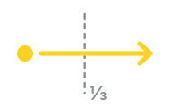 |
Long glissement | Un trait d'un doigt sur plus d'un tiers de l'écran. |
| Glissement à deux doigts, long glissement à deux doigts | Pareil avec deux doigts. |
Écran d'accueil
| Geste | Ce que cela fait |
|---|---|
| Toucher à deux doigts | Ouvre le menu principal. |
| Maintenir le doigt sur un appareil — icône ou colonne | Ouvre son menu contextuel. |
| Maintenir le doigt sur un diagramme, puis glisser vers le haut ou vers le bas | Allume la consigne du diagramme et la modifie, un pas par glissement. |
| Toucher en dehors des diagrammes | Met fin à la modification d'une consigne. |
| Maintenir le doigt sur un indicateur kg/ha | Ouvre le pavé numérique pour la dose de consigne de ce produit. |
| Maintenir le doigt sur un emplacement vide de la colonne de droite | Verrouille ou déverrouille l'application du produit. Un bip court le confirme. Machines à moteurs de doseur ou à pompe uniquement. |
| Double toucher | Règle le seuil d'alarme d'après la dose appliquée. Seulement pendant l'application. |
| Long glissement vers la gauche | Table (Statistics, s'il n'y a pas de Table). |
| Long glissement vers la droite | Second écran d'accueil. |
Second écran d'accueil
| Geste | Ce que cela fait |
|---|---|
| Toucher le symbole des réglages | Ouvre le menu principal. |
| Toucher le symbole GPS | Ouvre l'écran GPS ; un long glissement vers le haut le quitte. |
| Toucher un chevron rouge ou vert | Met un moteur hors ou sous surveillance. |
| Toucher la valeur de l'organe | Affiche l'organe suivant — turbine, pression, pompe. |
| Maintenir le doigt sur la dose, puis glisser vers le haut ou vers le bas | Modifie la dose de semis. |
| Maintenir le doigt sur le symbole stop | Verrouille ou déverrouille l'application du produit. |
| Maintenir le doigt sur un moteur, la vitesse ou la valeur d'un organe | Ouvre son menu contextuel. |
| Long glissement vers la gauche | Retour à l'écran d'accueil. |
Table
| Geste | Ce que cela fait |
|---|---|
| Long glissement à deux doigts vers la droite ou vers la gauche | Tableau suivant ou précédent. |
| Glisser vers le haut ou vers le bas | Fait défiler les lignes. |
| Toucher à deux doigts | Demande « Zero readings? » (remettre les mesures à zéro ?). |
| Long glissement vers la gauche | Statistics. Il n'y a pas de geste de retour. |
Statistics
| Geste | Ce que cela fait |
|---|---|
| Glisser vers le haut ou vers le bas | Fait défiler le rapport, une ligne par glissement. |
| Glissement à deux doigts vers la droite ou vers la gauche | Affiche la parcelle suivante ou la précédente. |
| Toucher à deux doigts | Menu de l'écran. |
| Long glissement vers la gauche | Motors, ou l'écran d'accueil s'il n'y en a pas. Il n'y a pas de geste de retour. |
Motors
| Geste | Ce que cela fait |
|---|---|
| Long glissement vers la gauche | Écran d'accueil. |
| Long glissement vers la droite | Statistics. |
| Maintenir le doigt sur une tuile | Menu contextuel de ce moteur ou de cet actionneur. |
Écran d'état d'un appareil
Ouvert avec « Information » (informations) dans un menu contextuel.
| Geste | Ce que cela fait |
|---|---|
| Glisser vers la droite ou vers la gauche | L'appareil suivant ou le précédent. |
| Glisser vers le haut, ou toucher à trois doigts | Retour. |
Formulaire du rythme de jalonnage
| Geste | Ce que cela fait |
|---|---|
| Glisser vers le haut ou vers le bas | Passer d'une ligne à l'autre. |
| Glisser vers la droite ou vers la gauche | Se déplacer le long d'une ligne ; sur « Rhythm » (rythme), parcourir les rythmes. |
| Toucher à deux doigts | Ouvre la cellule sélectionnée. |
| Maintenir le doigt | Enregistre le rythme sans quitter. |
| Toucher à trois doigts | Enregistre le rythme et revient au menu Tramline. |
Dans un menu
| Geste | Ce que cela fait |
|---|---|
| Toucher un élément | Le sélectionne. |
| Toucher de nouveau l'élément sélectionné | Y entre : ouvre son menu, lance son action, ou ouvre le pavé numérique. |
| Maintenir le doigt sur un élément | Le sélectionne et y entre en même temps. |
| Glisser vers la droite ou vers la gauche | Augmente ou diminue d'un pas la valeur de l'élément sélectionné. Pour une valeur entre crochets, ouvre le pavé numérique. |
| Glisser vers le haut ou vers le bas | Fait défiler la liste. |
| Toucher en dehors du menu, ou toucher à trois doigts | Quitte le menu. |
Pavé numérique
| Toucher | Ce que cela fait |
|---|---|
| Toucher les chiffres | Saisir la valeur. |
| Toucher « OK » | Valider la valeur. |
| Toucher en dehors du pavé | Quitter sans rien modifier. |
| Maintenir le doigt sur le retour arrière | Efface la valeur. |
Fenêtres
| Fenêtre | Toucher |
|---|---|
| Question — bandeau bleu, boutons | Toucher « Yes » — confirmer. Toucher « No » (non) — refuser. Toucher en dehors de la fenêtre — annuler. |
| Information — bandeau bleu ou rouge, sans boutons | Se ferme d'elle-même après environ deux secondes, ou par un toucher dans la fenêtre. |
| Alarme — barre rouge « FAILURE! » (défaillance !) | Toucher « Close » (fermer) — fermer cette alarme. Aucun autre toucher ne fonctionne. |
Termes
Les mots que ce manuel emploie pour les gestes, les doses, la surveillance, les capteurs, le jalonnage et les appareils — ce que chacun signifie sur l'Hectare 5.
Gestes
| Terme | Signification |
|---|---|
| Toucher | Un doigt, poser et lever aussitôt. |
| Maintenir le doigt | Un doigt gardé sur un point plus d'une demi-seconde. |
| Long glissement | Un trait d'un doigt sur plus d'un tiers de l'écran. Il fait passer d'un écran de travail à l'autre. |
| Toucher à deux doigts | Un toucher avec deux doigts à la fois. Sur l'écran d'accueil, il ouvre le menu principal. |
Tous les gestes : Zones tactiles et gestes.
Doses et surveillance
| Terme | Signification |
|---|---|
| Dose | L'intensité de consigne que règle l'opérateur. Le panneau compare l'intensité réelle à celle-ci et signale un écart trop grand. |
| Écart de dose | De combien l'intensité réelle peut s'écarter de la dose avant que cela devienne une alarme. Réglé par groupe de capteurs, en pourcentage (« Rate error,% », écart de dose, %). Pour les produits en masse et la pompe, le réglage est « Product rate error,% » (écart de dose du produit, %). |
| Régulation de l'application du produit | Le panneau ne juge pas le semis à chaque instant : il commence à surveiller quand les conditions sont réunies — la machine est abaissée et en mouvement. Jusque-là, une section silencieuse n'est pas un défaut. |
| Seuil d'alarme | En mode « Flow », l'intensité la plus basse encore considérée comme normale — la ligne de contrôle du diagramme. En dessous, la section est signalée, quoi que fassent les voisines. Voir Le diagramme des sections. |
| Intervalle de trajet | Le tronçon du parcours sur lequel les manques, les doubles et les autres chiffres sont recueillis avant d'être redessinés. Réglé par « Recalculation,m » (recalcul, m), que le panneau renomme « Recalculation,sec » (recalcul, s) quand le mode de semis compte en secondes au lieu de mètres. |
| Part des rangs en train de semer | La part de rangs qui doivent semer pour que le panneau décide que la machine sème — « Percent of sowing,% » (pourcentage de semis), 20 % par défaut. |
| Verrouillage manuel | L'arrêt de toute application de produit à la main, par un maintien du doigt sur un emplacement vide de la colonne de droite de l'écran d'accueil. Une main jaune montre que le verrouillage est actif. Voir Verrouiller l'application du produit à la main. |
| Surveillance (d'un capteur) | Le fait que le panneau surveille ou non un capteur. Un capteur hors surveillance s'affiche avec ! et ne signale rien. Voir Mettre un capteur sous ou hors surveillance. |
| Simulation | Une vitesse d'avancement simulée, réglée dans le capteur de vitesse, utilisée quand le capteur de vitesse est en panne. Voir Travailler sans capteur de vitesse. |
Modes de contrôle du semis
| Mode | Signification |
|---|---|
| « Precise » (précis) | Graines par mètre, avec manques et doubles — semoirs monograines. |
| « Flow » (débit) | Graines par seconde par rapport à un seuil d'alarme — semoirs à céréales. |
| « Hybrid » (hybride) | Graines par mètre, avec un écart de dose comme en « Precise » ; le seuil d'alarme peut être réglé automatiquement comme en « Flow ». |
Capteurs
| Terme | Signification |
|---|---|
| Capteur de surveillance de section | Le nom commun d'un capteur de graines, d'engrais solide ou d'engrais liquide. Un par section de la machine. |
| Capteur de graines | Compte les graines qui passent dans une section. Sur un semoir monograine, il distingue aussi les doubles et les manques ; sur un semoir à céréales, il ne mesure que l'intensité — les graines arrivent trop rapprochées pour être distinguées. |
| Capteur d'engrais solide | Le même appareil, qui surveille une conduite d'engrais granulé. |
| Capteur d'engrais liquide | Un débitmètre qui compte le volume passant dans une section. |
| Capteur de vitesse | Mesure la vitesse d'avancement. La distance, la surface et toutes les doses en sont calculées. Sur l'Hectare 5, la vitesse peut aussi provenir du récepteur GPS intégré. |
| Capteur de doseur | Surveille que l'arbre du doseur tourne. |
| Capteur de turbine | Surveille la vitesse de la turbine par rapport à un minimum et un maximum réglés. |
| Capteur de pression | Surveille la surpression ou la dépression, selon la façon dont il est raccordé. |
| Capteur de trémie | Signale quand le produit est tombé sous le point où se trouve le capteur. |
| Capteur de position de travail | Indique au panneau si la machine est abaissée au travail ou relevée pour le transport. |
| Capteurs de traceurs | Signalent quel traceur mécanique est abaissé, pour que le passage de jalonnage puisse avancer tout seul. |
Jalonnage
| Terme | Signification |
|---|---|
| Jalonnage | Une voie de passage laissée non semée, créée en coupant une ou plusieurs sections sur des passages choisis. |
| Rythme | La séquence répétée de passages, avec les passages repérés où certaines sections ne doivent pas semer. Voir Régler le rythme de jalonnage. |
| Passage | Une passe de la machine à travers le champ. Le rythme les compte et revient au premier quand il n'y en a plus. |
| Actionneur de jalonnage | L'appareil qui coupe les sections. Une machine peut en avoir jusqu'à quatre. |
Appareils
| Terme | Signification |
|---|---|
| HUB8 (appareil d'entrée ; dans les menus « Concentrator-8 », concentrateur 8) | Un concentrateur à huit voies pour les capteurs qui n'ont pas de contrôleur propre. Il les surveille et signale chacun au panneau comme s'il était un appareil. |
| Contrôleur de moteur électrique | Pilote un ou deux moteurs de doseur, ou la pompe d'engrais liquide. |
| microSD | La carte mémoire, pour les rapports. |
| Profil | La liste de ce que porte la machine. Le panneau en tire ses écrans. Voir Profil. |
Niveaux d'accès
| Niveau | À quoi il sert |
|---|---|
| « Operator » (opérateur) | Le niveau auquel le panneau démarre après chaque mise sous tension. Travail quotidien. C'est le seul niveau où les fenêtres d'alarme sont affichées. |
| « Agronomist » (agronome) | Les réglages de mise en service, le profil de la machine et la configuration des adresses des appareils. Exige un code. |
| « Service » (service) | Les éléments de remise à zéro et les réglages de service. Utilisé par le service après-vente ; exige son propre code. |
Le niveau se choisit sous « Settings » (réglages) → « User » (utilisateur). Détails : Niveaux d'accès.